엔진 탈착(Removal) 사유: 시한도래(TBO: Time Between Overhaul) 도달, 손상·고장, 정비점검, 개조.
예기치 못한 탈착 사유: 금속칩 발견, 압력 이상, 과열, FOD 손상, 추락·하드랜딩 후 점검.
탈착 전 사유를 명확히 기록해 후속 정비·원인분석에 활용한다.
- A. 원인을 규명하고 시정한 뒤에 비행에 투입한다determine and correct the source before returning the aircraft to service
- B. 필터만 교환하고 다음 검사 때 재확인한다replace the filter only and recheck at the next inspection
- C. 오일만 교환하면 된다change the oil only
- A. 모든 운영자에게 강제되는 법적 한계다It is a legal limit mandatory for all operators
- B. 제작사 권장값이며 사설 소유자는 초과할 수 있다It is a manufacturer recommendation; a private owner may exceed it
- C. 초과하면 형식증명이 무효가 된다Exceeding it voids the type certificate
엔진 교환 판단 기준
Criteria for Engine Replacement엔진 탈착·장착 절차는 항공기와 엔진 종류에 따라 크게 다르므로, 모든 엔진에 적용되는 단일 지침은 없다. 다만 대부분의 엔진 교환에는 공통 작업이 있다: 전기·유압·연료공급·흡기/배기·엔진 컨트롤·엔진 마운트 연결을 분리하고 다시 연결하는 것이다.Engine removal/installation procedures vary widely by aircraft and engine type, so no single list applies to all engines. But most replacements share common tasks: disconnecting and reconnecting electrical, hydraulic, fuel-supply, intake/exhaust, engine-control, and engine-mount connections.
엔진을 교환해야 하는 일반적 조건: ① 과도한 엔진 진동(특히 터빈엔진), ② 밸브 트레인 등 기계적 결함에 의한 백파이어·미스파이어(지속적이든 간헐적이든), ③ 정상 작동 범위를 초과하거나 수명한정 부품이 한계 시간·사이클을 넘긴 터빈엔진, ④ 낮은 출력(왕복엔진은 보통 낮은 압축, 터빈은 내부 열화·손상).Common conditions requiring engine replacement: (1) excessive vibration (especially turbines), (2) backfiring or misfiring from valve-train or mechanical defects, (3) turbines exceeding normal operating parameters or life-limited parts past their time/cycle limits, (4) low power output (low compression in reciprocating engines; internal deterioration/damage in turbines).
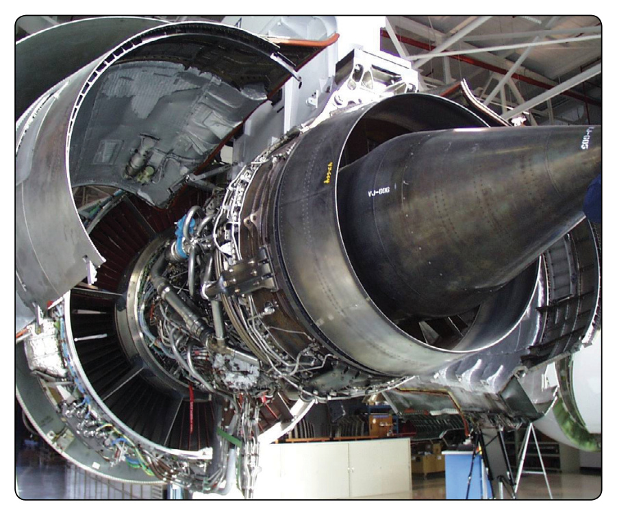
- A. 정비사 판단으로 순서를 정하면 된다The mechanic may determine the sequence at will
- B. 모든 엔진에 적용되는 단일 표준 절차가 있다A single standard procedure applies to all engines
- C. 항공기·엔진마다 크게 다르며 해당 기종 교범을 따른다They vary widely by aircraft and engine; follow that model's manual
기본 흐름: 기록 확인 → 안전조치(배터리·연료 차단) → 외부장치 분리 → 배관·배선 분리 → 마운트 분리 → 호이스팅.
⚠️ 항상 해당 정비교범(AMM/T.O.)의 절차·토크값·순서를 준수한다.
분리한 배관·배선은 캡·태그(Cap & tag)로 오염방지·식별한다.
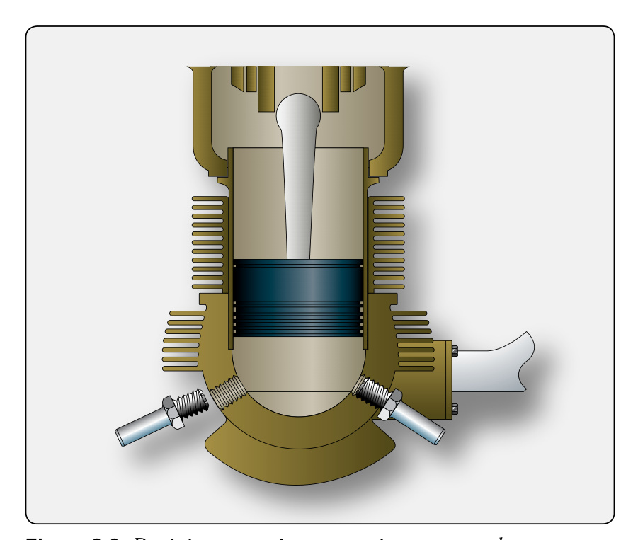
- A. 재장착 시 오연결을 방지하기 위해prevent incorrect reconnection during installation
- B. 부품 재고를 관리하기 위해maintain parts inventory
- C. 작업 시간을 기록하기 위해record labor time
신속엔진교환조립체 (QECA)
Quick Engine Change Assembly (QECA)엔진 탈착이 결정되면 교체 엔진 준비를 고려해야 한다. 가장 효율적이고 신속한 엔진 교체가 필요한 상업 운영자는 보통 신속엔진교환조립체(QECA, Quick Engine Change Assembly)를 사용한다. QECA는 엔진 파워 패키지(engine power package)라고도 하며, 동력장치와 필요한 보기류(accessory)를 미리 장착해 둔 조립체다.Once removal is decided, the replacement engine must be prepared. Commercial operators needing the most efficient, expeditious replacement usually use a Quick Engine Change Assembly (QECA), also called the engine power package — essentially a powerplant with the necessary accessories already installed.
QECA를 쓰면 현장에서 보기류를 일일이 장착할 필요 없이, 미리 준비된 패키지를 통째로 교체해 항공기 정지 시간(downtime)을 크게 줄인다. 왕복엔진 항공기를 운영하는 다른 운영자는 수리소에서 다른 교체 방식을 쓰기도 한다.A QECA lets operators swap a pre-assembled package as a unit instead of installing accessories one by one in the field, greatly reducing aircraft downtime. Other operators of reciprocating-engine aircraft sometimes use different replacement methods at their repair facilities.
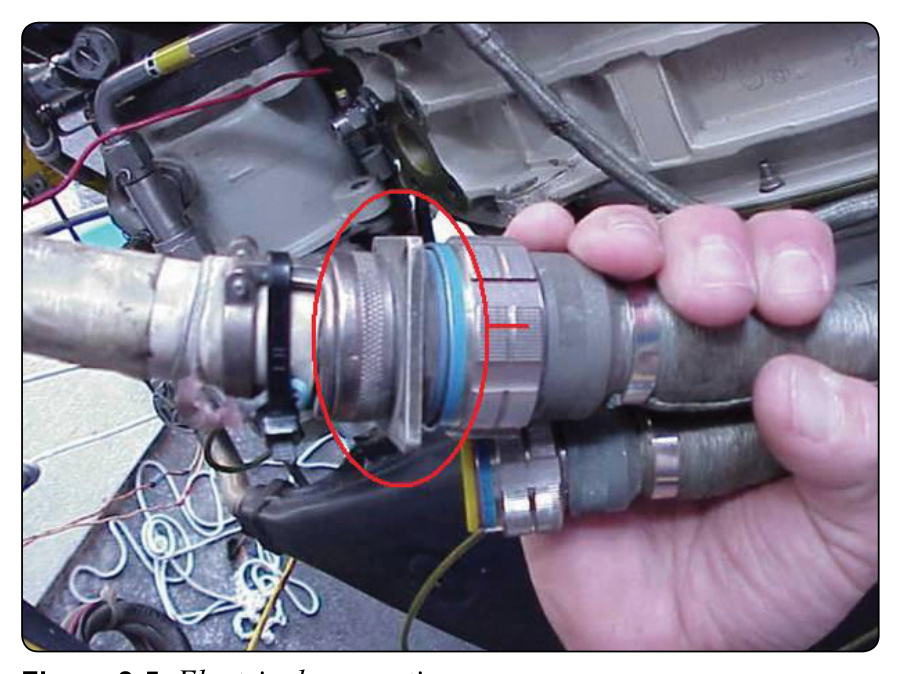
- A. 엔진 출력을 높이는 것increase engine power output
- B. 항공기 운항 중단 시간을 줄이는 것reduce aircraft downtime
- C. 연료 소비를 줄이는 것reduce fuel consumption
엔진 외부장치(QECA 액세서리): 발전기, 펌프, 마그네토, 스타터, 액세서리 등.
탈착 시 외부장치를 점검·교체하거나 신규 엔진으로 이설(Transfer)한다.
QECA(Quick Engine Change Assembly)는 액세서리를 미리 장착해 교환시간을 단축한다.
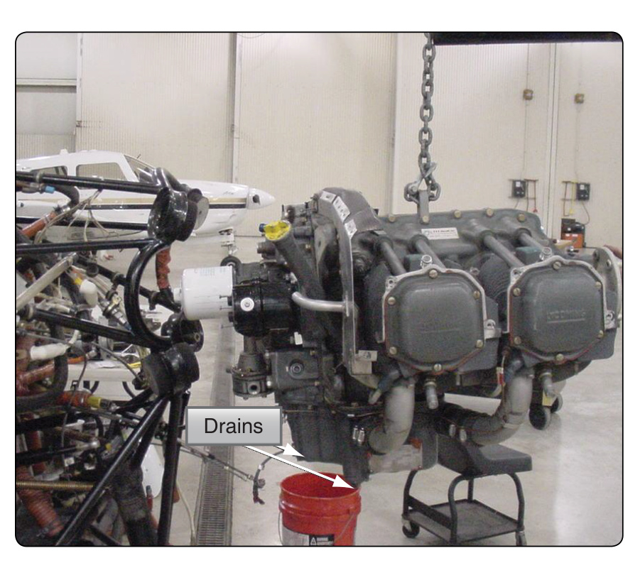
- A. 규정이 매 비행마다 요구하기 때문Regulations require it before every flight
- B. 엔진 무게를 측정하기 위해To weigh the engine
- C. 그 부위에 완전히 접근할 수 있는 유일한 기회이기 때문It is the only time the area is fully accessible
연료·오일·유압유 배출(Drain), 카울링(Cowling) 제거.
전기배선·연료/오일 라인·컨트롤 케이블·계기 라인을 순서대로 분리.
분리 부위마다 식별 태그를 달아 재조립 오류를 예방한다.
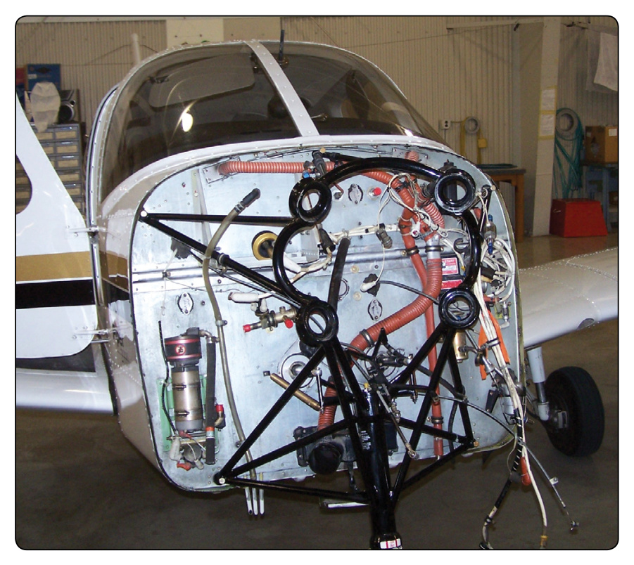
- A. 꼬리를 적절한 스탠드로 지지한다support the tail with a suitable stand
- B. 타이어 공기압을 낮춘다reduce the tire pressure
- C. 연료 탱크를 완전히 비운다completely drain the fuel tanks
- A. 전기 계통을 시험하기 위해the electrical system must be tested
- B. 유체가 새어 나와 화재 위험을 만들기 때문fluids can leak from the engine and create a fire hazard
- C. 소음을 줄이기 위해it reduces noise
호이스트(Hoist)에 엔진을 안전하게 연결 — 인양점(Lifting eye)·슬링(Sling) 규정 준수.
장력을 살짝 건 뒤 마운트 볼트를 푼다.
⚠️ 호이스팅은 균형·하중 관리가 생명 — 급격한 움직임 금지.
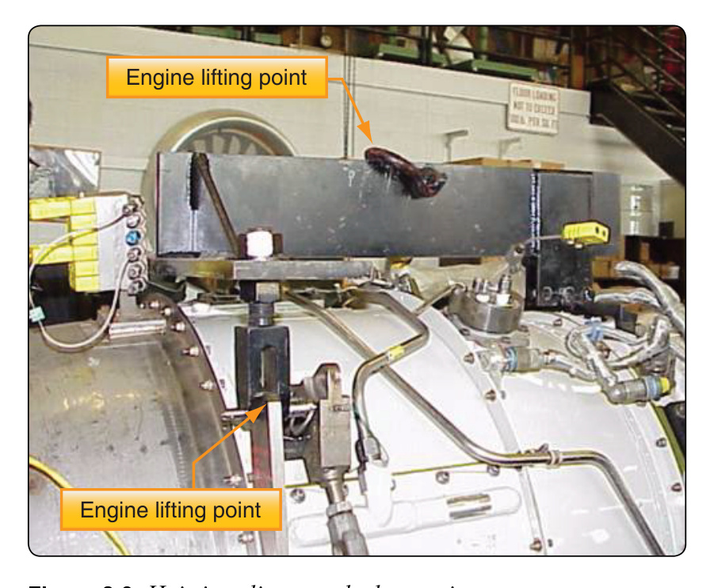
- A. 연료를 배출하는 것drain the fuel
- B. 마그네토 타이밍을 맞추는 것time the magnetos
- C. 프로펠러를 안전하게 돌리는 것turn the propeller safely and easily
- A. 프로펠러 슬링을 건 호이스트와 보조자a hoist with a propeller sling and assistance
- B. 프로펠러를 페더 위치로 놓는 것the propeller be placed in the feathered position
- C. 정비사 한 명이면 충분하다one mechanic working alone
엔진을 천천히 들어 마운트에 정렬, 마운트 볼트를 규정 토크로 체결.
장착 후 배관·배선·케이블을 역순으로 재연결.
재연결 후 누설·간섭(Clearance)·라우팅을 꼼꼼히 확인한다.
- A. 슬링은 임의 지점에 걸어도 된다The sling may be attached at any convenient point
- B. 엔진 아래에 사람이 있어서는 안 된다No one may be positioned under the engine
- C. 엔진을 최대한 빠르게 들어 올린다The engine should be lifted as quickly as possible
엔진 마운트(Mount)는 엔진을 기체에 고정하고 진동·하중을 전달한다.
구성: 마운트 구조물(Mount structure), 방진고무(Vibration isolator/Dynafocal mount).
마운트 균열·부식·고무 노화를 정기 점검한다.
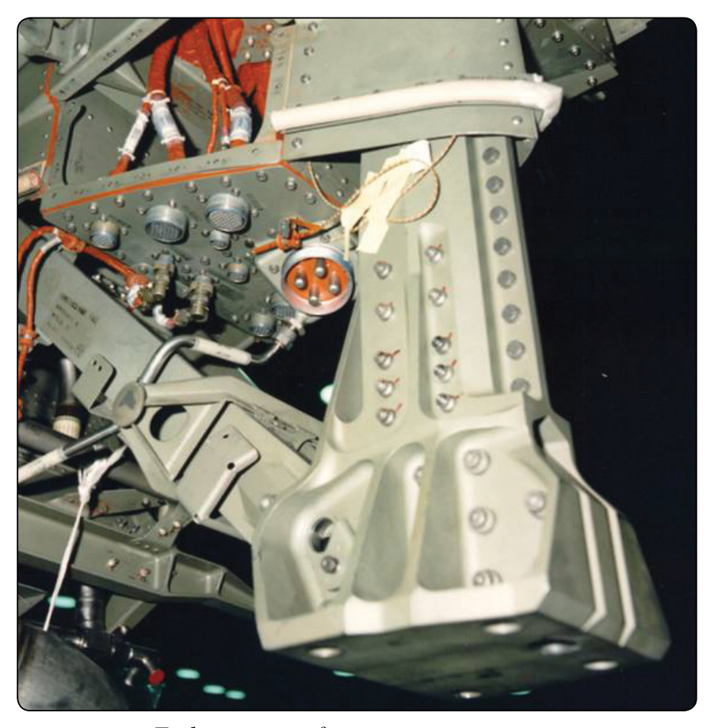
- A. 도장 색상과 광택paint color and gloss
- B. 엔진 일련번호the engine serial number
- C. 굽음, 균열, 늘어난 볼트 구멍bends, cracks, and elongated bolt holes
- A. 고무 마운트가 전기적으로도 절연하기 때문the rubber mounts also insulate electrically
- B. 마운트 강도를 보강하기 위해they reinforce the mount structure
- C. 진동을 더 줄이기 위해they further reduce vibration
장착 후 시운전(Runup) 전 점검: 오일량, 연료공급, 컨트롤 작동, 누설.
프로펠러 체크(Propeller Check): 거버너·피치 작동 확인.
시운전 후 재토크·재점검·누설 재확인(Checks after runup).
- A. 오일 압력 게이지를 교정하기 위해calibrate the oil pressure gauge
- B. 엔진이 회전하기 전에 오일이 도달하게 하기 위해ensure oil is at the engine before it turns
- C. 오일 온도를 높이기 위해raise the oil temperature
리깅(Rigging): 스로틀·믹스처·프로펠러 컨트롤의 행정(Travel)·동기화 조정.
컨트롤이 전 범위에서 부드럽게 작동하고 한계에서 정확히 멈추는지 확인.
조정 후 안전결선(Safety wire)·잠금 처리.
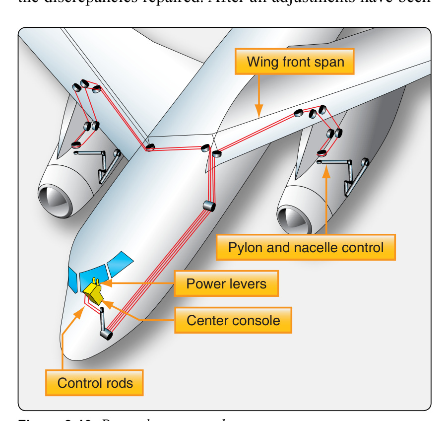
- A. 레버 조작을 무겁게 하기 위해make lever movement heavier
- B. 진동을 흡수하기 위해absorb vibration
- C. 케이블이 늘어나도 전 범위에 도달하도록 보장ensure full travel is reached even as cables stretch
터보프롭·헬기엔진도 기본 원리는 같으나 감속기어·로터계통 연결이 추가된다.
QECA 방식으로 액세서리를 모듈화해 신속 교환.
헬기는 트랜스미션·로터 인터페이스 정렬이 중요하다.
- A. 단일 TBO 도달보다 성능 변동·한계 초과·수명한계품이 주 사유Performance shifts, exceedances, and life-limited parts, rather than a single TBO
- B. 항상 정해진 시간 단위로만 장탈한다They are removed strictly on a fixed hourly interval
- C. 장탈 사유가 존재하지 않는다There are no defined removal criteria
오토페더·NTS 계통
Autofeather & NTS System오토페더 계통(autofeather system)은 보통 이륙·접근·착륙 중에만 사용하며, 한쪽 엔진의 출력이 상실되면 프로펠러를 자동으로 페더링한다. 두 개의 토크 스위치가 낮은 토크를 감지하면 솔레노이드 밸브가 프로펠러 실린더의 오일압력을 빼내 페더링시킨다. test-off-arm 스위치로 무장(arm)하며, 파워레버가 이륙 위치 근처일 때만 작동한다.An autofeather system is normally used only during takeoff, approach, and landing; it automatically feathers the propeller if power is lost from either engine. When two torque switches sense low torque, a solenoid valve dumps oil pressure from the propeller cylinder to feather it. A test-off-arm switch arms the system, which functions only when the power lever is near the takeoff position.
NTS(부(負)토크 감지, Negative Torque Sensing) 장치는 프로펠러가 엔진을 거꾸로 구동하는 부토크가 미리 정해진 값에 도달하면 기계적으로 NTS 플런저를 움직여 페더 밸브를 시프트, 블레이드를 페더 쪽으로 보낸다. 블레이드 각이 커지면 부토크가 줄어 NTS 신호가 사라지고, 다시 초과하면 재작동한다. 결과적으로 RPM이 약간 아래에서 사이클링한다.The NTS (Negative Torque Sensing) device mechanically shifts the feather valve when negative torque (the propeller driving the engine) reaches a preset value, sending blades toward feather. As blade angle increases, negative torque drops and the NTS signal is removed; if exceeded again, it re-actuates. The net effect is RPM cycling slightly below the set value.
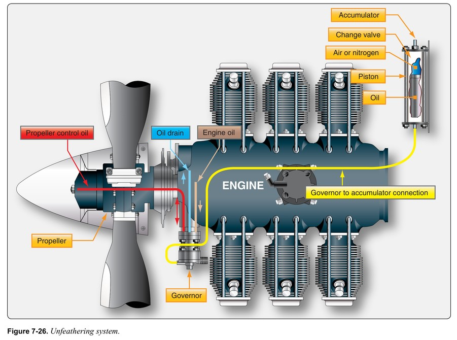
- A. 연료 소비를 줄이기 위해reduce fuel consumption
- B. 정상 저출력 운전 중 의도치 않은 페더링을 막기 위해prevent unintended feathering during normal low-power operation
- C. 페더링 속도를 높이기 위해feather the propeller more quickly
장기 미사용 엔진은 내부 부식 방지를 위해 보존(Preservation) 처리한다.
방청유(Preservative oil) 분사, 건조제(Desiccant/실리카겔) 투입 — 색 변화로 습도 감시.
복귀 시 디프리저베이션(Depreservation)으로 방청제를 제거한다.
📌 엔진 보관과 보존 — 보존 방법은 엔진을 쉬게 할 기간에 따라 달라집니다. 단기(대략 30일 이내)는 정기적으로 운전하거나 돌려 주는 정도, 장기·무기한 보관은 보존유를 실린더와 오일 계통에 넣고, 점화 플러그 자리에 건조제 플러그(염화코발트: 건조하면 청색, 습하면 분홍색)를 꽂으며, 흡·배기구를 막고 건조제 봉지를 넣은 뒤 밀봉 용기나 비닐 덮개에 넣습니다. 용기에는 습도 지시기를 달아 정해진 주기로 확인하고, 색이 바뀌면 건조제를 교환합니다. 터빈 엔진은 연료 계통에 보존유를 채우고 개구부를 막는 등 제작사 보존 절차를 따릅니다. 보존 내용과 날짜를 태그와 기록에 남기고, 다시 쓸 때는 매뉴얼의 보존 해제 절차를 따릅니다.📌 Engine storage and preservation — The preservation method depends on how long the engine will be idle. Short-term (roughly 30 days or less) may need only periodic running or turning, while long-term or indefinite storage involves putting preservative oil into the cylinders and oil system, inserting desiccant plugs (cobalt chloride: blue when dry, pink when moist) in the spark plug holes, sealing the intake and exhaust openings with desiccant bags inside, and enclosing the engine in a sealed container or plastic envelope. Fit the container with a humidity indicator, check it at the specified interval, and replace the desiccant when the color changes. Turbine engines follow the manufacturer's preservation procedure, such as filling the fuel system with preservative oil and sealing openings. Record what was done and when on a tag and in the records, and follow the manual's depreservation procedure when returning the engine to service.
![preservation]()
- A. 오일을 모두 배출하고 방치한다drained of all oil and left as is
- B. 주 1회 시동만 걸어 둔다started once a week only
- C. 보존 처리하여 부식으로부터 보호한다preserved and protected against corrosion
- A. 정상적으로 건조하다It is properly dry
- B. 습기가 많다 — 건조제 교환Moisture is high — replace the desiccant
- C. 보존유가 부족하다Preservative oil is low
엔진 수송용기(Shipping container)는 충격·습기로부터 엔진을 보호한다.
습도지시계(Humidity indicator)로 내부 상태를 점검.
보관 엔진은 주기적으로 건조제·방청 상태를 점검·갱신한다.
- A. 컨테이너가 보존의 일부이며 열면 습한 공기에 노출되기 때문the container is part of the preservation; opening it exposes the engine to humid air
- B. 컨테이너에 봉인 스티커가 있기 때문of the seal sticker on the container
- C. 무게를 유지하기 위해it maintains the shipping weight
엔진 탈·장착 실무 상세
Removal & Installation Detail📗 ASA Powerplant 보강탈착 준비 — 삼륜식 소형기는 엔진 제거 시 극도로 테일이 무거워지므로, 반드시 꼬리를 적절한 스탠드로 지지합니다. 배터리를 분리하고 연료 선택밸브를 OFF. 카울링을 벗겨 손상 없는 랙에 보관.Prep: small tricycle-gear aircraft become extremely tail-heavy without the engine, so support the tail on a stand. Disconnect the battery, set the fuel selector OFF, and store the cowling safely.
배관 처리 — 연료 스트레이너·오일 섬프·오일 쿨러를 배유하고, 분리한 연료·오일 라인은 전용 플러그·캡으로 막습니다. 마스킹 테이프나 덕트 테이프로 감지 말 것 — 접착제 잔류물이 계통을 오염시킵니다.Drain the strainer, sump, and oil cooler; cap open fuel/oil lines with proper plugs. Do NOT wrap line ends with masking or duct tape—adhesive residue contaminates the system.
프로펠러·부속 분리 — 정속 프로펠러 허브는 비닐로 덮어 이물질 차단, 프로펠러 샤프트 끝도 덮음. 조종실 연결(스로틀·믹스처·계기라인·전기배선)을 모두 분리 후, 크랭크케이스 리프팅 아이(lifting eye)에 호이스트를 걸어 마운트 볼트를 풀고 들어냅니다.Cover constant-speed prop hubs and the prop shaft against debris. After disconnecting all cockpit connections (throttle, mixture, instrument lines, wiring), attach the hoist to the crankcase lifting eye and remove the mount bolts.
장착 후 예비오일(preoil) — 엔진 최대 마모는 최초 시동 시 베어링에 오일이 닿기 전 발생. 반드시 압력오일러로 오일을 강제 순환시켜 오일압 게이지 연결부로 흘러나올 때까지 예비오일링. 압력오일러가 없으면 실린더당 플러그 1개를 빼고 오일압 표시될 때까지 스타터로 크랭킹.Post-install preoil: the greatest wear occurs at first start before oil reaches the bearings. Force oil through with a pressure oiler until it flows from the oil-pressure gauge port, or crank with one plug removed per cylinder.
엔진 보존(preservation) — 장기 보관 시 습기로 실린더벽·부품이 부식됩니다. 방청유 분무, 흡습제(desiccant) 플러그 장착, 흡·배기구 밀봉으로 보존. 나이트라이드 실린더는 특히 녹에 취약해 보존이 중요합니다.Preservation: moisture corrodes cylinder walls during long storage. Spray preservative oil, install desiccant plugs, and seal intake/exhaust. Nitrided cylinders are especially rust-prone.
📄 원문: ASA AMT Powerplant, Ch.9 Removal & Installation, p.338–340Source: ASA AMT Powerplant, pp.338–340
- A. 도장을 다시 하기 위해allow repainting
- B. 손상되지 않게 보관하기 위해keep it from being damaged
- C. 무게를 줄이기 위해reduce weight
엔진 탈·장착과 보존 📙 Jeppesen 참고
Engine Removal, Installation & Preservation엔진 탈장착은 제작사 절차를 따르며, 많은 항공기가 방화벽 앞을 통째로 교체하는 QECA(Quick Engine Change Assembly)를 씁니다. 무게중심을 맞춘 슬링·호이스트로 들고, 배관·배선·조종연결부를 태그로 식별해 오연결을 막습니다. 마운트는 방진 고무마운트와 접지(본딩) 스트랩을 함께 쓰며, 장착 후 리깅·누설·작동점검을 합니다.Engine removal and installation follow the maker's procedures, and many aircraft use a Quick Engine Change Assembly (QECA) replacing everything forward of the firewall. Lift with a balanced sling and hoist, and tag lines, wiring, and control connections to prevent misconnection. Mounts combine vibration-isolating rubber mounts with a bonding strap, and after installation come rigging, leak, and operational checks.
보관·비운용 엔진은 부식을 막기 위해 보존(preservation)합니다 — 실린더에 방청유를 분무·주입하고, 흡·배기구를 막고 건조제(실리카겔)와 습도지시계를 넣어 밀봉합니다. 보존 상태·기간을 기록하고, 복원(depreservation) 시 방청유 제거·오일 교환 후 시운전합니다.Stored or inactive engines are preserved against corrosion — spray/introduce preservative oil into cylinders, plug intake and exhaust, and seal with desiccant (silica gel) and a humidity indicator. Record the preservation status and interval, and on depreservation remove preservative, change oil, and run up.
엔진 장탈 사유와 서비스 리밋(TBO) 심화 📙 Jeppesen 정독
Reasons for Engine Removal and Engine Service Limits엔진 장탈은 인명 부상이나 항공기 손상을 막기 위해 순서대로 수행해야 하는 중요한 작업들의 연속입니다. 엔진을 떼어내는 데 필요한 단계는 기체와 엔진의 조합마다 다르지만 모든 경우에 적용되는 일반 지침이 있습니다. 다만 이 일반 지침이 제작사 지침을 대신할 수는 없습니다.Engine removal involves a series of critical tasks that should be accomplished in an orderly manner to prevent personal injury or aircraft damage. The steps necessary to remove an engine vary for every combination of airframe and engine, but some general guidelines apply for all. These guidelines are not a substitute for the manufacturer's instructions.
엔진을 항공기에서 떼어내야 하는 상황은 여러 가지입니다. 예를 들어 엔진이 제작사가 공표한 오버홀 간 시간(TBO)에 도달했거나 성능이 현저히 저하된 경우입니다. 또한 엔진이 급정지(sudden stoppage) 사건을 겪었거나 오일에서 과도한 양의 금속 입자가 발견되면 장탈이 필요할 가능성이 높습니다. 이 밖에도 특정 정비 작업이나 수리를 위해 엔진 장탈이 필요할 수 있습니다. 다만 엔진을 떼어내기 전에는 항상 해당 제작사 지침을 확인해 장탈이 정말 필요한지 판단해야 합니다.Several circumstances call for an engine to be removed. For example, the engine has reached the manufacturer's published time between overhaul (TBO) or performance has degraded significantly. Furthermore, if the engine experiences a sudden stoppage event or an excessive quantity of metal particles is found in the oil, removal is probably in order. Certain maintenance tasks or repairs can also require engine removal. However, before removing an engine, always consult the applicable manufacturer's instructions to determine if removal is necessary.
환경적·운용적·설계적 요인이 엔진 수명에 영향을 줍니다. 여기에 더해 예방정비의 빈도와 종류도 엔진의 유효 수명에 직접적인 영향을 미칩니다. 그 결과 확정적인 오버홀·교환 시기를 정하는 것은 어렵습니다. 그러나 제작사는 여러 엔진의 사용 수명을 추적해 권고 TBO 일정을 개발해 왔습니다.Environmental, operational, and design factors affect engine life. In addition, the frequency and type of preventive maintenance has a direct bearing on the useful life of an engine. As a result, establishing definitive engine overhaul and replacement times is difficult. However, by tracking the service life of several different engines, manufacturers have developed schedules for recommended TBOs.
14 CFR Part 91에 따라 운항하는 항공기 소유자는 제작사의 권고 TBO를 준수할 의무가 없습니다. 그러나 권고 시간을 초과하려면 FAA는 대체 검사 프로그램을 승인받아 그에 따를 것을 요구합니다. 또한 항공기가 14 CFR 135에 따라 에어택시로 유상 운항되는 경우, 운영자는 제작사가 정한 TBO와 최대 사용시간을 반드시 준수해야 합니다.Aircraft owners operating under 14 CFR Part 91 are not required to comply with a manufacturer's recommended TBO. However, to exceed the recommended times, the FAA requires that an alternate inspection program be approved and complied with. In addition, if an aircraft is operated for hire under 14 CFR 135 as an air taxi, the operator must comply with the TBO and the maximum time in service established by the manufacturer.
제작사가 신품 엔진을 인도할 때 엔진 운전시간의 영구 기록이 동력장치 로그북에 개설됩니다. 정비가 수행될 때마다 엔진이 신품 이후 누적한 총 시간(TT, total time)을 참조하는 로그북 기입이 이루어져야 합니다. 엔진이 오버홀된 뒤에도 이 기록은 중단 없이 계속되어야 합니다. 그 이후로는 엔진 운전시간을 대수리(오버홀) 이후 시간(SMOH, since major overhaul)으로도 참조합니다. 엔진 검사와 정비 요구사항은 신품 이후 또는 대수리 이후 시간을 기준으로 정해집니다.When a manufacturer delivers a new engine, a permanent record of the engine's operating time is established in the powerplant logbook. Any time maintenance is performed, a logbook entry should be made referencing the total time (TT) the engine has accumulated since it was new. After an engine is overhauled, this record should be continued without interruption. Thereafter, engine operation time should also be referenced since major overhaul (SMOH). Engine inspection and service requirements are based on time since new or major overhaul.
때로는 엔진이 TBO에 도달하기 전에 심한 성능 저하 징후가 나타나 엔진 장탈로 이어질 수 있습니다. 엔진 부품이 마모되면 오일 소모 증가, 엔진 운전 온도 상승, 전반적인 출력 손실 같은 증상이 나타나 조기 오버홀이 필요할 수 있음을 알려 줍니다. 이러한 상태를 시간에 따라 주의 깊게 감시하면 엔진 장탈을 결정하는 데 중요한 정보를 얻을 수 있습니다. 여러 환경적·운용적 이유가 정상적인 엔진 수명을 단축시킵니다. 예를 들어 최대 출력 설정으로 장시간 운전, 극저온에서의 잦은 시동, 부적절한 예방정비는 모두 엔진의 유효 수명을 줄입니다.Sometimes before an engine reaches TBO, signs of severe performance deterioration can lead to engine removal. As engine components wear, symptoms such as increased oil consumption, higher engine operating temperatures, or a general loss of power can indicate that an early overhaul might be necessary. Careful monitoring of these conditions over time provides important information for deciding to remove an engine. Several environmental or operational reasons can shorten normal engine life; for example, operating at maximum power settings for prolonged periods, frequent starts in extremely cold temperatures, and inadequate preventative maintenance all shorten the useful life of an engine.

급감속과 급정지 후속 검사 심화 📙 Jeppesen 정독
Sudden Speed Reduction and Sudden Stoppage급감속(sudden speed reduction)은 엔진이 회전 중일 때 하나 이상의 프로펠러 블레이드가 활주로 등화, 공구함, 격납고, 다른 항공기 같은 물체와 충돌할 때 발생합니다. 이 경우 엔진 속도가 급격히 떨어졌다가 장애물이 제거되면 통상 이전 값으로 돌아옵니다. 이런 일이 생기면 추가 손상을 막기 위해 즉시 엔진을 정지시켜야 합니다.A sudden speed reduction occurs when the engine is turning and one or more propeller blades strike an object such as a runway light, tool box, hangar, or other aircraft. If this occurs, engine speed drops rapidly until the obstruction is cleared, and speed typically returns to its previous value. When this occurs, the engine should be shut down immediately to prevent further damage.
급감속을 겪은 엔진을 검사해 보면 손상 정도가 다양합니다. 예를 들어 비교적 낮은 속도에서 감속이 일어나면 내부 손상은 대체로 경미합니다. 저속에서는 엔진 출력도 낮고 프로펠러가 충격의 대부분을 흡수하기 때문입니다. 그러나 높은 엔진 속도에서 급감속이 일어나면 충격력의 더 많은 부분이 엔진으로 전달되어 심각한 내부 손상 가능성이 커집니다.Inspections of engines that have experienced a sudden speed reduction reveal varying amounts of damage. When the speed reduction occurs at a relatively low speed, the internal damage is typically minor: at low speed, engine power output is also low and the propeller absorbs most of the shock. However, when a sudden speed reduction occurs at high engine speed, more of the impact force is transferred to the engine with a greater likelihood for severe internal damage.
엔진이 급감속을 겪으면 제작사의 검사 절차를 따릅니다. 최소한 프로펠러, 엔진 마운트, 크랭크케이스, 해당되면 노즈 섹션을 철저히 검사해야 합니다. 또한 엔진 오일 스크린이나 필터를 제거해 금속 입자의 존재를 검사합니다. 그다음 오일을 깨끗한 용기에 배출하되 깨끗한 천(또는 필터)으로 걸러 내고, 천과 오일에서 금속 입자를 확인합니다. 금속 입자가 있으면 내부 엔진 부품의 고장을 시사하며 엔진 장탈과 오버홀이 필요합니다. 다만 금속 입자가 미세한 줄밥 형태로 나타나면 계속 검사해 엔진을 사용에 복귀시킬 수 있는지 판단합니다.When an engine experiences a sudden reduction in speed, comply with the manufacturer's inspection procedures. At a minimum, thoroughly inspect the propeller, engine mounts, crankcase, and, if applicable, the nose section. In addition, remove the engine oil screens or filters to inspect for the presence of metal particles. Then drain the oil into a clean container, straining it through a clean cloth or filter, and check the cloth and oil for metal particles. The presence of metal particles may indicate the failure of internal engine components and necessitates engine removal and overhaul. However, if metal particles are found with the appearance of fine filings, continue inspection to determine whether the engine can be returned to service.
프로펠러를 제거해 크랭크샤프트의 부정렬 여부를 확인합니다. 프로펠러 감속기어 계통을 쓰는 엔진에서는 프로펠러 구동축을 제거합니다. 다이얼 인디케이터를 사용해 크랭크샤프트를 회전시키며 부정렬을 점검합니다. 플랜지형 프로펠러 축을 가진 엔진은 플랜지 바깥 가장자리에서 점검해야 하고, 스플라인형 프로펠러 축은 전방과 후방 콘 시트 양쪽에서 점검해야 합니다. 축 부정렬의 양을 런아웃(runout)이라고 합니다. 런아웃 허용치는 제작사의 정비 또는 오버홀 교범에 공표되어 있습니다. 런아웃이 한계를 초과하면 크랭크샤프트를 떼어내고 교환합니다. 그러나 크랭크샤프트 런아웃이 제작사가 정한 한계 내에 있으면 사용 가능한 프로펠러를 장착하고 프로펠러 트랙을 점검할 수 있습니다.Remove the propeller to check for misalignment of the crankshaft. On engines that use a propeller gear reduction system, remove the propeller drive shaft. With a dial indicator, rotate the crankshaft and check for misalignment. Engines with flange-type propeller shafts must be checked at the outside edge of the flange; spline-type propeller shafts should be checked at both the front and rear cone seats. The amount of shaft misalignment is referred to as its runout. Runout tolerances are published in the manufacturer's maintenance or overhaul manual. If the runout exceeds limits, remove and replace the crankshaft. However, if the crankshaft runout is within the manufacturer's established limits, you can install a serviceable propeller and check propeller track.
프로펠러 트래킹 측정값이 허용 범위이면 오일 필터나 스크린을 재장착하고 엔진에 오일을 보급합니다. 엔진을 시동해 원활하게 작동하며 정상 출력이 나오는지 확인합니다. 지상 점검에서 작동이 정상이면 엔진을 정지하고 오일계통의 금속 입자 검사를 반복합니다. 금속이 나오면 내부 엔진 손상을 뜻하며 추가 검사가 필요합니다. 그러나 엔진 오일에 무거운 금속 입자가 없으면 비행시험을 계획합니다. 비행시험 중 엔진 작동이 정상 범위 내이면 오일계통의 금속을 다시 확인합니다. 금속이 발견되지 않으면 엔진을 계속 사용하되, 10시간 운전 후와 다시 20시간 후에 오일 스크린의 금속 유무를 재점검합니다. 20시간 운전 후에도 내부 고장의 징후가 없으면 추가적인 특별검사는 필요하지 않습니다.If propeller tracking measurements are acceptable, reinstall the oil filter or screen and service the engine with oil. Start the engine to determine whether it operates smoothly with normal power output. During the ground check, if operation is normal, shut the engine down and repeat the inspection for metal particles in the oil system. The presence of metal indicates internal engine damage and requires further inspection. However, if there are no heavy metal particles in the engine oil, the engine should be scheduled for a flight test. If engine operation is within normal parameters during the flight test, look again for metal in the oil system. If no metal is found, continue the engine in service, but recheck the oil screens for the presence of metal after 10 hours of operation and again after 20 hours. If you find no indication of internal failure after 20 hours, no further special inspections are necessary.
급정지(sudden stoppage)는 엔진이 빠르고 완전히 멈추는 사건으로, 통상 프로펠러 1회전 미만에서 일어납니다. 원인은 엔진 고착이나 프로펠러 블레이드의 물체 충돌입니다. 엔진이 갑작스럽고 급격하게 멈추면 운동 부품의 관성이 파괴적으로 높은 토크를 만들어 내부 기어 손상, 크랭크샤프트의 휨이나 파손, 크랭크샤프트 베어링 손상을 일으킬 수 있습니다. 급정지가 발생하면 제작사 지침은 대개 엔진의 완전한 분해(teardown)와 검사를 요구합니다.A sudden stoppage is an event in which the engine stops quickly and completely, typically in less than one propeller revolution. The causes are engine seizing or a propeller blade striking an object. Whenever an engine comes to a sudden and abrupt stop, the inertia of the moving parts creates destructively high torque forces that can result in internal gear damage, a bent or broken crankshaft, or damaged crankshaft bearings. When sudden stoppage occurs, manufacturer's instructions usually mandate a complete engine teardown and inspection.
- A. 다음 정기검사까지 기록만 남긴다record it and wait until the next scheduled inspection
- B. 회전수가 회복됐으므로 계속 운전한다continue operating since the rpm recovered
- C. 즉시 엔진을 정지시키고 규정 검사를 수행한다shut the engine down immediately and perform the prescribed inspection
오일 내 금속 입자와 엔진 상태 감시 심화 📙 Jeppesen 정독
Metal Particles in Oil and Engine Condition Monitoring엔진 오일 필터나 스크린, 또는 오일 자체에 과도한 금속 입자가 있으면 내부 엔진 부품의 고장을 시사할 수 있습니다. 어떤 경우든 엔진 오일에서 예상치 못한 입자가 나온 원인은 항공기를 비행에 투입하기 전에 규명하고 조치해야 합니다. 다만 항공기 오일계통의 구조상, 이전의 엔진이나 부품 고장에서 남은 잔류 금속 입자가 오일 슬러지에 있을 수 있다는 점도 유의해야 합니다.The presence of excessive metal particles in an engine oil filter or screen or in the oil itself can indicate failure of an internal engine component. In any case, the source of unexpected particles in engine oil must be identified and addressed before the aircraft is released for flight. Be aware that due to the construction of aircraft oil systems, residual metal particles from a previous engine or component failure might be present in the oil sludge.
오일에서 나온 입자의 재질을 식별합니다. 입자가 금속인지 카본인지 판단하는 한 가지 방법은 재료를 평평한 금속 물체 위에 놓고 해머로 두드려 보는 것입니다(반드시 보안경을 착용합니다). 입자가 카본이면 부서지지만, 금속이면 형태를 유지하거나 모양이 변합니다. 카본 입자는 엔진 내부에서 쌓였다가 떨어져 나와 금속으로 오인될 수 있습니다. 자석으로 금속 입자를 확인해 철을 함유한 철계인지 비철계인지 판단합니다. 철계 입자는 통상 피스톤 링 마모에서 생기고, 비철계 입자는 주 베어링이나 커넥팅 로드 베어링 같은 저널 베어링에서 생기는 것이 일반적입니다.Identify the material particles removed from oil. One way to determine whether a particle is metal or carbon is to place the material on a flat metal object and strike it with a hammer (be sure to wear protective eyewear). If the particle is carbon it will disintegrate; if it is metal it will remain intact or change shape. Carbon particles can build up and break loose from inside the engine and be mistaken for metal. Check metal particles with a magnet to determine whether they are ferrous (containing iron) or nonferrous. Ferrous particles are typically produced by piston ring wear, whereas nonferrous particles are typically produced by worn journal bearings, such as main and connecting rod bearings.
육안 오일 검사는 분광 오일분석 프로그램(spectrometric oil analysis program)으로 보완할 수 있습니다. 엔진 오일을 배출할 때 오일 시료를 채취해 실험실 분석을 의뢰하는 방식입니다. 실험실은 발견된 이물질의 종류와 양, 그리고 가능한 발생원의 식별 결과를 보고합니다. 오일분석 프로그램은 문제가 심각해지기 전에 검출해 파국적인 엔진 고장을 예방할 수 있습니다.You can supplement the visual oil inspection with a spectrometric oil analysis program, in which you collect an oil sample for laboratory analysis when you drain the engine oil. The laboratory reports the types and quantity of foreign particles found, along with an identification of possible sources. An oil analysis program can detect problems before they become serious and prevent catastrophic engine failure.
많은 운영자가 엔진 상태 감시(engine condition monitoring)를 사용해, 신품이나 갓 오버홀한 엔진과 같은 기준선 대비 자사 엔진의 성능을 추적합니다. 추세분석 기법과 결합하면 이 정보로 엔진(또는 부품)의 고장을 예측하고 필요한 예방정비나 시정정비를 식별할 수 있습니다. 정상적인 엔진은 시간이 지나면서 오일에 부유하는 금속량이 완만하게 증가하지만, 기준선이 확립된 뒤 금속량이 갑자기 증가하면 대개 내부 엔진 문제를 뜻합니다.Many operators use engine condition monitoring to track the performance of their engine against a baseline, such as that of a new or newly overhauled engine. Coupled with trend analysis techniques, this information can help predict engine or component failure and identify necessary preventative or corrective maintenance. Over time a normal engine experiences a gradual increase in the amount of metal suspended in its oil, but after a baseline is established, a sudden increase usually indicates an internal engine problem.
불안정한 엔진 작동이 일정 기간 지속되면 정밀 검사를 위해 엔진을 장탈할 수 있습니다. 과도한 엔진 진동, 역화, 애프터파이어, 비행 중 컷아웃, 출력 저하는 모두 잠재적으로 심각한 상태의 증상입니다. 이전의 고장탐구 시도가 성공하지 못했다면 장탈이 필요해질 수 있습니다. 간헐적인 고장은 전용 시험장비를 갖춘 테스트 스탠드에 엔진을 장착하면 재현하기가 더 쉬울 때가 있습니다.When unstable engine operation persists for a period of time, an engine might be removed for a thorough inspection. Excessive engine vibration, backfiring, afterfiring, cutting out in flight, and reduced power output are all symptoms of potentially serious conditions. Removal might become necessary if previous troubleshooting attempts have been unsuccessful. Duplicating an intermittent malfunction is sometimes easier when the engine is mounted on a test stand with specialized test equipment.
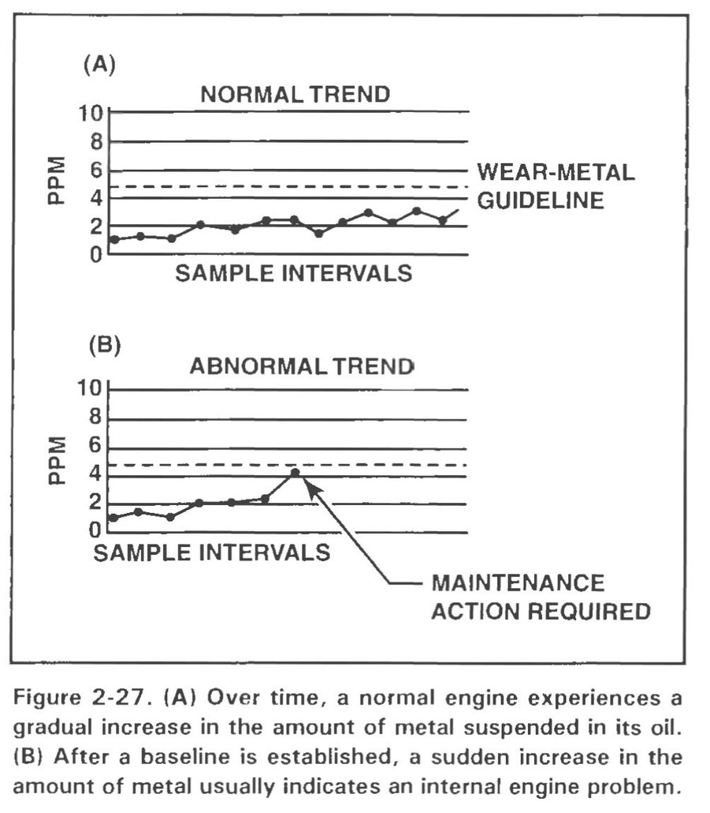
📌 오일 필터에서 나온 금속의 종류 판별 — 필터를 잘라 펼친 뒤 걸린 입자를 모아 먼저 자석으로 나눕니다. 자석에 붙는 철계(강철)는 크랭크축·캠축·기어·밸브 기구·피스톤 링·실린더 벽(강철 배럴)에서 옵니다. 자석에 붙지 않는 것 가운데 알루미늄(가볍고 은백색)은 피스톤·크랭크케이스·보기 하우징, 청동·황동(노란·구리색)은 부싱·베어링 케이지·오일 펌프 부품, 은은 일부 베어링 도금, 크롬(단단하고 밝은 조각)은 크롬 도금 실린더나 링, 주석·납은 베어링 재질에서 나옵니다. 입자의 양·크기·모양(가는 가루, 조각, 칩)을 기록하고, 제작사 허용 기준과 비교하며, 필요하면 실험실 분석으로 성분을 확인합니다. 갑자기 늘었다면 다음 운전 전에 원인을 찾습니다.📌 Identifying types of metal found in an oil filter — Cut open and spread the filter, collect the particles, and first separate them with a magnet. Ferrous (steel) particles that stick to the magnet come from the crankshaft, camshaft, gears, valve train, piston rings, and steel cylinder barrels. Of the non-magnetic particles, aluminum (light, silvery white) comes from pistons, crankcase, and accessory housings; bronze and brass (yellow or copper-colored) from bushings, bearing cages, and oil pump parts; silver from plating on some bearings; chrome (hard, bright flakes) from chrome-plated cylinders or rings; and tin or lead from bearing materials. Record the amount, size, and shape (fine powder, flakes, chips), compare with the manufacturer's acceptance criteria, and confirm composition by laboratory analysis if needed. If the amount has suddenly increased, find the cause before the next run.
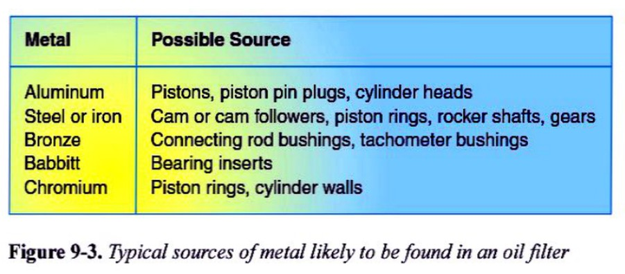
- A. 이전 고장에서 남은 잔류 입자일 수 있다they may be residual particles from an earlier failure
- B. 반드시 새로운 고장을 의미한다they always indicate a new failure
- C. 정상적인 현상이므로 무시한다they are normal and may be ignored
- A. 알루미늄 피스톤Aluminum pistons
- B. 청동 부싱Bronze bushings
- C. 크랭크축·캠축·기어 등 강철 부품Steel parts such as the crankshaft, camshaft or gears
장탈 준비: 안전 조치와 점화·연료·배터리·오일 심화 📙 Jeppesen 정독
Preparation for Removal: Safety, Ignition, Fuel, Battery, and Oil항공기에서 엔진을 떼어낼 때 엔진에서 유체가 새어 나와 화재 위험을 만들 수 있습니다. 따라서 엔진 장탈은 환기가 잘 되는 구역에서, 소화기를 가까이 두고 실시해야 합니다. 항공기를 제자리에 위치시킨 뒤 주 착륙장치 바퀴에 촉을 괴어 굴러가지 않게 합니다. 삼륜식(tricycle) 착륙장치 항공기라면 엔진을 떼어낼 때 기체가 뒤로 넘어가지 않도록 테일을 지지합니다. 또한 가스 충전식 착륙장치 완충 스트럿을 사용하는 항공기라면, 엔진 하중이 제거된 뒤 스트럿이 과도하게 늘어나지 않도록 압력을 빼야 할 수도 있습니다.When you remove an engine from an aircraft, fluids might leak from the engine, creating a fire hazard. Therefore, engine removal should take place in a well-ventilated area with a fire extinguisher nearby. After the aircraft is positioned in place, chock the main gear wheels to keep it from rolling. If the aircraft has tricycle landing gear, support the tail to prevent the aircraft from tipping back when you remove the engine. In addition, if the aircraft uses gas-charged landing gear shock struts, you might have to deflate them to prevent over-extension after the weight of the engine is removed.
엔진을 떼어내기 전에 마그네토 스위치가 OFF 위치에 있는지 확인합니다. 엔진 카울을 제거한 뒤에는 각 실린더에서 최소 하나의 스파크 플러그를 제거해야 합니다. 이렇게 하면 압축이 없어져, 프로펠러를 돌릴 때 엔진 킥백이나 우발적인 시동이 일어나지 않습니다.Before removing an engine, make sure that the magneto switch is in the OFF position. After you remove the engine cowl, remove at least one spark plug from each cylinder. Doing so prevents compression and eliminates the possibility of engine kickback or inadvertent startup when the propeller is turned.
연료 누출과 유출을 막기 위해 모든 연료 차단밸브가 닫혀 있는지 확인합니다. 연료 선택밸브는 수동식이거나 전기식입니다. 전기 솔레노이드식 차단밸브가 장착되어 있다면 밸브를 닫기 위해 배터리 전원을 인가해야 할 수도 있습니다. 그다음 전기 스파크 가능성을 줄이기 위해 배터리를 분리합니다. 항공기가 며칠 이상 운항하지 않을 예정이라면 배터리를 배터리 정비구역으로 가져가 청소, 서비스, 충전합니다.To help prevent fuel leaks and spills, make sure that all fuel shutoff valves are closed. Fuel selector valves are either manually or electrically operated. If an electric solenoid-operated shutoff valve is installed, you might need to apply battery power to close the valve. Disconnect the battery to reduce the possibility of electrical sparks. If the aircraft will be out of service for more than a few days, take the battery to the battery maintenance area for cleaning, servicing, and charging.
카울을 떼어낸 뒤에는 철저히 청소하고 상태를 검사합니다. 수리가 필요한 그을림, 균열, 늘어난 패스너 홀이 없는지 확인합니다. 카울링에 수리가 필요 없다면 안전한 곳으로 옮겨 둡니다.After you remove the cowl, clean it thoroughly and inspect its condition; look for burns, cracks, or elongated fastener holes that require repair. If the cowling needs no repair, move it to a safe place.
마그네토와 배터리를 무력화한 뒤 엔진 오일을 깨끗한 용기에 배출합니다. 흘러나오는 오일을 받도록 엔진 아래에 큰 금속 드립 트레이를 놓습니다. 드레인 플러그를 제거하거나 드레인 밸브를 엽니다. 여기에 더해 오일 쿨러, 리턴 라인, 필터에서도 오일을 반드시 배출합니다. 계통이 완전히 빌 때까지 모든 밸브와 드레인을 열어 둡니다. 그다음 드레인 플러그를 다시 장착하고 드레인 밸브를 닫은 뒤 드레인 지점 주변의 잔류 오일을 닦아 냅니다.After the magnetos and battery are disarmed, drain the engine oil into a clean container. Use a large metal drip tray under the engine to catch any spills. Remove the drain plug or open the drain valve. In addition, be sure to drain oil from the cooler, return line, and filter. Leave all valves and drains open until the system is completely empty. Reinstall drain plugs, close drain valves, and wipe residual oil from around the drain points.
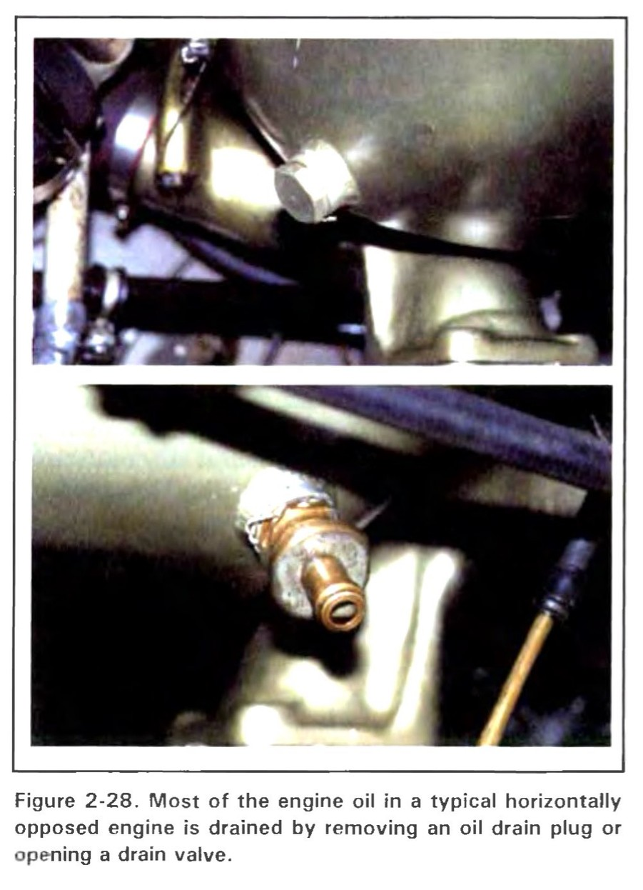
프로펠러·유체 라인·전기 배선 분리 심화 📙 Jeppesen 정독
Disconnecting the Propeller, Fluid Lines, and Electrical Wiring스파크 플러그를 제거한 뒤에는 프로펠러를 안전하고 쉽게 돌릴 수 있습니다. 프로펠러는 흔히 엔진과 같은 시기에 오버홀합니다. 통상 경항공기의 고정피치 프로펠러는 정비사 한 명이 추가 장비 없이 안전하게 떼어낼 수 있습니다. 그러나 더 크고 정속인 프로펠러를 떼어낼 때는 프로펠러 슬링을 건 호이스트를 사용해야 하며, 프로펠러와 주변 장비의 손상을 막기 위해 도움을 받아야 합니다. 어떤 경우든 프로펠러 장탈은 제작사 지침을 따릅니다.After you remove the spark plugs, the propeller can be turned safely and easily. The propeller is often overhauled at the same time as the engine. Typically, one technician can safely remove a fixed-pitch propeller from a light aircraft without additional equipment. However, to remove a larger, constant-speed propeller, use a hoist with a propeller sling, and seek assistance to prevent damage to the propeller and the surrounding equipment. In every case, follow the manufacturer's instructions for propeller removal.
남아 있는 유체 라인과 저장부를 분리하고 배출합니다. 유체 라인은 가요성 고무 호스, 알루미늄 합금 튜빙, 스테인리스강 튜빙일 수 있습니다. 플로트식 기화기를 갖춘 엔진이라면 연료 라인을 제거한 뒤 플로트 보울을 배출합니다. 고압을 다루는 유체 라인은 대부분 표준 B너트로 나사식 피팅에 부착됩니다. 저압 호스도 같은 방식으로 고정하거나 호스 클램프로 피팅에 고정할 수 있습니다. 퀵디스커넥트 피팅은 내부에 체크밸브가 있어 라인을 분리할 때 유체 손실을 막아 준다는 점을 알아 두어야 합니다.Disconnect and drain the remaining fluid lines and reservoirs. Fluid lines can be flexible rubber hoses, aluminum-alloy tubing, or stainless steel tubing. For an engine with a float carburetor, after you remove the fuel line, drain the float bowl. Most fluid lines that carry high pressure are attached to threaded fittings by a standard B-nut. Low-pressure hoses can also be secured in this manner as well as secured to fittings with hose clamps. Note that quick-disconnect fittings use internal check valves that prevent fluid loss when the line is disconnected.
유체 라인을 배출한 뒤에는 끝단을 방습 테이프로 막거나 덮어 곤충, 먼지, 기타 이물질이 라인에 들어가지 않게 합니다. 모든 라인과 피팅에 라벨을 붙여 새 엔진에 재장착할 때 혼동을 최소화합니다. 유체 라인은 엔진 오버홀 시 교체되는 경우가 많습니다. 떼어낸 라인을 폐기할 예정이더라도, 교체품을 어떻게 배선하는 것이 가장 좋은지에 대한 안내가 되므로 라벨을 붙여 두어야 합니다.After you drain a fluid line, plug or cover the ends with moisture-proof tape to prevent insects, dirt, and other foreign matter from entering the line. Label all lines and fittings to minimize confusion when reinstalling them on a new engine. Fluid lines are often replaced at engine overhaul. Even if you intend to discard the removed lines, you should label them as a guide for how to best route the replacements.
항공기 장착 형태에 따라 전기 리드는 엔진에서 또는 방화벽에서 분리할 수 있습니다. AN 및 MS 커넥터는 통상 하나 이상의 전선을 연결하기 위한 플러그와 리셉터클로 구성됩니다. 항공기 운항 중 우발적 분리를 막기 위해 플러그 조립체를 리셉터클에 나사로 결합하고 세이프티 와이어로 고정합니다. 이 연결을 풀려면 세이프티 와이어를 절단하고 플러그 커넥터를 돌려 뺍니다.Depending on the aircraft installation, electrical leads can be disconnected at the engine or at the firewall. AN and MS connectors typically consist of a plug and receptacle for attaching one or more wires. To help prevent accidental disconnection during aircraft operation, the plug assembly is screwed to the receptacle and secured with safety wire. Open the connection by cutting the safety wire and unscrewing the plug connector.
터미널 스트립도 마주치게 되는 또 다른 배선 연결 방식입니다. 이 방식에서는 하나의 리드 또는 여러 개의 개별 리드가 터미널 스트립의 포스트에 연결됩니다. 접지선을 제외하면 이런 연결은 보통 정션 박스 안에 수납됩니다. 전선 리드는 통상 링 커넥터로 종단되어 스크루 포스트에 끼워지고 너트와 록와셔로 고정됩니다. 이 연결을 풀려면 너트와 록와셔를 제거하고 터미널을 스크루 포스트에서 들어 올립니다.A terminal strip is another type of wiring connection you might encounter. With this arrangement, a single lead or a group of individual leads is connected to a post on a terminal strip. Except for ground wires, this type of connection is usually enclosed in a junction box. Wire leads are typically terminated with a ring connector that fits over a screw post and is secured with a nut and lock washer. Open the connection by removing the nut and lock washer and lifting the terminal off of the screw post.
일부 적용에서는 나이프형이나 리스트록 커넥터로 전기 연결을 합니다. 이런 커넥터는 보통 보호용 슬리브로 밀봉되어 있으므로, 열려면 슬리브를 제거하고 터미널 커넥터를 회전시켜 분리합니다. 분리된 커넥터의 노출된 끝은 방습 테이프로 보호합니다. 또한 느슨한 케이블은 감아 두고 콘딧은 옆으로 고정해, 엔진 장탈과 장착 중에 얽히거나 손상되지 않게 합니다. 모든 전선과 하네스에 라벨을 붙여, 엔진 장착 후 연결할 때 혼동이 없도록 합니다.In some applications, electrical connections are made with knife-type or wrist-lock connectors. These are normally sealed with a protective sheathing; to open them, remove the sheathing and pivot the terminal connectors to separate. Protect the exposed ends of connectors with moisture-proof tape when they are disconnected. Also, coil loose cables and secure conduits out of the way to prevent entanglement and damage during engine removal and installation. Label all wires and harnesses to eliminate confusion when making connections after the engine is installed.
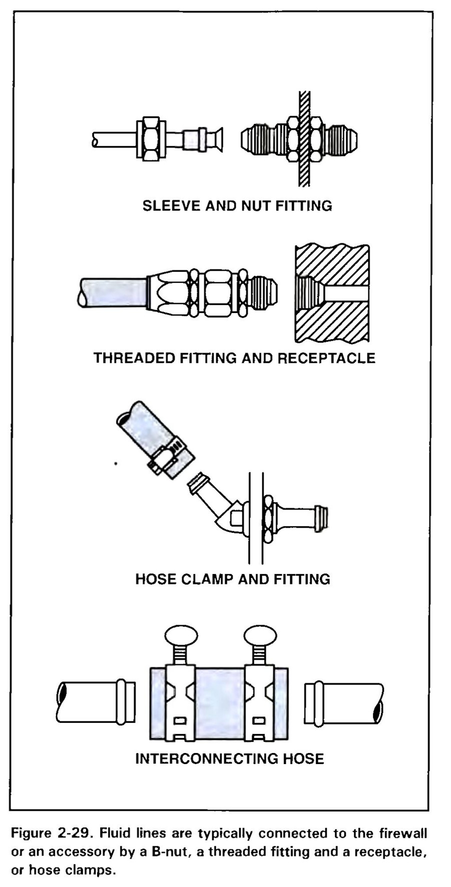
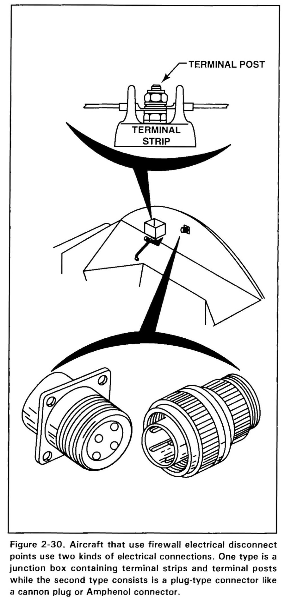
엔진 조종계통과 흡·배기 부품 분리 심화 📙 Jeppesen 정독
Engine Controls, Intake, and Exhaust Disconnection엔진 조종 케이블과 로드는 조종실에서 엔진을 조작할 수 있게 해 줍니다. 일반적인 조종 케이블은 보호용 하우징을 포함하며, 대부분의 경우 케이블이나 로드는 양쪽 끝에 나사가 나 있고 한쪽에는 클레비스(clevis), 다른 쪽에는 로드 엔드 베어링(rod end bearing)이 달려 있습니다. 대부분의 항공기에서 로드 엔드 베어링은 볼트와 너트로 엔진이나 부속장비에 연결되고 코터 핀으로 고정됩니다. 분리하려면 코터 핀, 너트, 볼트를 차례로 제거합니다. 카뷰레터 히트 조작용처럼 단순한 케이블은 스크루의 조임 작용으로 부착되어 있을 수도 있습니다.Engine control cables and rods enable the engine to be controlled from within the cockpit. A typical control cable includes its protective housing, and in most cases a cable or rod is threaded at both ends, with a clevis on one end and a rod end bearing on the other. On most aircraft the rod end bearing is connected to the engine or accessory with a bolt and nut, secured with a cotter pin; to disconnect, remove the cotter pin, nut, and bolt. Simple cables, such as those used to control carburetor heat, might be attached by clamping action from a screw.
모든 엔진 조종 링키지를 분리한 뒤에는 하드웨어의 마모 상태를 검사합니다. 코터 핀은 반드시 새것으로 교체해야 하지만, 너트와 볼트가 감항성을 유지하고 있다면 분실되지 않도록 조종 로드에 다시 끼워 둡니다. 조종 로드는 엔진 장탈·장착 중 손상되지 않도록 완전히 떼어내거나 뒤로 묶어 고정해야 합니다.After you disconnect all engine control linkages, inspect the hardware for wear. Cotter pins must be replaced, but if the nuts and bolts remain airworthy, reinstall them in the control rod so they do not get misplaced. Control rods should either be removed completely or tied back to prevent damage during engine removal and installation.
일부 엔진 장착 형태는 벨크랭크(bellcrank)로 조종 로드를 작동시킵니다. 이 경우 조종 로드에 접근하려면 벨크랭크를 떼어내야 할 수도 있고, 그러려면 벨크랭크와 작동 케이블을 잇는 턴버클도 함께 제거해야 합니다. 턴버클을 제거하기 전에는 케이블 끝단이 물려 있는 깊이를 표시해 둡니다. 이 표시는 최종 리깅 전에 조종계통의 원래 위치를 빠르게 근사하는 데 도움이 됩니다.Some engine installations use a bellcrank to actuate a control rod, and you might need to remove the bellcrank to access the rod. In such cases you must also remove the turnbuckle that joins the bellcrank to the actuating cable. Before removing a turnbuckle, mark the depth of engagement of the cable ends; these marks help you quickly approximate the original position of the controls before final rigging.
대부분의 항공기에서는 엔진을 떼어내기 전에 흡기계통과 배기계통 부품을 분리해야 합니다. 이런 부품들의 장착 방식은 엔진과 항공기마다 다르므로, 모든 절차에서 항상 제작사 지침을 따릅니다.For most aircraft, you must disconnect the air intake and exhaust system components before removing the engine. Because the installation of these and other components varies among different engines and aircraft, always follow the manufacturer's instructions for all procedures.
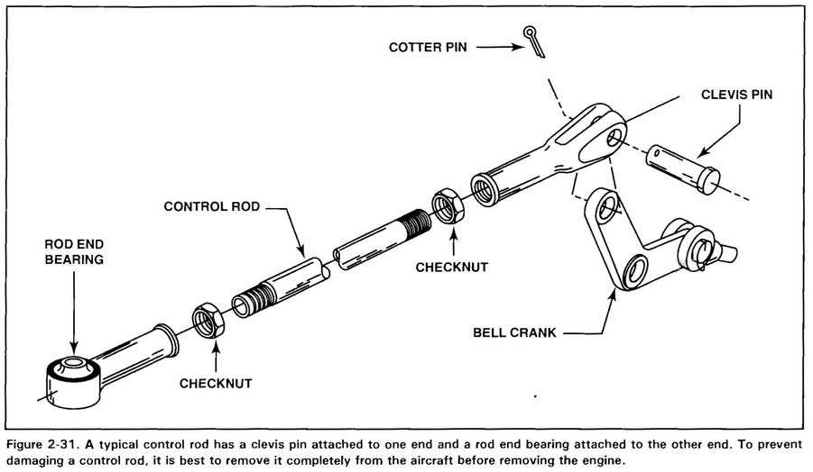
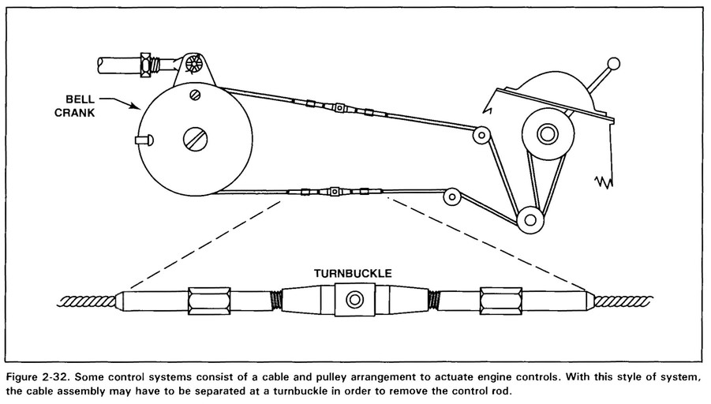
엔진 호이스팅과 QECA 심화 📙 Jeppesen 정독
Engine Hoisting and Quick Engine Change Assembly기체 쪽 연결이 모두 풀려 간섭이 없으면 엔진을 들어올릴 준비가 된 것입니다. 준비가 철저했다면 장탈은 대개 단순한 작업입니다. 남는 결정은 엔진만 떼어낼 것인지 마운트를 붙인 채 떼어낼 것인지입니다. 통상적인 오버홀에서는 엔진만 떼어냅니다. 그러나 퀵 엔진 체인지 어셈블리(QECA)로 엔진을 교체하는 경우에는 분리점이 대개 방화벽이 됩니다. QECA는 부속장비가 이미 장착되어 엔진 마운트 조립체에 부착된 상태의 동력장치를 말합니다.After all airframe connections are free and clear, the engine is ready for hoisting. If the engine is thoroughly prepared, removal is typically a simple task. One decision that remains is whether to remove only the engine or the engine with the mount attached. For a typical overhaul, only the engine is normally removed. However, if you are replacing an engine with a quick engine change assembly (QECA), the separation point is usually the firewall. A QECA includes the powerplant with accessories already installed and attached to the engine mount assembly.
엔진 부착점을 풀어 제거하기 전에, 슬링을 건 호이스트를 걸어 엔진 무게를 지지합니다. 항공기 엔진에는 호이스팅용 지정 지점이 있으며, 부착점의 위치와 슬링 배치는 엔진의 크기와 무게에 따라 달라집니다. 항상 엔진 제작사 절차를 따르고 권장 장비를 사용합니다. 안전을 위해 사용 전에 슬링과 호이스트를 검사합니다. 호이스트 암을 뻗은 상태에서 엔진을 안전하게 들어올릴 수 있을 만큼 충분한 정격을 갖췄는지 반드시 확인해야 하는데, 대부분의 경우 호이스트 암을 길게 뻗을수록 인양 능력이 줄어들기 때문입니다.Before you loosen and remove the engine attach points, attach a hoist with a sling to support the engine's weight. Aircraft engines have specific points for hoisting, and the location of attach points and sling arrangement varies according to the engine's size and weight. Always follow the engine manufacturer's procedures and use the recommended equipment. For your safety, inspect the sling and hoist before use. Be sure the hoist is sufficiently rated to lift the engine safely with the hoist arm extended; in most cases, lifting capacity is reduced the further the arm is extended.
일부 엔진 호이스트에는 동력 구동장치가 달려 있습니다. 동력 호이스트는 각별히 주의해서 다루어야 하며, 능숙해지기 전까지는 숙련된 작업자의 도움을 받아야 합니다. 엔진을 들어올리기 전에 항공기 테일이 지지되어 있고 휠 촉이 확실히 고여 있는지 확인합니다. 그다음, 기체 제작사 지침에 명시된 대로 엔진 마운트 부착부의 너트를 제거하기 전에 엔진 무게가 마운트에서 빠질 만큼만 엔진을 들어올립니다.Some engine hoists are fitted with powered drives. Use extra caution with power hoists and seek assistance from an experienced operator until you are proficient in their use. Before lifting an engine, verify that the aircraft tail is supported and that wheel chocks are secure. Then raise the engine just enough to remove the engine weight from the mount before removing the nuts from the engine mount attachments as specified in the airframe manufacturer's instructions.
마지막 하드웨어를 제거하기 전에, 엔진이 측면 하중 없이 안정되고 확실하게 지지되고 있는지 확인합니다. 그다음 남은 마운트 하드웨어를 제거하고 엔진을 조심스럽게 마운트에서 빼냅니다. 어느 지점에서든 엔진이 걸리면 이유를 확인하고 자유롭게 움직일 때까지 필요한 만큼 엔진을 조작합니다. 엔진이 기체에서 완전히 빠져나오면 엔진 스탠드로 내려놓고 적절한 하드웨어로 고정합니다.Before the last hardware is removed, verify that the engine is steady and secure without any side-loading. Next, remove the remaining mount hardware and carefully move the engine free of the mount; if the engine binds at any point, identify why and maneuver the engine as necessary until it moves freely. After the engine is clear of the airframe, lower it to an engine stand and secure it with the appropriate hardware.
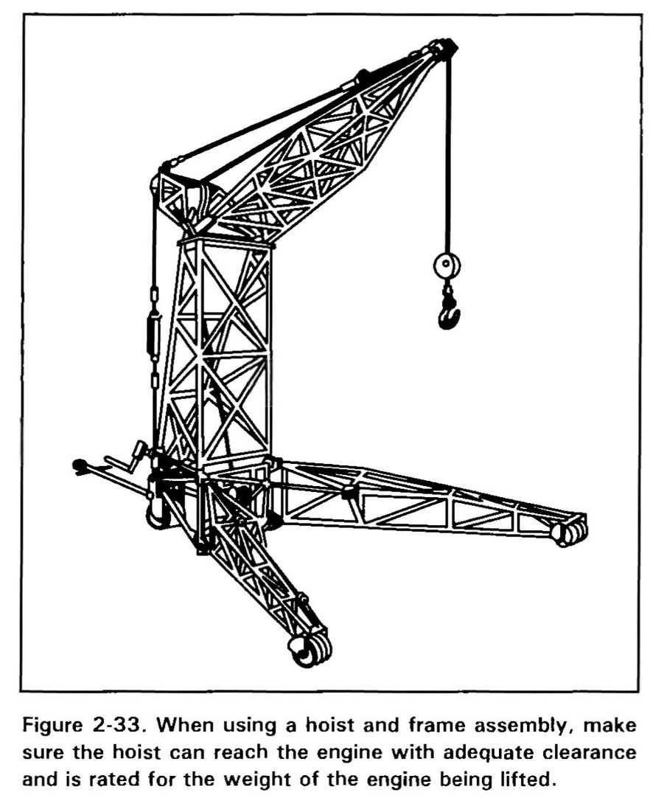
엔진 구획 검사 심화 📙 Jeppesen 정독
Engine Compartment Inspection항공기에서 엔진을 떼어낼 때마다 엔진 구획을 철저히 검사하고 필요한 수리를 합니다. 나셀에 부식, 균열, 리벳 탈락, 기타 눈에 보이는 결함이 없는지 살핍니다. 카울링이나 덕트의 균열은 제작사 구조수리교범에 명시된 허용 한계 내라면 스톱 드릴링하거나 패치할 수 있습니다.Whenever you remove an engine from an aircraft, thoroughly inspect the engine compartment and make any necessary repairs. Examine the nacelle for corrosion, cracks, missing rivets, or other visible defects. Cracks in the cowling or ducts can be stop-drilled or patched if they are within acceptable limits specified in the manufacturer's structural repair manual.
엔진 조종계통의 물리적 상태와 작동을 점검합니다. 나셀 안에 조종 케이블과 풀리가 있다면 소선 절단, 풀리 고착, 플랫 스폿, 가장자리 깨짐, 과도한 유격이 없는지 검사합니다. 조종 로드의 베어링 상태를 검사하고 로드가 휘거나 쓸리거나 부정렬되지 않았는지 확인합니다.Check the physical condition and operation of engine controls. If there are control cables and pulleys in the nacelle, inspect them for broken wire strands and pulley binding, flat spots, chipped edges, and excessive play. Inspect the condition of bearings in control rods and verify that the rods are not bent, chafed, or misaligned.
노출된 전기 배선 전체에 대해 단선, 마모, 절연 열화, 기타 손상이 없는지 검사합니다. 또한 크림핑·납땜된 단자의 고정 상태와 청결도를 살피고, 커넥터 플러그의 손상, 부식, 전반적 상태를 점검합니다. 전기 본딩 스트랩이 확실히 부착되어 있고 풀림이나 부식 없이 양호한지 확인합니다. 본딩 스트랩의 기체에 대한 전기저항을 측정해 기체 제작사 규격과 비교합니다. 확인된 부적합은 제작사 규격과 연방항공규정에 명시된 대로 수리하거나 교환합니다.Inspect all exposed electrical wiring for breaks, chafing, deteriorated insulation, or other damage. Examine crimped and soldered terminals for security and cleanliness, and check connector plugs for damage, corrosion, and overall condition. Ensure that electrical bonding straps are firmly attached and in good condition with no fraying or corrosion. Measure the electrical resistance of bonding straps to the airframe and compare with the airframe manufacturer's specifications. Repair and replace identified discrepancies as specified in the manufacturer's specifications and the Federal Aviation Regulations.
유압·공압 튜브의 상태를 살핍니다. 찍힘(dent), 흠집(nick), 꺾임(kink), 비틀림이 없어야 하고 부착 클램프는 확실히 고정되어 있어야 합니다. 모든 에어 덕트의 찌그러짐과 이음부 고무(또는 직물) 마모방지 스트립의 상태를 점검합니다. 찌그러짐은 펴 주고, 마모방지 스트립이 뜯겨 있거나 더 이상 밀착 실을 이루지 못하면 교체합니다.Examine the condition of hydraulic and pneumatic tubes; they should not be dented, nicked, kinked, or twisted, and the attaching clamps should be secure. Check all air ducts for dents and the condition of the rubber or fabric antichafing strips at their joints. Work out any dents and replace antichafing strips if they have pulled loose or no longer form a tight seal.
호스는 웨더 체킹(weather checking)과 콜드 플로(cold flow)가 있는지 검사합니다. 웨더 체킹은 호스 외피가 갈라지는 현상으로, 심하면 보강 웨빙까지 파고들 수 있습니다. 콜드 플로는 호스 클램프 때문에 생긴 깊고 영구적인 눌림 자국을 말합니다. 두 손상 모두 호스를 약화시켜 결국 누설을 일으킬 수 있습니다. 호스 외에 배기 조립체도 부착 상태의 확실성, 균열, 과도한 부식이 없는지 검사해야 합니다.Inspect hoses for weather checking or cold flow. Weather checking is a cracking of the outside covering of hoses that can penetrate the reinforcement webbing. Cold flow refers to deep, permanent impressions caused by hose clamps. Both types of damage weaken hoses and can eventually cause leaks. In addition to the hoses, inspect the exhaust assembly for security of attachment, cracks, and excessive corrosion.
건식 섬프(dry sump) 오일 계통을 사용하는 엔진에서는 오일 탱크를 떼어내 철저히 청소합니다. 오일 쿨러와 온도 조절기는 보통 떼어내 오버홀로 보내지만, 때로는 떼어낸 엔진과 함께 교환품으로 반환되기도 합니다.For engines that use a dry sump oil system, remove the oil tank for thorough cleaning. The oil cooler and temperature regulator are usually removed and sent for overhaul, though sometimes they are returned as an exchange unit with the removed engine.
엔진 마운트와 다이나포컬·쇼크 마운트 심화 📙 Jeppesen 정독
Engine Mounts, Dynafocal Mounts, and Shock Mounts새 엔진이나 오버홀한 엔진을 항공기에 부착하기 전에 엔진 마운트 구조를 검사해야 합니다. 마운트에 굽음, 찍힘, 플랫 스폿, 늘어난 볼트 구멍이 없는지 점검합니다. 염색침투탐상(dye penetrant)을 하면 균열, 다공성 부위, 기타 결함을 찾아내는 데 도움이 됩니다. 엔진 마운팅 볼트 같은 철계 부품은 보통 자분탐상(magnetic particle inspection)으로 점검합니다.Inspect the engine mount structure before you attach the new or overhauled engine on an aircraft. Check the mount for bends, dents, flat spots, or elongated bolt holes. A dye penetrant inspection helps reveal cracks, porous areas, or other defects. Ferrous parts, such as engine mounting bolts, are usually checked by magnetic particle inspection.
엔진은 여러 가지 마운트 구조를 사용해 다양한 방식으로 기체에 장착됩니다. 대부분의 마운트는 성형·리벳 접합한 판금, 단조 합금 피팅, 용접 강관, 또는 이 셋의 조합으로 제작됩니다. 큰 수평 대향형 엔진은 흔히 리벳 접합한 알루미늄 구조에 장착된 단조 합금 피팅으로 부착됩니다. 강관 엔진 마운트는 크고 작은 수평 대향형 엔진과 성형엔진에 모두 쓰이며, 강관 마운트 구조는 엔진 방화벽에 볼트로 결합됩니다.Engines are mounted to airframes in several different ways, using a variety of engine mount structures. Most mounts are constructed from formed and riveted sheet metal, forged alloy fittings, welded steel tubing, or a combination of the three. Large horizontally opposed engines are often attached with forged alloy fittings mounted to a riveted aluminum structure. Steel-tube engine mounts are used with large and small horizontally opposed and radial engines, and steel-tube mounting structures bolt to the engine firewall.
현대의 왕복엔진 항공기 대부분은 다이나포컬(Dynafocal) 엔진 마운트를 사용합니다. 다이나포컬 마운트에서는 장착점들이 안쪽으로 기울어져 엔진의 무게중심을 향하도록 되어 있습니다. 이 설계는 엔진 진동이 기체로 전달되는 것을 제한합니다.Most modern reciprocating engine aircraft use Dynafocal engine mounts. On a Dynafocal mount, the mounting points are turned inward, pointing towards the engine's center of gravity. This design limits the transmission of engine vibration to the airframe.
대부분의 엔진 마운트 조립체에는 진동을 차단하는 쇼크 마운트(shock mount)가 들어 있어 엔진 진동을 감쇠시키면서도 제한된 범위의 엔진 움직임은 허용합니다. 쇼크 마운트는 엔진 무게가 고무 위에 지지되도록 설계되어 있습니다. 쇼크 마운트는 엔진 진동의 상당 부분을 흡수해 기체로 전달되는 양을 줄여 줍니다.Most engine mount assemblies incorporate vibration-isolating shock mounts to dampen engine vibration but still permit restricted engine movement. Shock mounts are designed so that the weight of the engine is supported on rubber. The shock mounts absorb much of the engine vibration, reducing the amount that is transmitted to the airframe.
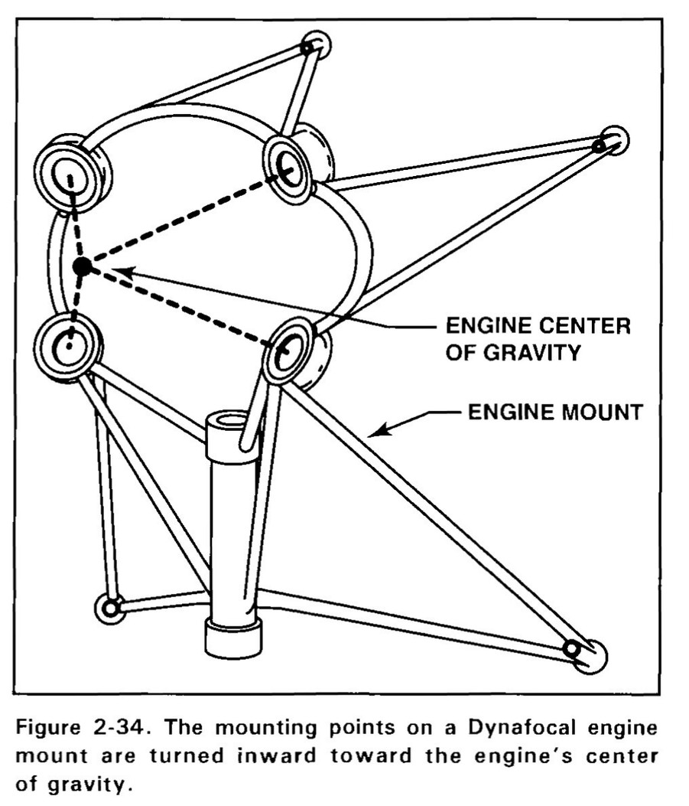
오버홀의 종류: 메이저·리빌트·톱 오버홀 심화 📙 Jeppesen 정독
Types of Overhaul: Major, Rebuilt, and Top Overhaul항공기 운영자가 계획된 정비를 미루거나 소홀히 하면 엔진이나 부품의 조기 고장 위험이 커집니다. 반면 잘 정비된 엔진은 통상 권고 TBO까지 신뢰성 있는 작동을 제공합니다. TBO에 도달하면 마모되거나 손상된 부품을 찾아내 수리하기 위해 엔진을 오버홀해야 합니다. 한계를 넘어 마모된 부품을 확인하는 유일하게 신뢰할 만한 방법은 엔진을 분해하고 철저히 검사하는 것입니다.When aircraft operators delay or neglect scheduled maintenance, the risk of premature engine or component failure increases. However, a well-maintained engine ordinarily provides reliable operation up to the recommended TBO. Upon reaching TBO, the engine should be overhauled to detect and repair worn or damaged parts. The only reliable way to identify parts worn beyond limits is to disassemble the engine and perform a thorough inspection.
엔진 제작사는 각 부품의 감항성을 판단할 수 있도록 일반 지침과 구체적 허용치가 담긴 오버홀 지침을 제공합니다. 제작사 규격을 충족하지 못하는 부품은 반드시 교체해야 하지만, 허용치를 충족하는 부품은 엔진에 다시 장착할 수 있습니다. 다만 어떤 부품이 감항한계에 근접해 있다면, 다음 계획 오버홀 전에 고장이나 허용 불가능한 마모가 발생하지 않도록 교체를 고려해야 합니다.Engine manufacturers provide overhaul instructions with general instructions and specific tolerances to determine airworthiness of each part. Parts that do not meet the manufacturer's specifications must be replaced, though parts that do meet tolerances can be reinstalled. However, if a part is near its airworthiness limit, consider replacement to avoid failure or unacceptable wear before the next scheduled overhaul.
메이저 오버홀(major overhaul)은 엔진 전체를 재정비하는 것을 뜻합니다. 메이저 오버홀 사이의 구체적인 주기는 제작사 권고나 FAA가 승인한 시간을 근거로 하며, 제작 시점 또는 마지막 메이저 오버홀 시점부터 계산합니다. 메이저 오버홀 과정에서 엔진은 분해, 세척, 검사, 필요 시 수리, 재조립, 시험을 거칩니다. 규정된 허용치를 충족하지 못하는 부품은 식별되어 폐기하거나 수리합니다. 개스킷, 실, 특정 하드웨어처럼 상태와 관계없이 교체하는 부품도 많으며, 어떤 품목을 반드시 교체해야 하는지는 제작사 지침에 명시되어 있습니다. 또한 모든 부속장비는 오버홀이나 교체를 위해 떼어냅니다.A major overhaul entails a complete engine reconditioning. The specific interval between major overhauls is based on manufacturer recommendations or an FAA-approved number of hours from the time of manufacture or from the last major overhaul. During a major overhaul, an engine is disassembled, cleaned, inspected, repaired as needed, reassembled, and tested. Any part that fails to meet specified tolerances is identified and either scrapped or repaired. Many parts such as gaskets, seals, and certain hardware are replaced regardless of condition, and manufacturer instructions specify which items must be replaced. Furthermore, all accessories are removed for overhaul or replacement.
엔진 제작사는 해당 엔진의 특정 끼워맞춤(fits), 허용치(tolerances), 한계(limits)를 정합니다. 이 치수들은 생산 도면에 기록되며 신품 엔진 부품에 대한 기준이 됩니다. 또한 제작사는 서비스 리밋(service limits)을 정하는데, 이는 부품이 여전히 사용 가능하다고 볼 수 있는 최대 마모량을 뜻합니다. 재장착되는 부품에는 사용 가능 부품 허용치를, 새 부품에는 신품 허용치를 적용합니다.Engine manufacturers establish the particular fits, tolerances, and limits for an engine. These measurements are recorded on the production drawings and are authoritative for new engine parts. Additionally, the manufacturer establishes service limits, which refer to the maximum amount of wear that a part can have and still be considered serviceable. Serviceable part tolerance limits are used for parts being reinstalled, and new part tolerances are used with any new parts.
엔진의 총 시간은 오버홀 후에도 계속 누적됩니다. 다만 대수리 이후 시간(SMOH)을 엔진 로그에 추가로 기입해야 합니다. 제로 타임(zero time) 지위가 부여되는 것은 신품 엔진과 리빌트 엔진(rebuilt engine)뿐입니다. 14 CFR Part 43은 리빌트 엔진을 신품 엔진과 동일한 허용치와 한계로 분해, 세척, 검사, 필요 시 수리, 재조립, 시험을 거친 엔진으로 규정합니다. 리빌트 엔진에는 신품 부품 허용치·한계에 부합하거나 승인된 오버사이즈·언더사이즈 치수에 부합하는 신품 또는 중고 부품이 들어갈 수 있습니다. 엔진을 리빌드하고 제로 타임을 부여할 수 있는 주체는 제작사 또는 제작사가 승인한 기관뿐입니다.Engine total time continues to accumulate after an engine has been overhauled. However, the hours since major overhaul (SMOH) should be added to the engine log. Only new engines and rebuilt engines are granted a zero time status. 14 CFR Part 43 describes a rebuilt engine as one that has been disassembled, cleaned, inspected, repaired as necessary, reassembled, and tested to the same tolerances and limits as a new engine. A rebuilt engine can contain either new or used parts that conform to new part tolerances and limits or to approved oversized or undersized dimensions. Only the manufacturer, or an agency approved by the manufacturer, can rebuild an engine and offer zero time.
제로 타임 지정은 소유자나 운영자가 이전 운용 이력을 참조하지 않는 새로운 정비 기록을 시작할 수 있게 해 줍니다. 리빌트된 항공기의 정비 로그에는 엔진이 리빌드된 날짜, 감항성개선지시(AD)에 따라 이루어진 모든 변경, 제작사 서비스 불레틴 준수 사항이 포함되어야 합니다. 한편 엔진 오버홀이나 교환 프로그램 광고에는 리매뉴팩처드 엔진(remanufactured engine)이라는 용어가 쓰이기도 합니다. 이 용어는 규정이나 엔진 제작사가 정의한 것이 아니므로, 잠재 공급자에게 그 용어가 무엇을 뜻하는지 반드시 확인해야 합니다.A zero time designation allows the owner or operator to start a new maintenance record with no reference to previous operating history. The maintenance log of a rebuilt aircraft must include the date that the engine was rebuilt, all changes made as required by airworthiness directives, and compliance with manufacturer's service bulletins. Some advertisements for engine overhauls or exchange programs use the term remanufactured engine. This term is not defined by regulations or engine manufacturers, so you should question potential vendors about what the term means.
메이저 오버홀과 비교하면 톱 오버홀(top overhaul)은 엔진 실린더에 국한됩니다. 통상적인 톱 오버홀에서는 실린더, 피스톤, 밸브 작동기구를 분해, 세척, 검사, 재정비, 재조립합니다. 피스톤 링은 교체하고 밸브 가이드와 시트는 검사 후 필요하면 교체합니다. 톱 오버홀에서는 실린더에 접근하기 위한 최소한의 엔진 분해만 필요하며, 대부분의 경우 흡기 매니폴드, 점화 하네스, 배기 컬렉터를 떼어내는 정도입니다. 마그네토, 시동기, 얼터네이터 같은 엔진 부속장비는 보통 떼어낼 필요가 없습니다.Compared with a major overhaul, a top overhaul is limited to the engine cylinders. During a typical top overhaul, the cylinders, pistons, and valve operating mechanisms are disassembled, cleaned, inspected, reconditioned, and reassembled. The piston rings are replaced and the valve guides and seats are inspected and replaced if necessary. A top overhaul requires a minimum amount of engine disassembly to gain access to the cylinders; in most cases this includes removal of the intake manifold, ignition harness, and exhaust collectors. It is usually unnecessary to remove engine accessories such as magnetos, starters, and alternators.
모든 경우에 톱 오버홀을 할지 메이저 오버홀을 할지에 대한 최종 결정은 소유자 또는 운영자의 몫입니다. 톱 오버홀의 가치에 대해서는 이견이 있습니다. 일부 수리시설과 엔진 제작사는 어차피 엔진의 모든 실린더를 떼어낼 것이라면 엔진 전체를 오버홀하는 비용이 상대적으로 크지 않다고 주장합니다. 반면 대부분의 크랭크케이스 조립체가 실린더와 밸브 트레인보다 내구성이 좋기 때문에 톱 오버홀이 엔진 성능을 개선하는 가장 경제적인 방법인 경우가 많다는 견해도 있습니다.In all cases, the final decision regarding whether to perform a top overhaul or major overhaul is up to the owner or operator. Disagreement exists about the value of a top overhaul. Some repair facilities and engine manufacturers argue that if you are going to remove all of an engine's cylinders, it is relatively inexpensive to overhaul the entire engine. An alternate view is that because most crankcase assemblies are more durable than cylinders and valve trains, a top overhaul often provides the most economical way to improve an engine's performance.
- A. 메이저 오버홀major overhaul
- B. 제작사가 수행한 리빌트(rebuilt)a rebuilt engine performed by the manufacturer
- C. 톱 오버홀top overhaul
오버홀 준비와 분해(Disassembly) 심화 📙 Jeppesen 정독
Overhaul Preparation and Disassembly엔진을 오버홀하는 구체적 절차는 해당 엔진의 정비교범과 오버홀교범에 실려 있습니다. 오버홀에서는 엔진 제작사의 교범, 서비스 불레틴, 기타 정비정보를 사용하는 것이 결정적으로 중요합니다. 가장 먼저 해야 할 일 중 하나는 감항성개선지시(AD)와 제작사 서비스 불레틴을 조사하는 것입니다. 여기에 더해 작업에 필요한 검사 서식과 공구를 갖추어야 합니다.The specific procedures to overhaul an engine are listed in its maintenance and overhaul manuals. Using the engine manufacturer's manuals, service bulletins, and other service information is critical for an overhaul. One of your first tasks should be researching airworthiness directives and manufacturer's service bulletins. Additionally, you need to gather the necessary inspection forms and tools for the job.
엔진 오버홀을 위해 항공기가 입고되면 모든 부속장비의 목록을 작성합니다. 여기에는 얼터네이터, 진공펌프, 유압펌프, 프로펠러 거버너가 포함됩니다. 부속장비는 떼어내 적절한 수리시설로 보내 오버홀합니다. 실린더 간 배플, 기화기 또는 연료분사 부품, 마그네토, 점화 리드, 흡기계통 등 다른 구성품은 엔진 부품으로 간주되어 엔진과 함께 남습니다.When an airplane arrives for an engine overhaul, inventory all of the accessories. These include the alternator, vacuum pump, hydraulic pump, and propeller governor. Accessories will be removed and sent to appropriate repair facilities for overhaul. Other components, including intercylinder baffles, carburetor or fuel injection components, magnetos, ignition leads, and the induction system, are considered engine parts and remain with the engine.
엔진을 분해하기 전에 견고한 스탠드에 장착하고 전반적인 상태를 검사합니다. 오일 누설, 과열, 충격 손상의 흔적을 찾고 발견한 부적합은 기록해 둡니다. 적절한 솔벤트로 엔진을 세척해 먼지와 오일을 제거하되, 솔벤트는 엔진에서 반드시 모두 헹궈 냅니다.Before disassembling an engine, install it on a sturdy stand and inspect its general condition. Look for signs of oil leakage, overheating, or impact damage, and make notes of any discrepancies you find. Clean the engine with an appropriate solvent to remove dirt and oil, but be sure to rinse all of the solvent from the engine.
엔진이 깨끗해지면 부속장비를 떼어내 오버홀로 보냅니다. 배기계통, 실린더 간 배플, 점화 리드, 스파크 플러그, 흡기계통 부품을 떼어내 따로 보관합니다. 엔진을 분해할 때는 떼어낸 모든 부품에 태그를 붙여 표시합니다. 너트, 볼트, 기타 작은 부품은 분실과 손상을 막기 위해 적절한 용기에 담습니다. 세이프티 와이어, 코터 핀 등 한 번만 쓰는 안전장치는 폐기하고 새 부품으로 교체합니다.After the engine is clean, remove the accessories and send them out for overhaul. Remove and set aside the exhaust system, intercylinder baffles, ignition leads, spark plugs, and induction system components. When disassembling the engine, label all removed parts by attaching a tag to each part as you remove it. Place nuts, bolts, and other small parts in suitable containers during disassembly to prevent loss and damage. Discard safety wire, cotter pins, and some other safety devices that are used only once and replace them with new parts.
엔진 부품이나 하드웨어를 손상시키지 않도록 각 작업에 맞는 올바른 절차를 사용합니다. 예를 들어 제작사는 실린더를 떼어내기 전에 해당 피스톤을 압축행정의 상사점에 두도록 권고합니다. 그렇게 하면 밸브 기구에 압력을 가하지 않고 실린더를 떼어낼 수 있고, 실린더를 빼낼 때 피스톤과 커넥팅 로드를 지지해 줍니다. 커넥팅 로드와 피스톤이 제대로 지지되지 않으면 떨어지면서 크랭크케이스를 때릴 수 있고, 이는 이후 작업에서 고장으로 이어질 수 있습니다.Use the proper procedures for each task to avoid damaging engine parts or hardware. For example, manufacturers recommend that before removing any cylinder, the associated piston should be placed at top dead center on the compression stroke. Doing so enables you to remove the cylinder without applying any pressure to the valve mechanism and provides support to the piston and connecting rod as you extract the cylinder. If the connecting rod and piston are not properly supported, they can fall and strike the crankcase, which can lead to failure in subsequent operations.
크랭크샤프트 베어링, 오일 실, 개스킷, 응력을 받는 볼트와 너트는 통상 오버홀 시 교체하며 떼어낸 것은 폐기해야 합니다. 어떤 경우든 필요한 교체 품목의 전체 목록은 해당 제작사의 정비교범, 오버홀교범, 서비스 불레틴을 확인합니다. 느슨하거나 손상된 스터드나 피팅이 있으면 기록하고, 더 심각한 마모나 손상의 흔적이 있는지 면밀히 살핍니다.Crankshaft bearings, oil seals, gaskets, and stressed bolts and nuts are typically replaced at overhaul and should be discarded. In every case, consult the applicable manufacturer's maintenance and overhaul manuals and service bulletins for a complete listing of required replacement items. Note any loose or damaged studs or fittings and examine them closely for evidence of more serious wear or damage.
엔진을 완전히 분해하고 부품을 깨끗한 작업대에 늘어놓아 예비 검사를 합니다. 내부 엔진 부품을 세척하기 전에 육안검사를 먼저 수행해, 오일 잔류물과 슬러지 속에 금속 입자가 남아 있는지 확인합니다. 이는 임박한 고장을 시사할 수 있습니다. 검사 전에 부품을 세척하면 그 입자들이 씻겨 나가 손상을 식별하기 어려워질 수 있습니다.Completely disassemble the engine and lay out the parts on a clean workbench for a preliminary inspection. Before you clean the internal engine parts, perform a visual inspection to look for residual deposits of metallic particles in oil residue and sludge, which might indicate an impending failure. Cleaning the parts before inspection could flush away the particles and make identifying damage more difficult.
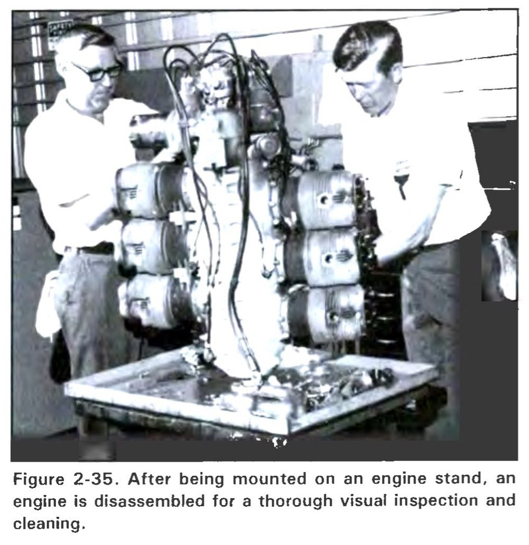
오버홀 세척: 솔벤트·탈탄·그릿 블라스팅 심화 📙 Jeppesen 정독
Overhaul Cleaning: Solvents, Decarbonizing, and Grit Blasting엔진을 분해하고 육안으로 검사한 뒤에는 모든 부품을 세척합니다. 각 부품을 엔진 제작사가 승인한 상용 안전 솔벤트에 담그거나 분무합니다. 비누나 가성 화합물이 든 수용성 탈지액은 통상 권장되지 않는데, 수용성 용액이 알루미늄과 마그네슘에 부식성을 가질 수 있기 때문입니다. 또한 잔류 비누가 엔진 부품의 기공에 갇혀 있다가 엔진이 사용에 복귀한 뒤 오일 오염과 거품을 일으킬 수 있습니다.After you disassemble and visually inspect an engine, clean all of the parts. Soak or spray each part with a commercial safety solvent approved by the engine manufacturer. Water-soluble degreasing solutions with soap or caustic compounds are normally not recommended because water-soluble solutions can be corrosive to aluminum and magnesium. Furthermore, residual soap can become trapped in the pores of engine components and cause oil contamination and foaming after the engine is returned to service.
솔벤트만으로는 엔진 내부 표면에 쌓인 단단한 카본 퇴적물을 제거하기에 충분하지 않을 때가 있습니다. 이런 퇴적물을 제거하려면 제작사 권고에 따라 승인된 탈탄 용액(decarbonizing solution)을 사용합니다. 개인 안전을 위해 주의를 기울이고 제작사 권고를 따르며, 이런 화학물질을 다룰 때는 항상 보호복과 눈 보호구를 착용합니다. 탈탄 용액은 수용성 또는 탄화수소계로 나옵니다. 수용성 용액은 수용성 탈지제와 같은 부식 유발 성질을 갖기 때문에 탄화수소계 용액이 더 바람직합니다.Solvent is not always strong enough to remove hard carbon deposits that build up on interior engine surfaces. To remove these deposits, follow the manufacturer's recommendations and use an approved decarbonizing solution. For personal safety, exercise caution and follow the manufacturer's recommendations, and always wear protective clothing and eye protection when working with these chemicals. Decarbonizing solutions are available in a water-soluble or a hydrocarbon base. Hydrocarbon-based solution is preferable because the water-soluble solutions have the same corrosion-inducing properties as water-soluble degreasers.
엔진 부품을 규정된 시간보다 오래 탈탄 용액에 담가 두지 않도록 합니다. 마그네슘 부품을 담그기 전에는 그 용액이 마그네슘에 안전한지 반드시 확인합니다. 강 부품과 마그네슘 부품을 같은 용기에 섞어 넣지 않아야 하는데, 세척액이 이종 금속 사이에 화학반응을 일으켜 마그네슘을 부식시킬 수 있기 때문입니다. 부속장비 하우징은 마그네슘 함량이 높은 경우가 많으므로 특히 주의합니다.Avoid leaving engine parts in a decarbonizing solution longer than the prescribed time periods. Be sure the solution is safe for magnesium parts before immersing them. Do not mix steel and magnesium parts in the same container because the cleaning solution might cause a chemical reaction between the dissimilar metals and corrode the magnesium. Be especially careful with accessory housings because they often have high magnesium content.
부품을 규정 시간 동안 담근 뒤에는 탈탄 용액의 흔적을 모두 제거하도록 세척합니다. 스팀 세척을 하거나 미네랄 스피릿과 뻣뻣한 솔의 부품 세척용 브러시를 쓸 수 있습니다. 베어링이나 연마된 표면을 제외하면, 남아 있는 카본 퇴적물은 스크레이퍼나 와이어 브러시로 제거하거나, 플라스틱 펠릿 또는 쌀·구운 밀·분쇄 호두껍질 같은 유기 매체로 그릿 블라스팅해 제거할 수 있습니다.After the parts have soaked the prescribed time, clean them to remove all traces of the decarbonizing solution. You can steam-clean parts or use mineral spirits and a stiff-bristle parts cleaning brush. Except for bearings or polished surfaces, remove any remaining carbon deposits with a scraper or wire brush, or by grit-blasting with plastic pellets or organic media such as rice, baked wheat, or crushed walnut shells.
다만 그릿 블라스팅을 시작하기 전에 드릴 가공된 모든 오일 통로에 고무나 플라스틱 플러그를 끼우고, 기계 가공면은 권장 재료로 마스킹합니다. 나사 구멍에는 볼트나 스크루를 끼워 그릿이 나사산으로 들어가지 않게 하고, 부품 세척 후 이 하드웨어는 폐기합니다. 밸브 시트는 통상 경화 처리되어 있어 그릿 블라스팅 중 보호하지 않아도 되는 것이 보통입니다. 실제로 밸브 시트에 생긴 글레이즈를 그릿 블라스팅으로 제거할 수 있고, 탈탄 용액으로 벗겨지지 않는 실린더 냉각 핀의 에나멜도 제거할 수 있습니다. 그릿 블라스트 사용 시 손상을 피하려면 실용적인 범위에서 가장 낮은 공기압을 쓰고 카본을 제거할 만큼만 짧게 블라스팅합니다.Before beginning any grit-blasting process, insert rubber or plastic plugs in all drilled oil passages and mask all machined surfaces with a recommended material. Bolts and screws can be screwed into threaded holes to prevent grit from getting into the screw threads; discard this hardware after the part is cleaned. Because valve seats are typically hardened, they can usually be left unprotected during grit-blasting. In fact, you can use grit-blasting to remove the glaze that forms on valve seats, as well as the enamel from cylinder cooling fins that does not come off in a decarbonizing solution. To avoid damage, use the lowest air pressure practical and blast the part only long enough to remove the carbon.
단단한 카본 퇴적물을 기계적 수단으로 제거할 때는 항상 각별히 주의합니다. 공구를 너무 공격적으로 쓰면 의도치 않은 손상을 줄 수 있습니다. 연마성 공구로 부품을 세척할 때는 특히 주의를 기울입니다. 저널이나 크랭크핀 같은 기계 가공면·연마면 베어링 표면을 세척할 때는 미네랄 스피릿을 적신 크로커스 천(crocus cloth)을 사용하고, 카본을 모두 제거한 뒤 마른 크로커스 천으로 표면을 광택 냅니다.Always use extra caution when using mechanical means to clean hard carbon deposits; you can cause unintentional damage if you use the tools too aggressively. Pay extra attention when cleaning any part with abrasive tools. To clean machined or polished bearing surfaces such as journals and crankpins, use crocus cloth moistened with mineral spirits. After all the carbon is removed, polish the surfaces with dry crocus cloth.
크랭크샤프트의 중공 크랭크핀은 슬러지 챔버로 사용되므로, 세척과 육안검사를 위해 크랭크핀 끝단의 플러그를 반드시 제거해야 합니다. 크랭크핀을 철저히 세척하지 않으면 세척 중 떨어져 나온 슬러지가 크랭크샤프트 오일 통로를 막아 이후 베어링 고장을 일으킬 수 있습니다. 세척 후에는 강 부품에 보호유 피막을 발라 부식을 방지합니다. 이후 검사를 위해 이 오일 피막을 제거해야 한다면, 검사가 끝난 뒤 반드시 다시 발라야 합니다.Because hollow crankpins in a crankshaft are used as sludge chambers, the plugs must be removed from the crankpin ends for cleaning and visual inspection. If the crankpins are not thoroughly cleaned, sludge loosened during cleaning can clog crankshaft oil passages and cause subsequent bearing failure. After cleaning, coat steel parts with a film of protective oil to prevent corrosion. If the oil coating must be removed for subsequent inspections, it is imperative to reapply it when the inspections are complete.
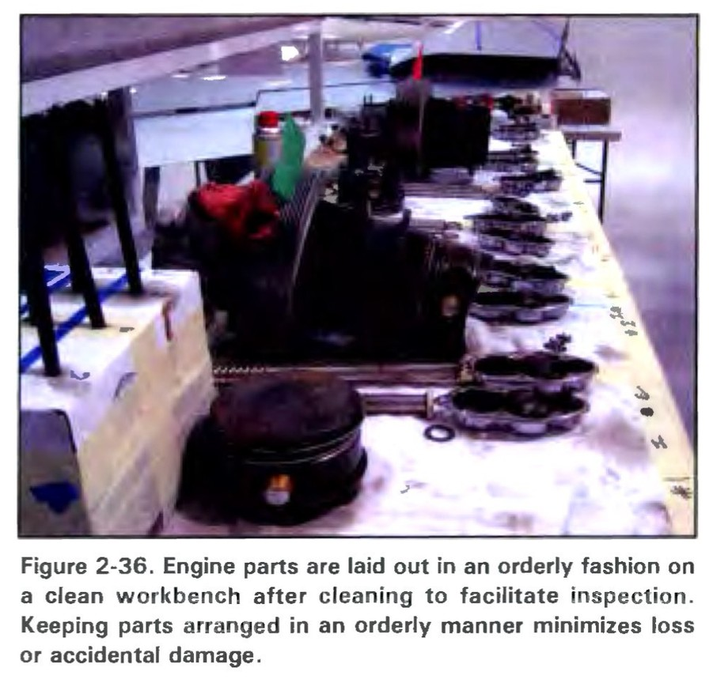
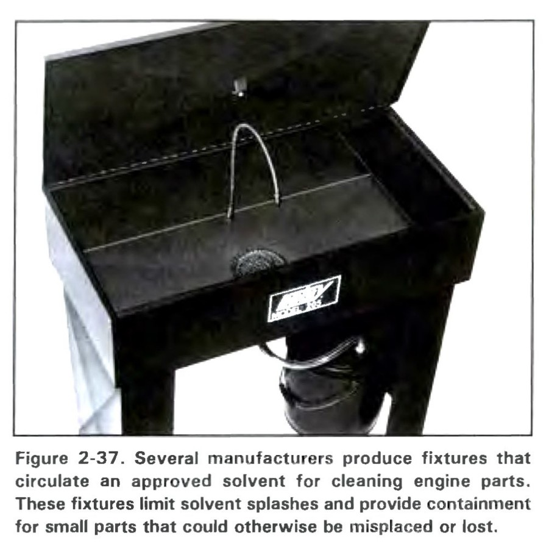
- A. 세척력이 너무 강하기 때문they clean too aggressively
- B. 가격이 비싸기 때문they are expensive
- C. 알루미늄·마그네슘에 부식성이고 잔류 비누가 오일을 오염시키기 때문they can corrode aluminum and magnesium, and residual soap contaminates the oil
육안검사 결함 용어 정리 심화 📙 Jeppesen 정독
Visual Inspection: Common Defect Terminology엔진 부품이 깨끗해지면 손상 여부를 검사해야 합니다. 첫 번째 검사는 철저한 육안검사입니다. 돋보기, 손전등, 보어스코프를 사용해 부품의 눈에 보이는 표면 결함을 찾아냅니다. 아래는 흔한 결함 유형을 나타내는 용어들입니다.After the engine parts are clean, they must be inspected for damage. The first type of inspection is a thorough visual inspection. Use a magnifying glass, flashlight, and borescope to detect visible surface defects in parts. The following are terms that describe common types of defects.
어브레이전(abrasion)은 움직이는 부품 사이에 낀 이물질 때문에 생긴 거칠어진 긁힘이나 자국이 있는 부위입니다. 브리넬링(brinelling)은 베어링 레이스에 생긴 하나 이상의 압흔으로, 대개 높은 정하중이나 장착·탈거 중 가해진 힘이 원인이며, 볼이나 롤러가 남긴 자국이라 둥글거나 구형입니다. 버닝(burning)은 부적절한 끼워맞춤, 윤활 부족, 과온 운전에 따른 과도한 열로 생긴 표면 손상입니다. 버니싱(burnishing)은 매끄럽고 더 단단한 표면과의 미끄럼 접촉으로 한쪽 표면이 광택 나는 현상으로, 보통 금속의 이동이나 제거는 일어나지 않습니다. 버(burr)는 기계 가공, 드릴링, 절삭에서 생기는 날카롭거나 거친 금속 돌출부입니다.Abrasion is an area of roughened scratches or marks usually caused by foreign matter between moving parts. Brinelling is one or more indentations on bearing races usually caused by high static loads or the application of force during installation or removal; the indentations are rounded or spherical due to the impression left by ball bearings or rollers. Burning is surface damage caused by excessive heat as a result of improper fit, insufficient lubrication, or over-temperature operation. Burnishing is the polishing of one surface by sliding contact with a smooth, harder surface, usually with no displacement or removal of metal. A burr is a sharp or roughened projection of metal usually resulting from machine processing, drilling, or cutting.
셰이핑(chafing)은 가벼운 압력 아래 두 부품이 문질러져 생기는 마모입니다. 치핑(chipping)은 과도한 응력 집중이나 부주의한 취급으로 재료 조각이 떨어져 나가는 것입니다. 부식(corrosion)은 화학적 또는 전기화학적 작용에 의한 금속 손실로, 일반적으로 기계적 방법으로 제거합니다. 크랙(crack)은 진동, 과부하, 내부 응력, 결함 있는 조립, 피로, 급격한 충격 등으로 생기는 재료의 부분적 분리입니다. 컷(cut)은 톱날, 정, 스크루드라이버 같은 날카로운 물체 때문에 대개 상당한 깊이로 금속이 손실된 것입니다. 덴트(dent)는 주로 판금에서 발견되는 작고 둥근 표면 함몰로, 대부분 다른 물체와의 충격에서 비롯됩니다.Chafing is wear caused by a rubbing action between two parts under light pressure. Chipping is the breaking away of pieces of material caused by excessive stress concentrations or careless handling. Corrosion is loss of metal by a chemical or electrochemical action, generally removed by mechanical means. A crack is a partial separation of material usually caused by vibration, overloading, internal stresses, defective assembly, fatigue, or sudden impact. A cut is loss of metal, usually to an appreciable depth, caused by a sharp object such as a saw blade, chisel, or screwdriver. A dent is a small, rounded surface depression usually found in sheet metal, mostly resulting from impact with another object.
이로전(erosion)은 그릿이나 고운 모래 같은 이물질의 기계적 작용으로 표면 금속이 손실된 것으로, 침식된 부위는 거칠고 이물질이 표면에 대해 움직인 방향으로 줄이 생기기도 합니다. 플레이킹(flaking)은 도금 불량이나 과도한 하중 때문에 금속이나 코팅된 표면의 작은 조각이 떨어져 나가는 것입니다. 프레팅(fretting)은 압력을 받아 맞물린 두 부품 사이의 미세한 움직임으로 생기는 표면 부식의 한 형태입니다. 골링(galling)은 금속이 한 부품에서 다른 부품으로 옮겨갈 정도의 심한 셰이핑 또는 프레팅입니다. 가우징(gouging)은 금속이 밀려난 상태로, 흔히 이물질이 움직이는 부품 사이에 끼어 생깁니다. 그루빙(grooving)은 부정렬된 부품 때문에 생긴 매끄럽거나 둥근 가장자리를 가진 홈이나 채널입니다.Erosion is loss of surface metal caused by the mechanical action of foreign objects such as grit or fine sand; the eroded area is rough and might be lined in the direction the foreign material moved relative to the surface. Flaking is the breaking loose of small pieces of metal or coated surfaces caused by defective plating or excessive loading. Fretting is a form of surface corrosion caused by minute movement between two parts clamped together under pressure. Galling is a severe chafing or fretting in which metal is transferred from one part to another. Gouging is a condition where metal is displaced, often a result of foreign material becoming trapped between moving parts. Grooving is a recess or channel with smooth or rounded edges resulting from misaligned parts.
인클루전(inclusion)은 부품 내부에 포함된 이물질로, 흔히 압연이나 단조 과정에서 제조 중에 들어갑니다. 닉(nick)은 날카로운 가우지나 V자 형태의 함몰로, 공구나 부품의 부주의한 취급이 원인인 경우가 많습니다. 피닝(peening)은 무딘 표면 함몰이 연속으로 나타난 것입니다. 피팅(pitting)은 표면에 생긴 불규칙한 형태의 작은 구멍들로, 대개 부식이나 표면의 미세한 기계적 결손이 원인입니다. 스코어링(scoring)은 움직이는 부품 사이의 이물질이나 부주의한 조립·분해 기법으로 생긴 깊은 긁힘의 연속입니다. 스크래치(scratch)는 깊이와 폭이 다양한 얕고 가는 선이나 자국으로, 부적절한 취급이나 작동 중 미세 이물질의 존재가 원인입니다.An inclusion is foreign material contained within a part, often introduced during manufacture by rolling or forging. A nick is a sharp gouge or V-shaped depression, often caused by careless handling of tools or parts. Peening is a series of blunt surface depressions. Pitting is small hollows of irregular shape in the surface, usually caused by corrosion or minute mechanical chipping of surfaces. Scoring is a series of deep scratches caused by foreign particles between moving parts or careless assembly and disassembly techniques. Scratches are shallow, thin lines or marks varying in degree of depth and width, caused by improper handling or the presence of fine foreign particles during operation.
스커핑 또는 픽업(scuffing or pick up)은 한 부위에서 다른 부위로 금속이 쌓이거나 말려 이동하는 현상으로, 흔히 윤활 부족, 간극 부족, 이물질의 존재가 원인입니다. 스폴링(spalling)은 경화된 베어링 표면의 조각이 떨어져 나가는 베어링 결함입니다. 스테인(stain)은 주변 부위와 눈에 띄게 다른 국부적인 색 변화입니다. 업세팅(upsetting)은 정상 표면 윤곽을 넘어 재료가 밀려난 것으로, 흔히 부풂이나 돌기라고 부르며 부품이 업셋되었을 때는 대개 금속 손실이 없습니다.Scuffing or pick up is a buildup or rolling of metal from one area to another, often caused by insufficient lubrication or clearance, or the presence of foreign matter. Spalling is a bearing defect in which chips of the hardened bearing surface are broken out. A stain is a localized change in color that is noticeably different in appearance from the surrounding area. Upsetting is a displacement of material beyond the normal surface contour, commonly referred to as a bulge or bump; when a part is upset, there is usually no metal loss.
육안검사: 크랭크케이스·기어·베어링·크랭크샤프트·로드·피스톤 심화 📙 Jeppesen 정독
Visual Inspection: Crankcase, Gears, Bearings, Crankshaft, Rods, and Pistons크랭크케이스 안에서 작용하는 힘은 응력이 높은 부위를 만들어 내며, 이런 부위는 결국 균열로 발전할 수 있습니다. 특히 결합면과 베어링 면, 마운팅 보스, 나사 구멍과 스터드, 개구부, 구조적 필렛 부위 주변이 그렇습니다. 균열 검출을 위한 더 정교한 방법도 있지만, 철저한 육안검사는 교체가 필요한 심각한 손상을 신속하게 찾아내는 효율적인 방법입니다. 균열을 찾는 것 외에도 모든 윤활 채널과 오일 포트를 검사해 통로가 열려 있고 막히지 않았는지 확인합니다. 또한 느슨하거나 휜 스터드가 없는지 점검하고 손전등으로 스터드와 구멍의 나사산을 살핍니다. 모든 부적합은 검사가 끝난 뒤 수리하도록 기록합니다.Forces working in a crankcase produce highly stressed areas that can eventually develop cracks, especially around mating and bearing surfaces, mounting bosses, threaded holes and studs, openings, and structural fillet areas. Although more elaborate methods for crack detection are available, a thorough visual inspection is an efficient way to quickly detect serious damage that requires replacement. In addition to looking for cracks, inspect all lubrication channels and oil ports to verify that the passages are open and unrestricted. Furthermore, check for loose or bent studs and examine stud and hole threads with a flashlight. Note all discrepancies for repair after the inspection is complete.
기어의 주된 목적은 운동을 통해 힘을 전달하는 것으로, 이 부품들은 지속적으로 응력을 받으므로 마모는 예상되는 현상입니다. 모든 기어를 육안으로 살펴 이가 깨지거나 갈라졌는지, 피팅이나 과도한 마모가 있는지 확인합니다. 기어 이의 깊은 피트 자국이나 과도한 마모는 기어를 불합격 처리하고 교체할 사유입니다. 기어 베어링 면의 경미한 스크래치와 어브레이전은 고운 크로커스 천으로 다듬을 수 있지만, 깊은 스코어링이나 스크래치는 허용되지 않습니다.The primary purpose of a gear is to transmit force through motion; these parts are continuously stressed and wear should be expected. Visually examine all gears for cracked or chipped teeth and the presence of pitting or excessive wear. Deep pit marks or excessive wear on gear teeth are reasons to reject and replace a gear. Minor scratches and abrasions on a gear's bearing surfaces can be dressed out with a fine crocus cloth; however, deep scoring or scratches are unacceptable.
볼 베어링과 롤러 베어링은 부드러움과 움직임의 자유도를 검사합니다. 베어링을 살펴보는 동안 부품을 조심스럽게 만져 거칠기, 볼이나 롤러의 플랫 스폿, 레이스의 찍힘이나 부식을 확인합니다. 또한 레이스 외면의 피팅, 스코어링, 골링을 점검합니다. 스러스트 베어링 레이스의 피팅이 크로커스 천 연마로 제거되지 않으면 교체해야 합니다. 저널 베어링은 골링, 버닝, 스코어링, 스폴링, 부정렬, 진원도 이탈이 있는지 검사합니다. 부싱이나 평 베어링 같은 베어링 인서트는 대개 교체하지만, 검사해 보면 짝을 이루는 면이나 마운팅 보스의 마모를 발견하는 데 도움이 됩니다. 엔진 내 알루미늄 베어링 면의 긁힘과 가벼운 스코어링은 엔진 제작사 오버홀교범의 한계 내라면 통상 허용됩니다. 다만 다른 결함들은 특정 허용치 안에 들어가더라도 부품 불합격 사유가 될 수 있습니다.Inspect ball and roller bearings for smoothness and freedom of movement. While you look at the bearing, feel the parts carefully to identify any roughness, flat spots on balls or rollers, and dents or corrosion on the races. Additionally, check for pitting, scoring, and galling on the outside surfaces of races. Pitting on a thrust bearing race that cannot be removed by polishing with crocus cloth requires replacement. Inspect journal bearings for galling, burning, scoring, spalling, misalignment, or an out-of-round condition. Bearing inserts such as bushings and plain bearings are usually replaced; however, inspecting them can help you detect wear on their mating surfaces or mounting bosses. Scratching and light scoring of aluminum bearing surfaces in the engine, when within limits of the manufacturer's overhaul manual, is usually acceptable. However, other defects can require rejection of the part even when it falls within certain tolerance limits.
크랭크샤프트는 통상 항공기 엔진에서 가장 무겁고 가장 큰 응력을 받는 부품입니다. 크랭크샤프트에 승인된 수리가 거의 없기 때문에, 육안검사의 주된 목적은 크랭크샤프트가 마모 한계 내에 있는지 판단하는 것입니다. 주 저널과 크랭크핀 저널 베어링 면에 버닝, 피팅, 스코어링, 스폴링이 있는지 검사하고, 저널 면 가장자리의 필렛 부위에 특별히 주의를 기울입니다. 크로커스 천 연마로 제거되지 않는 피팅이 있으면 크랭크샤프트를 교체해야 할 수 있습니다. 크랭크샤프트에 오일 이송 튜브가 있으면 조임 상태를 점검합니다.A crankshaft is typically the heaviest, most highly stressed part of an aircraft engine. Because few repairs are approved for crankshafts, the main purpose of a visual inspection is to determine whether the crankshaft is within limits for wear. Inspect the main and crankpin journal bearing surfaces for burning, pitting, scoring, or spalling; pay special attention to the fillets at the edges of journal surfaces. If any pitting cannot be removed by polishing with crocus cloth, you might have to replace the crankshaft. If the crankshaft is equipped with oil transfer tubes, check them for tightness.
커넥팅 로드는 작은 균열, 부식, 피팅, 닉, 기타 손상이 있는지 검사합니다. 베어링 인서트와 로드 사이의 골링을 살피는데, 이 상태는 엔진이 과회전 상태나 과도하게 높은 MAP을 겪었을 수 있음을 나타냅니다. 골링이 있거나 커넥팅 로드가 비틀리거나 휘었다면 그 로드는 불합격 처리하고 교체합니다.Inspect connecting rods for small cracks, corrosion, pitting, nicks, or other damage. Look for galling between the bearing insert and rod; this condition is an indication that the engine might have experienced an overspeed condition or an excessively high manifold pressure. If galling does exist or if a connecting rod is twisted or bent, reject and replace the rod.
피스톤은 링 홈과 오일 릴리프 홀에서 카본 축적물이 모두 제거되었는지 확인합니다. 각 피스톤의 바깥쪽과 안쪽을 돋보기로 검사해 균열, 스코어, 스크래치가 있는지 살핍니다. 균열을 찾는 또 다른 방법은 피스톤을 오븐에서 조심스럽게 가열해 균열을 벌리고 잔류 오일을 밀어내는 것입니다. 깊은 스코어링, 균열되거나 파손된 링 랜드, 균열된 스커트, 심하게 스코어링된 피스톤 핀 구멍이 있는 피스톤은 불합격 처리해야 합니다. 특히 링 랜드의 밑부분과 피스톤 헤드와 벽이 만나는 부위에 생기는 균열을 주의해서 봅니다. 피스톤 핀은 스코어링, 균열, 피팅을 검사하고, 핀 내부 표면의 피팅과 부식도 점검합니다. 핀은 표면 경화된 경우가 많아 균열이 바깥보다 안쪽에서 더 잘 보입니다. 크로커스 천 연마로 제거되지 않는 피팅이 있으면 그 핀은 불합격 처리하고 교체합니다.Ensure that all carbon buildup is removed from the ring grooves and oil relief holes. Inspect each piston for cracks, scores, and scratches on the outside and inside with a magnifying glass. Another method for detecting cracks is to carefully heat the piston in an oven to open cracks and force out residual oil. Pistons with deep scoring, cracked or broken ring lands, cracked skirts, and badly scored piston pin holes should be rejected; look especially for cracks that form at the base of ring lands and at the junction of the piston head and wall. Examine piston pins for scoring, cracks, and pitting, and check the interior surfaces for pitting and corrosion. Because pins are often case hardened, cracks are more likely to be visible inside the pin than on the outside. If any pitting cannot be removed by polishing with crocus cloth, reject the pin and replace it.
육안검사: 실린더·캠샤프트·밸브기구·나사 패스너 심화 📙 Jeppesen 정독
Visual Inspection: Cylinders, Camshaft, Valve Mechanisms, and Fasteners실린더의 외부·내부 균열에 대한 효과적인 육안검사를 하려면 실린더에 카본 퇴적물과 도료가 없어야 합니다. 냉각 핀 가장자리 근처의 균열은 수리가 가능할 수도 있지만, 핀 밑동의 균열은 불합격 처리와 교체가 필요합니다. 특정 실린더에서 허용되는 핀 손상량은 제작사가 전체 핀 면적에 대한 백분율로 정합니다. 찌그러지거나 휘어진 핀은 그대로 두는 것이 낫습니다. 핀을 펴려고 시도하면 대개 핀이 부러지기 때문입니다.An effective visual inspection of a cylinder for external and internal cracks requires that the cylinder be free of carbon deposits and paint. Cracks near the edge of fins might be repairable, but cracks at the base require rejection and replacement. The amount of fin damage allowed on a given cylinder is established by the manufacturer and based on a percentage of total fin area. Dented or bent fins are best left alone because the attempt to straighten a fin typically results in breaking the fin.
실린더 배럴 내부를 검사할 때 가벼운 정도의 피팅, 녹, 스코어링은 우려할 사항이 아닙니다. 새 링을 장착해 마모가 시작되면 이런 손상은 빠르게 제거됩니다. 피팅, 녹, 스코어링이 많이 존재하면 실린더 벽을 호닝하거나 재연삭합니다. 밸브 시트 인서트는 피팅, 버닝, 스코어링, 비대칭 마모를 검사하고, 이 중 하나라도 있으면 시트를 재가공합니다. 스파크 플러그 나사 인서트는 적정 크기의 탭을 인서트에 통과시켜 나사산 상태와 헐거움을 점검합니다. 나사산에 손상이 있으면 인서트를 교체해야 합니다.When inspecting the inside of a cylinder barrel, light amounts of pitting, rust, and scoring are not cause for concern; when new rings are installed and begin to wear, this damage is quickly removed. If large amounts of pitting, rust, and scoring are present, hone or regrind the cylinder walls. Inspect valve seat inserts for pitting, burning, scoring, and asymmetrical wear; if any of these exist, reface the seat. Inspect spark plug thread inserts for thread condition and looseness by running a tap of the proper size through the insert; any damage to threads requires replacement of the insert.
밸브 가이드를 검사할 때는 세척 과정에서 카본이 모두 제거되었는지 면밀히 확인합니다. 카본 퇴적물이 피팅을 덮거나 메워 검출을 어렵게 만들 수 있기 때문입니다. 피팅된 밸브 가이드를 엔진에 그대로 두면 엔진이 사용에 복귀한 뒤 그 피트에 다시 카본이 모여 밸브 고착을 일으킬 수 있습니다. 로커 샤프트 보스는 스코어링, 균열, 로커 샤프트와 보스 사이의 간극, 진원도 이탈 상태를 점검합니다. 스코어링은 샤프트가 보스 안에서 너무 헐겁거나 로커암이 샤프트에 너무 빡빡해서 로커 샤프트가 보스 안에서 돌 때 발생합니다. 로커 샤프트 보스의 불균일한 마모는 밸브 고착의 증거이며, 이는 로커 샤프트가 위아래로 움직이게 만듭니다.While inspecting the valve guides, look closely to ensure that all carbon was removed during cleaning, because carbon deposits could cover or fill any pitting and make detection difficult. If you leave a pitted valve guide in the engine, carbon deposits might again collect in the pits and cause valve sticking when the engine is returned to service. Check rocker shaft bosses for scoring, cracks, rocker shaft-to-shaft boss clearance, and out-of-round conditions. Scoring occurs when the rocker shaft turns in the bosses because the shaft is too loose in the bosses or because the rocker arm is too tight on the shaft. Uneven wear on the rocker shaft bosses is evidence of sticking valves, which cause the rocker shaft to work up and down.
캠샤프트는 베어링 면과 로브에 페더 에지, 어브레이전, 닉, 업셋 같은 이상이 있는지 검사합니다. 로브의 표면 손상은 리프터를 손상시킬 수 있습니다. 로브 손상이 있거나 스폴링, 피팅, 표면 균열이 있는 캠샤프트는 불합격 처리하고 교체합니다.Inspect camshaft bearing surfaces and lobes for irregularities such as feathered edges, abrasions, nicks, or upsets. Any surface damage on a lobe can damage a lifter. Reject and replace a camshaft with lobe damage or if spalling, pitting, or surface cracks are present.
오버홀 중에는 유압 밸브 리프터를 분해, 세척, 육안검사해야 합니다. 리프터의 플런저와 실린더는 짝을 이루므로, 한 리프터의 부품이 다른 리프터의 부품과 섞이지 않도록 각별히 주의합니다. 리프터에는 닉, 스크래치, 칩이 없어야 합니다. 체크밸브가 제대로 작동하는지는 플런저를 실린더 안으로 눌렀다가 놓았을 때의 동작으로 확인합니다. 플런저가 빠르게 튀어나오면 만족스러운 작동을 뜻합니다. 예상대로 튀어나오지 않으면, 리프터를 결함품으로 폐기하기 전에 시험장비로 누설시험을 수행합니다.You must disassemble, clean, and visually inspect hydraulic valve lifters during an overhaul. A lifter's plunger and cylinder are matched, so take extra care to avoid mixing parts of one lifter with those of another. Lifters should be free from nicks, scratches, and chips. Verify that a check valve operates properly by pressing the plunger into the cylinder and noting its action when you release it; the plunger should bounce back quickly to indicate satisfactory operation. If the plunger does not rebound as expected, perform a leakage test with test equipment before discarding the lifter as defective.
푸시 로드는 깨끗한지 확인하고 특히 오일 통로에 주의를 기울입니다. 볼 엔드는 매끄럽고 닉과 스크래치가 없어야 하며, 리프터와 로커암 볼 소켓에 확실히 맞아야 합니다. 직진도를 확인하려면 푸시 로드를 깨끗하고 평평한 면에 굴려 봅니다. 밸브 로커는 균열은 물론 마모, 피팅, 스코어링된 팁이 있는지 검사합니다. 푸시 로드와 마찬가지로 오일 통로가 막히지 않았는지 확인합니다. 윤활 부족은 청동 로커 부싱과 마찰열로 인해 로커 샤프트의 버니싱과 골링을 일으킬 수 있습니다.Verify that the push rods are clean, paying special attention to the oil passage. Ball ends should be smooth, free from nicks and scratches, and must fit tightly in the lifter and rocker arm ball sockets. To check for straightness, roll push rods across a clean, flat surface. Inspect valve rockers for cracks as well as worn, pitted, or scored tips. As with the push rods, verify that the oil passage is clear. Insufficient lubrication can lead to burnishing and galling of a rocker shaft caused by the bronze rocker bushing and the heat of friction.
밸브의 육안검사는 엔진 상태에 관한 귀중한 정보를 줍니다. 일부 엔진 오버홀교범은 흡기·배기 밸브 교체를 요구합니다. 밸브 재사용이 허용되는 경우에는 상세한 검사가 필요합니다. 과열의 흔적은 물론, 밸브 스템의 닉과 스크래치, 특히 스프링 리테이너 홈 근처를 살핍니다. 이런 부적합이 있으면 밸브를 교체해야 합니다. 밸브 스프링도 작동 중 큰 응력을 받습니다. 스프링은 균열, 녹, 파손된 끝단이 있는지 검사하고, 부식이나 눈에 보이는 마모가 있으면 폐기하고 교체합니다.A visual inspection of the valves provides valuable information about engine condition. Some engine overhaul manuals require intake and exhaust valve replacement. When valves are permitted to be reused, a detailed inspection is required: look for evidence of overheating, as well as nicks and scratches in the valve stem, especially near the spring retainer groove. These discrepancies require that the valve be replaced. Valve springs are also subject to great stress during operation; inspect springs for cracks, rust, and broken ends, and if corrosion or visible wear is present, discard and replace the springs.
나사 패스너의 검사 기준은 구성품과 적용에 따라 다릅니다. 오버홀교범이 특정 볼트, 너트, 스터드, 스크루의 교체를 지정할 수 있습니다. 재사용 가능한 나사 패스너는 균열이나 나사산 손상이 있는지 주의 깊게 살핍니다. 부적절한 장착으로 생긴 크로스 스레딩, 이물질이 끼어 생긴 찢어진 나사산, 부적절한 끼워맞춤으로 생긴 납작해진 나사산 등이 교체를 필요로 하는 나사산 손상의 예입니다. 과도한 조임이나 부적절한 공구로 인한 손상 흔적이 있는 패스너는 모두 교체합니다. 약간의 닉이나 버 같은 작은 결함은 작은 줄, 고운 연마천, 호닝 스톤으로 다듬어 낼 수 있습니다.Inspection criteria for threaded fasteners vary depending on the component and application. The overhaul manual might specify replacement of certain bolts, nuts, studs, and screws. Carefully examine reusable threaded fasteners for cracks or damaged threads. Cross-threading caused by improper installation, torn threads caused by trapped foreign matter, and flattened threads caused by improper fit are examples of thread damage that warrant replacement. Replace any fasteners that exhibit evidence of damage from overtightening or improper tools. Small defects such as slight nicks or burrs can be dressed out with a small file, fine abrasive cloth, or honing stone.
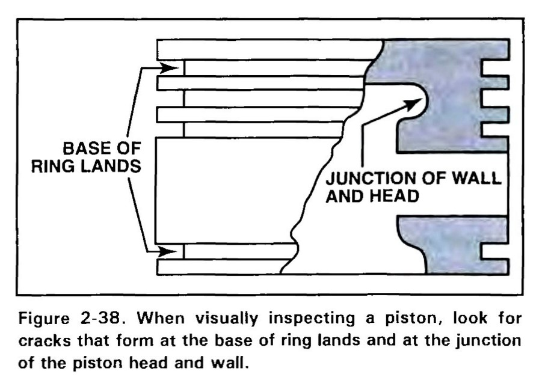
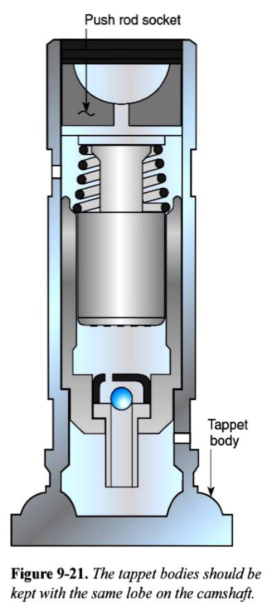
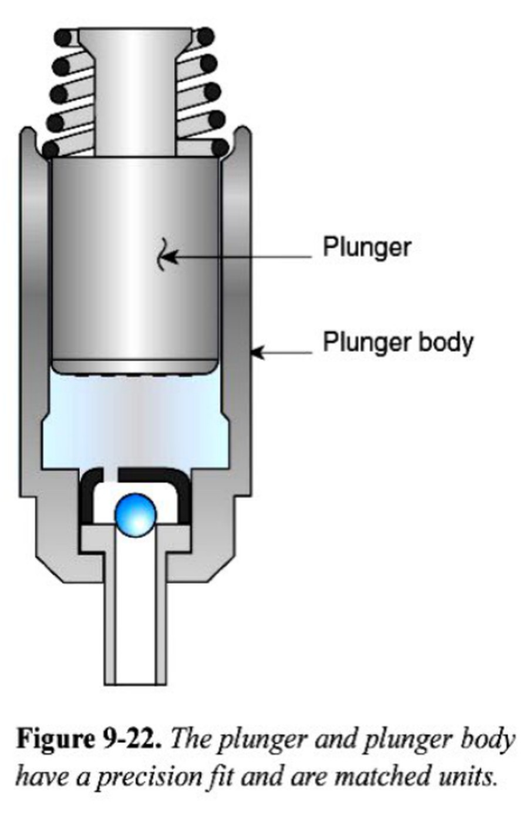
구조검사와 자분탐상(Magnetic Particle Inspection) 심화 📙 Jeppesen 정독
Structural Inspection and Magnetic Particle Inspection모든 엔진 부품을 육안으로 검사한 뒤에는 주요 구성품을 특수 공정으로 검사해 구조적 건전성을 확인해야 합니다. 특수 검사 중에 결함이 발견되면 그 부품에 즉시 불감항(unairworthy) 태그를 붙이고 교체품을 확보합니다. 더 흔한 구조검사에는 자분탐상, 액체침투탐상, 와전류, 초음파, 방사선 검사가 있습니다.After you have visually inspected all engine parts, you must inspect key components with special processes to verify their structural integrity. If you detect a fault during a special inspection, immediately tag the part as unairworthy and obtain a replacement part. Some of the more common structural inspections include magnetic particle, liquid penetrant, eddy current, ultrasonic, and radiography inspection.
철 부품에 가장 자주 사용되는 비파괴검사 방법은 자분탐상입니다. 자분탐상은 금속이 파단될 때 생기는 균열, 갈라짐, 시임, 공극을 검출합니다. 또한 콜드 셧(cold shut)이나 인클루전 같은 제조상 결함도 식별할 수 있습니다.The nondestructive inspection method most frequently used for iron parts is magnetic particle inspection. It detects cracks, splits, seams, and voids that form when a metal ruptures, and can also identify manufacturing defects such as cold shuts and inclusions.
자분탐상에서는 부품을 자화시킨 뒤 철 입자가 든 용액을 부품 위에 붓거나 분무합니다. 철을 상당량 함유한 부품이 강한 자기장에 놓이면 자화되고, 자화된 부품에는 N극과 S극이 생기며 그 사이에 연속적인 자속의 흐름이 형성됩니다. 부품에 결함이 있으면 정상적인 자속선이 교란되고, 블랙라이트 아래에서 보면 결함이 드러납니다.With magnetic particle inspection, a part is magnetized and a solution containing iron particles is poured or sprayed over it. When a part containing a significant amount of iron is subjected to a strong magnetic field, the part becomes magnetized, developing north and south poles between which is a continuous stream of magnetic flux. If the part contains a defect, the normal lines of flux are disrupted and, when viewed under a black light, defects are visible.
자분탐상이 결함을 드러내려면 자속선이 결함에 수직이 되도록 부품을 자화해야 합니다. 자속에 수직인 결함은 큰 교란을 만들어 비교적 검출이 쉽습니다. 반면 자속선과 평행한 결함은 자기장을 최소한으로만 교란해 검출이 어렵습니다. 부품을 철저히 검사하려면 종방향과 원주방향 모두로 자화해야 합니다. 검사에서 어떤 손상이 보이는지 기억하는 가장 쉬운 방법은, 보이는 손상은 전류 흐름과 평행하다는 것입니다.For magnetic particle inspection to indicate a fault, the part must be magnetized so that the lines of flux are perpendicular to the fault. A defect perpendicular to the flux creates a large disruption and is relatively easy to detect. However, a flaw parallel to the lines of flux creates only a minimal disruption and is difficult to detect. To thoroughly inspect a part, magnetize it both longitudinally and circularly. The easiest way to recall which damage is visible during an inspection is that visible damage is parallel to current flow.
종방향 자화에서는 부품을 감싸는 코일을 통해 전류가 흐르고 자속선이 부품을 관통해 형성됩니다. 이때 자속을 가로지르는 결함이 검출됩니다. 원주방향 자화에서는 검사 대상 부품 자체를 통해 전류가 흐르고 자속선이 부품 주위를 둘러쌉니다. 이때는 부품 길이 방향으로 정렬된 흠이나 결함이 검출됩니다. 전류는 부품을 자화 장비의 헤드 사이에 놓아 흘려보냅니다. 관 형태의 부품은 중심에 도체 봉을 넣고 그 봉을 헤드 사이에 놓아 자화할 수 있습니다. 큰 평판 형태의 물체는 테스트 프로브로 부품에 전류를 흘려 원주방향으로 자화할 수 있으며, 이때 자기장은 프로브 사이를 흐르는 전류에 수직으로 형성됩니다.In longitudinal magnetization, current flows around the part through a coil that encircles it and lines of flux are established through the part; defects that cross the flux are detected. With circular magnetization, current flows through the part being inspected and lines of magnetic flux form around the part; flaws aligned along the length of the part are detected. Current is sent through the part by placing it between the heads of the magnetizing equipment. A tubular part can be magnetized by installing a conductive rod through its center and placing the rod between the heads. Large flat objects can be magnetized circularly by passing current through the part using test probes, with the magnetic field oriented perpendicular to the current flowing between the probes.
자분탐상의 시험 매체는 일반적으로 회색, 검정, 빨강 또는 형광 염료로 착색된 매우 고운 산화철입니다. 산화철은 건식으로 쓰거나 등유와 섞어 용액으로 만들 수 있습니다. 건식 입자는 특별한 준비가 필요 없어 현장에서 휴대장비와 함께 쓰기에 적합합니다. 습식법은 수리·검사 시설의 고정 장비에서 더 흔합니다. 용액의 청결이 중요하며, 용액이 오염되면 장비를 세척하고 깨끗한 용액으로 다시 채워야 합니다.In general, the testing media for magnetic particle inspection are extremely fine iron oxides dyed with a gray, black, red, or fluorescent dye. Iron oxides can be used dry or mixed with kerosene to form a solution. Dry particles require no special preparation and are well-suited for use with portable equipment in the field. The wet method is more common with stationary equipment in a repair or inspection facility. A clean solution is important; when the solution becomes contaminated, the equipment should be cleaned and refilled with clean solution.
적용에 따라 서로 다른 자화 절차를 쓸 수 있습니다. 잔류 자화(residual magnetization)와 연속 자화(continuous magnetization)의 주된 차이는 자기장의 세기입니다. 잔류법은 열처리강에만 사용하며, 전류를 가해 부품을 자화한 뒤 시험 매체를 적용하기 전에 전류를 끕니다. 연속 자화 절차에서는 시험 매체를 적용하기 전에 전류를 끄지 않습니다. 이 방법은 더 민감해서 잔류 자기보다 표면 아래의 불연속을 더 많이 검출합니다. 어떤 부품에 어떤 자화 방식을 쓸지는 오버홀교범에 명시되어 있습니다.Depending on the application, different magnetizing procedures may be used. The strength of the magnetic field is the primary difference between residual magnetization and continuous magnetization. The residual procedure is used only with heat-treated steels: current is applied to magnetize the part, then turned off before the test media is applied. For the continuous magnetization procedure, the current is not turned off before the test media is applied. This method is more sensitive, detecting more subsurface discontinuities than residual magnetism. The overhaul manual specifies the type of magnetization to be used on various parts.
검사 후 부품에 남은 잔류 자기는 항공기 운항에 해로울 수 있습니다. 따라서 부품을 사용에 복귀시키기 전에 반드시 철저히 탈자(degauss)해야 합니다. 탈자하려면 자극과 자속을 교란시켜야 하며, 부품을 원래 자화에 사용한 힘과 반대 방향의 자화력에 노출시킵니다. 교류는 표면을 아주 깊게 침투하지 못하기 때문에 일부 부품의 완전한 탈자에는 직류가 필요합니다. 부품을 코일 안에 놓고 처음보다 큰 전류를 가한 뒤, 전류를 한 방향으로 흘리고 전류량을 줄여 가면서 방향을 반복적으로 뒤집습니다.Residual magnetism in a part after inspection can be detrimental to aircraft operation. Therefore, before a part is returned to service, it must be thoroughly degaussed, or demagnetized. To degauss a part, you must disrupt the magnetic poles and flux by subjecting the part to a magnetizing force opposite that of the original force used to magnetize it. Because AC current does not penetrate a surface very deeply, complete demagnetization of some parts requires DC current. The part is placed in a coil and subjected to more current than initially used; current flows through the coil in one direction and then is reversed repeatedly as the amount of current is decreased.
잔류 자기는 자기강도 지시계(magnet strength indicator)로 확인합니다. 부품은 사용에 복귀되기 전에 오버홀교범에 규정된 한계 내로 탈자되어야 합니다. 각 구성품에 요구되는 구체적 자분탐상 절차는 오버홀교범 지침을 따르고, 진행 전에 교범의 경고나 제한사항을 반드시 확인합니다. 예를 들어 유압 밸브 리프터의 플런저 조립체를 자화하면 강제 체크밸브가 제대로 안착하는 능력을 방해해, 이후 문제를 막을 만큼 조립체를 충분히 탈자하기가 어려워집니다.Check for residual magnetism with a magnet strength indicator. Parts must be demagnetized to within the limits specified in the overhaul manual before being returned to service. Follow the overhaul manual instructions for the specific magnetic particle inspection required for each component and be sure to check for warnings or restrictions before proceeding. For example, magnetizing the plunger assembly of a hydraulic valve lifter interferes with the steel check valve's ability to seat properly, making it difficult to demagnetize the assembly sufficiently to prevent further problems.
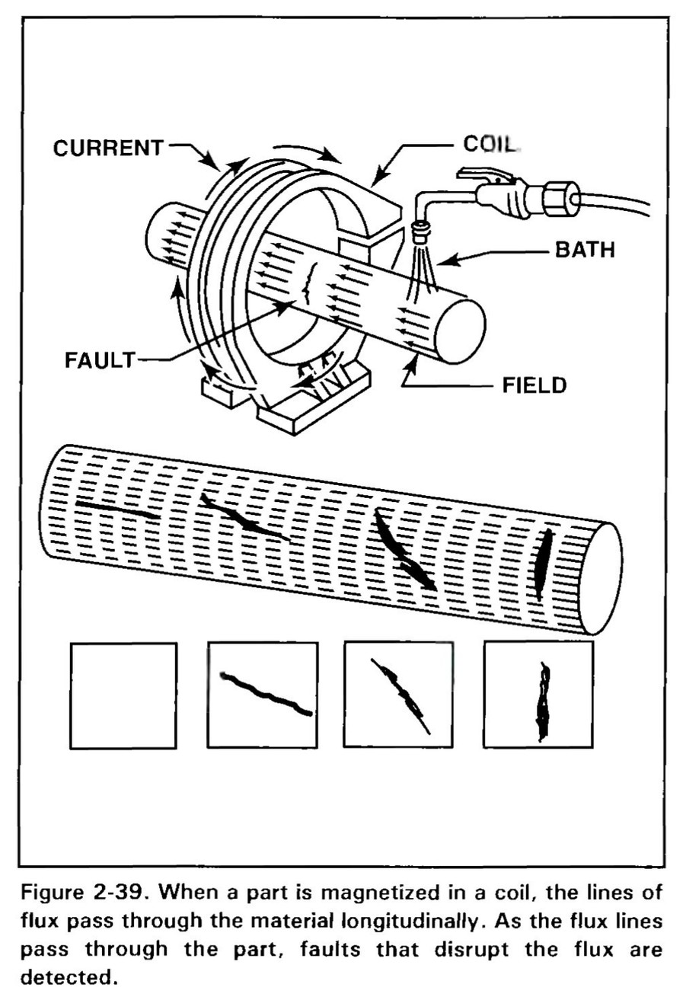
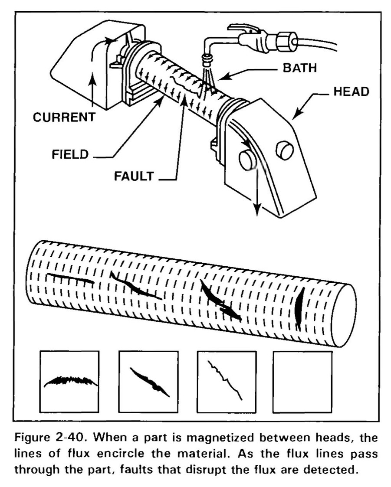
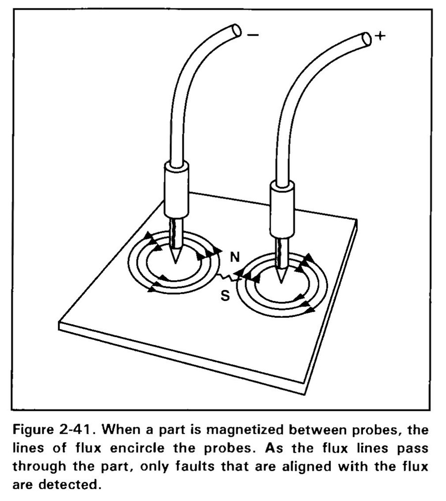
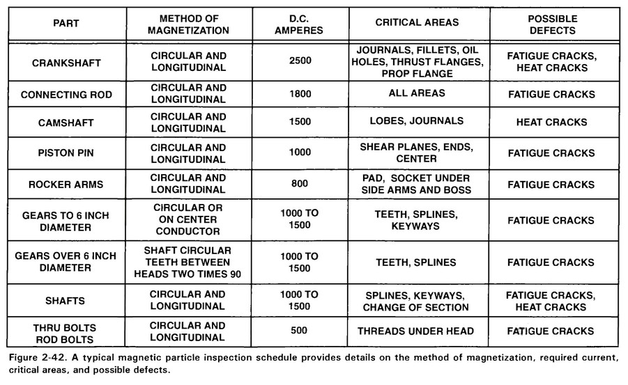
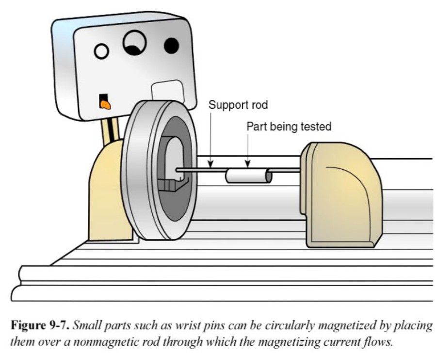
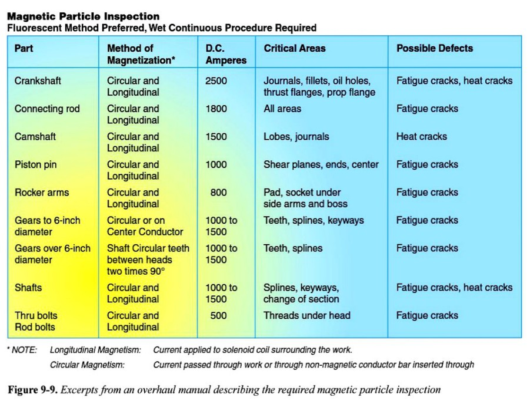
- A. 철계(ferrous) 재료ferrous materials
- B. 비철 금속만nonferrous metals only
- C. 모든 금속all metals
액체침투탐상(Liquid Penetrant Inspection) 심화 📙 Jeppesen 정독
Liquid Penetrant Inspection액체침투탐상은 균열, 다공성, 기타 표면 결함을 찾아내는 비파괴검사 방법입니다. 침투탐상은 모든 금속은 물론 비다공성 플라스틱에도 사용할 수 있습니다. 염색침투탐상은 모세관 인력(capillary attraction)의 원리에 기초합니다. 검사할 부위를 점도가 낮고 표면장력이 낮은 침투액으로 덮고, 표면에 열린 결함 속으로 침투액이 빨려 들어갈 만큼 충분한 시간 동안 부품 표면에 남겨 둡니다.Liquid penetrant inspection is a nondestructive inspection method for locating cracks, porosity, or other types of surface defects. It is usable on all metals as well as nonporous plastics. Dye penetrant inspection is based on the principle of capillary attraction: cover the area to be inspected with a low viscosity, low surface tension penetrating liquid, and allow the penetrant to remain on the surface long enough to be drawn into any fault open to the surface.
그다음 표면의 과잉 침투액을 조심스럽게 제거하고 현상제(developer)를 표면에 덮습니다. 역모세관 작용으로 현상제가 균열이나 다른 결함에서 침투액을 끌어내 현상제 위에 보이는 선을 만듭니다. 결함은 통상 날카롭고 선명한 선으로 나타납니다. 흐릿하거나 불분명한 결과는 현상제를 바르기 전에 부품이 충분히 세척되지 않았을 가능성을 뜻합니다.Carefully remove excess penetrant from the surface, and then cover the surface with a developer agent. By process of reverse capillary action, the developer draws the penetrant out of cracks or other faults and forms a visible line in the developer. A fault is normally indicated by a sharp, clear line. Fuzzy or indistinct results indicate that the part might have been insufficiently cleaned before the developer was applied.
액체침투탐상에는 형광 염료와 유색 염료 두 가지가 쓰입니다. 형광 침투액에는 자외선 램프를 사용해 결함을 보이게 합니다. 유색 염료에서는 결함이 흰색 현상제 위에 유색 선으로 보입니다. 액체침투탐상을 성공적으로 하려면 표면에 그리스, 먼지, 오일이 없어야 합니다. 청결이 확보되어야 침투액이 균열이나 결함 속으로 들어갑니다. 오일과 그리스의 흔적을 모두 제거하는 데는 휘발성 석유계 솔벤트가 가장 효과적입니다. 다만 솔벤트에 손상되는 재료도 있으므로 세척제가 해당 부품에 안전한지 확인해야 합니다. 증기 탈지가 실용적이지 않으면 솔벤트나 강한 세제 용액으로 문질러 세척합니다.Two types of dyes are used: fluorescent and colored. An ultraviolet light is used with a fluorescent penetrant to make faults visible; with colored dye, faults are visible as a colored line on the white developer. Successfully using liquid penetrant requires that the surface be free of grease, dirt, and oil, because cleanliness ensures that the penetrant enters any cracks or faults. A volatile, petroleum-based solvent is most effective for removing all traces of oil and grease. Because some materials are damaged by solvents, take care to ensure the cleaner is safe for the particular part. If vapor degreasing is impractical, clean the part by scrubbing with a solvent or a strong detergent solution.
액체침투탐상 전에 부품을 세척할 때 그릿 블라스트, 스크레이퍼, 와이어 브러시를 사용해서는 안 됩니다. 이런 공구들은 인클루전 과정을 통해 표면의 불연속과 결함을 메워 가려 버릴 수 있습니다. 부품이 깨끗해지면 헹구고 철저히 건조합니다. 침투액은 침지, 스와빙, 브러싱으로 부품 표면에 바를 수 있습니다. 일부 침투액은 국부 검사를 위해 작은 부위에 분무할 수 있는 에어로졸 캔으로 나옵니다.Do not use grit-blast, scrapers, or a wire brush to clean parts before inspection with liquid penetrant. These tools can fill in and obscure surface discontinuities and defects by the process of inclusion. After the part is clean, rinse and dry it thoroughly. Penetrant can be applied by immersion or by swabbing or brushing the solution onto the part's surface. Some penetrant is available in aerosol cans to spray in small areas for a localized inspection.
어떤 적용 방법을 쓰든 제작사가 권장하는 시간 동안 침투액으로 해당 부위를 완전히 덮습니다. 이 시간을 드웰 타임(dwell time)이라 하며, 의심되는 불연속의 크기와 형태에 따라 결정됩니다. 예를 들어 작고 가는 균열은 크고 넓은 균열보다 긴 드웰 타임이 필요합니다. 부품을 가열하면 드웰 타임이 짧아지지만, 부품이 너무 뜨거워지면 침투액이 증발해 버립니다.Whichever application method you use, completely cover the area with the penetrating liquid for the manufacturer's recommended length of time, referred to as dwell time, which is determined by the size and shape of the suspected discontinuities. For example, small, thin cracks require a longer dwell time than large wide cracks. If the part is heated, dwell time decreases, but if the part becomes too hot, the penetrant will evaporate.
침투액 종류에 따라 드웰 타임이 지난 뒤 물, 유화제, 또는 솔벤트로 표면을 세척합니다. 수용성 침투액이 제거하기 가장 쉽습니다. 30~40 psi의 물을 표면에 분무하되, 균열이나 결함에서 침투액이 씻겨 나가지 않도록 노즐을 표면에 대해 45도 각도로 둡니다. 후유화성 침투액(post-emulsifying penetrant)은 수용성이 아니어서 세척을 위해 유화제로 처리해야 합니다. 유화제의 드웰 타임을 조절하면 부품이 흡수하는 침투액의 양이 달라집니다. 목적은 결함 안의 침투액은 남기면서 표면의 침투액은 모두 제거하는 것입니다. 그 밖의 침투액은 솔벤트를 적신 천으로만 표면에서 제거할 수 있습니다. 이때 솔벤트를 표면에 분무하거나 부품을 솔벤트에 담가서는 안 됩니다. 그렇게 하면 결함에서 침투액이 제거되거나 결함 지시를 못 할 정도로 희석되기 때문입니다.Depending on the type of penetrant, after the dwell time has elapsed, clean the surface with water, an emulsifying agent, or a solvent. Water-soluble penetrants are the easiest to remove: spray the surface with water at 30 to 40 p.s.i. and position the nozzle at a 45-degree angle to the surface to avoid washing the penetrant from cracks or faults. Post-emulsifying penetrants are not water-soluble and must be treated with an emulsifying agent for cleaning; varying the dwell time of the emulsifier affects the amount of penetrant a part absorbs, the intent being to remove all of the surface penetrant while leaving the penetrant within a defect. Other penetrants are removable from the surface only with a towel dampened with solvent. Solvent should not be sprayed onto the surface, and the part should not be immersed in solvent; to do so would remove the penetrant from faults or dilute it to a point that prevents fault indication.
부품이 깨끗해지면 현상제를 바릅니다. 결함에서 침투액을 끌어내는 데 쓰이는 현상제는 세 종류이며, 작동 방식은 같지만 적용 방법이 다릅니다. 현상제는 부품을 세척한 직후에 바릅니다. 현상제를 바르기 전에 침투액이 먼저 배어 나오면 결함을 식별하지 못할 수 있습니다. 건식 현상제는 탤컴 같은 분말 재료로, 부품에 달라붙어 표면 결함에서 침투액을 끌어냅니다. 적용하려면 보통 부품을 느슨한 현상제가 담긴 통에 넣습니다. 더 큰 구성품에는 부드러운 브러시로 분말을 바르거나 파우더 건으로 표면에 뿌립니다. 분말이 권장 시간 동안 표면에 있은 뒤 저압 공기로 과잉분을 제거합니다.After a part is clean, apply the developer. Three types of developers are used to draw penetrants from faults; although they function the same way, application methods differ. Apply developer immediately after cleaning the part; if penetrant bleeds out before the developer is applied, you might not be able to identify defects. A dry developer is a powdery material, such as talcum, that adheres to a part and draws penetrant out of surface faults. To apply it, the part is typically placed in a bin of loose developer. For larger components, dry powder can be applied with a soft brush or blown over the surface with a powder gun. After the powder is on the surface for the recommended time, remove the excess with low-pressure air.
건식 현상제와 함께 쓰이는 침투액은 형광 또는 유색 염료로 처리된 경우가 많습니다. 형광 염료를 쓴 부품은 블랙라이트 아래에서 검사해야 하며, 유색 염료 침투액은 블랙라이트가 필요 없습니다. 습식 현상제를 쓴다면 부품이 세척되는 즉시 바릅니다. 습식 현상제에서는 흰 분말을 물과 섞어 표면에 흘리거나 부품을 현상액에 담급니다. 부품을 공기 건조시킨 뒤 건식 현상제와 같은 방식으로 검사합니다. 가장 흔히 쓰이는 현상제는 솔벤트에 분산된 분말로, 압력 분무 캔으로 바릅니다. 부품이 마르면 얇고 축축한 현상제 층을 분무합니다. 현상제는 빠르게 마르면서 결함에서 침투액을 끌어냅니다. 침투액이 현상제를 착색하며, 염료 종류에 따라 자연광 또는 블랙라이트로 보입니다.The penetrant used with a dry developer is often treated with a fluorescent or colored dye. Parts using the fluorescent dye must be examined under a black light; colored dye penetrants do not require a black light. If you are using a wet developer, apply it as soon as the part is cleaned: the white powder is mixed with water and flowed over the surface, or the part is immersed in the developer solution. Air-dry the part and inspect it the same way as with dry developer. The most commonly used developer is a powder suspended in solvent, applied from a pressure spray can. When dry, spray a thin moist coat of developer on the part; the developer dries rapidly and draws penetrant from a fault. The penetrant stains the developer and, depending on the dye, is visible with natural or black light.
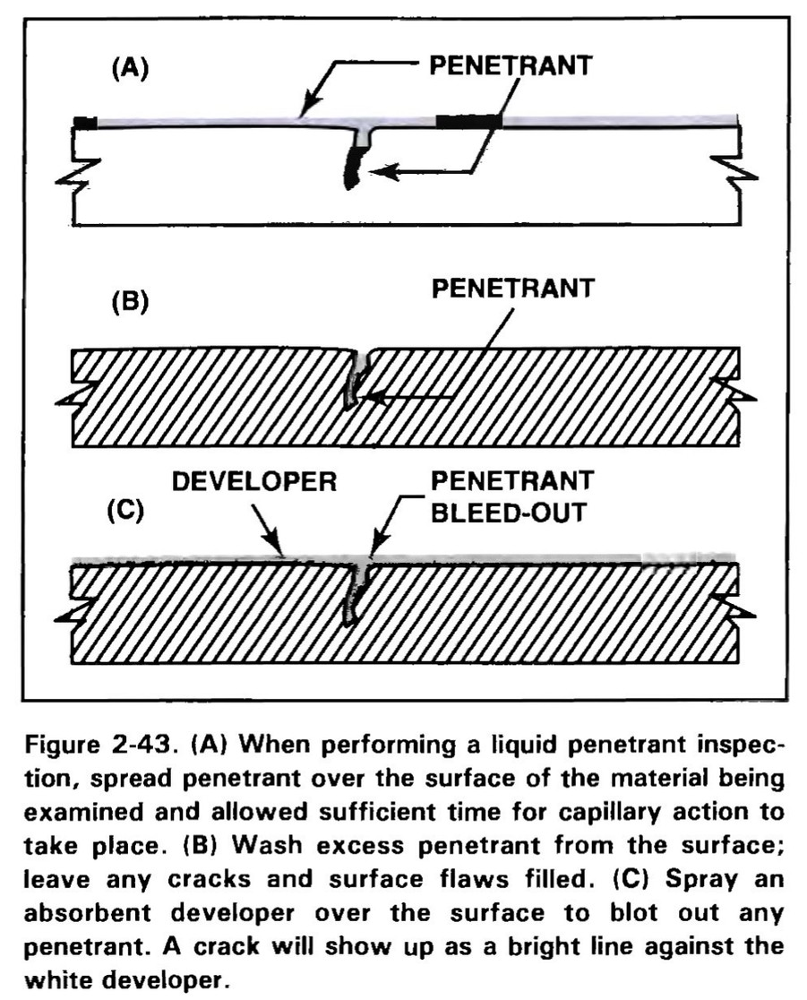
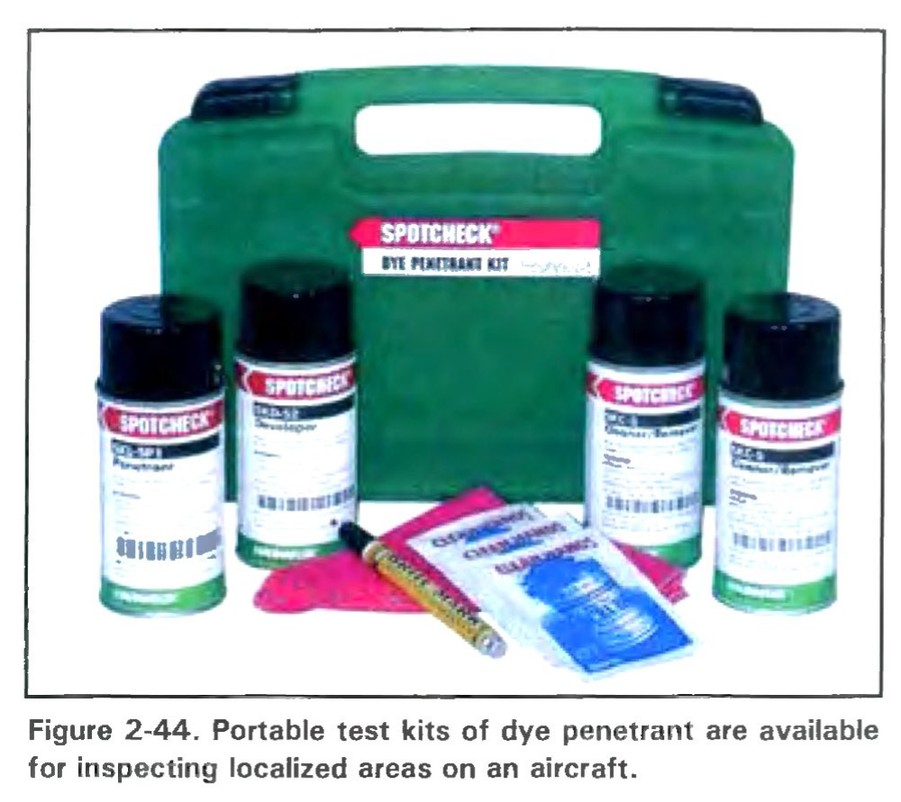
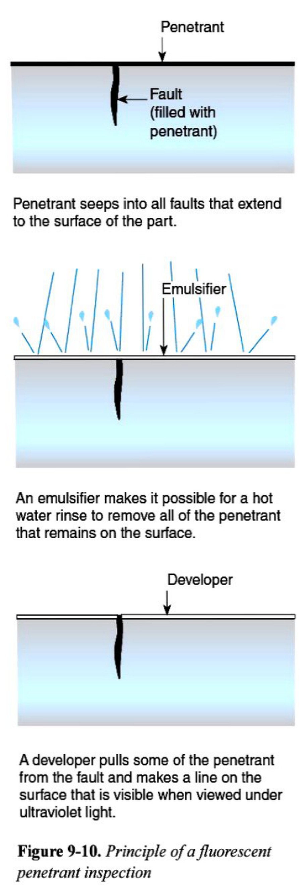
- A. 두꺼운 부품에는 쓸 수 없다It cannot be used on thick parts
- B. 표면에 열린 결함만 찾을 수 있다It finds only defects open to the surface
- C. 철계 재료에만 쓸 수 있다It works only on ferrous materials
와전류·초음파·방사선 검사 심화 📙 Jeppesen 정독
Eddy Current, Ultrasonic, and Radiographic Inspection와전류 검사는 부품 준비가 거의 또는 전혀 필요 없고 대부분의 금속에서 표면 및 표면 아래 결함을 검출할 수 있는 시험 방법입니다. 나아가 모재 금속과 합금을 구별할 수 있고 금속의 열처리 상태도 구별할 수 있습니다. 와전류 검사는 전류 수용성(current acceptance) 원리에 기초합니다. 시험장비는 재료가 유도 전류를 얼마나 쉽게 받아들이는지를 측정합니다. 공극이나 결함의 존재 외에 시험에 영향을 주는 요소로는 재료의 전도율, 투자율, 질량이 있습니다. 와전류는 유도된 전자기장의 영향 아래 전기적으로 전도성 있는 재료를 통해 흐릅니다.Eddy current inspection is a testing method that requires little or no part preparation and can detect surface and subsurface flaws in most metals. Furthermore, it can differentiate among base metals and alloys, as well as a metal's heat treat condition. Eddy current inspection is based on the principle of current acceptance: the test equipment measures the ease with which a material accepts induced current. In addition to the presence of voids or faults, the factors that affect the test are material conductivity, permeability, and mass. Eddy currents flow through electrically conductive material under the influence of an induced electromagnetic field.
초음파 검사 장비는 트랜스듀서를 통해 증폭된 신호를 재료로 보냅니다. 트랜스듀서가 시험 재료를 특정 주파수로 진동시키고, 신호가 재료의 반대편에 도달하면 되튀어 나와 트랜스듀서가 수신하며 CRT나 LCD 화면에 표시됩니다.Ultrasonic inspection test equipment sends an amplified signal through a transducer to the material. The transducer causes the test material to vibrate at a given frequency; upon reaching the back side of the material, the signals bounce back, are received by the transducer, and displayed on the CRT or LCD screen.
방사선 검사는 구조물의 내부를 사진으로 찍습니다. 시험장비는 전자기 스펙트럼의 X선과 감마선 대역에서 나오는 높은 에너지를 이용합니다. 이 광선들이 갖는 에너지의 양은 파장에 반비례합니다. 다시 말해 파장이 짧을수록 에너지가 큽니다. 이들은 전하나 질량이 없고 직선으로 빛의 속도로 진행하며 물질을 투과할 수 있습니다. 투과 깊이는 광선의 에너지에 좌우됩니다.Radiographic inspection photographs the inside of a structure. The test equipment uses high energy from the x-ray and gamma ray bands of the electromagnetic spectrum. The amount of energy these rays contain is related inversely to their wavelength; in other words, the shorter the wavelength, the greater its energy. They have no electrical charge or mass, travel in straight lines at the speed of light, and are able to penetrate matter. The depth of penetration is dependent upon the ray's energy.
X선과 감마선의 어떤 특성들은 비파괴검사에 특히 유용합니다. 두 종류의 광선 모두 통과하는 물질에 흡수되며, 흡수량은 재료의 밀도에 비례합니다. 또한 X선과 감마선은 특정 물질을 이온화시키기 때문에, 사진 필름을 노광시키는 데 사용하면 영구적인 기록을 만들 수 있습니다.Certain characteristics of x-rays and gamma rays make them especially useful for nondestructive inspection. Both types of rays are absorbed by the matter through which they pass; the amount of absorption is proportional to the density of the material. Furthermore, because x-rays and gamma rays ionize certain materials, they can create a permanent record when used to expose photographic film.
치수검사 기초와 끼워맞춤 표기 심화 📙 Jeppesen 정독
Dimensional Inspection Basics and Fit Notation엔진 부품이 구조적으로 건전하다고 판단한 뒤에는 부품을 측정해 제작사 규격의 허용치와 비교해야 합니다. 통상적인 오버홀교범에는 신품과 사용 가능 부품에 대한 허용치 목록이 실려 있습니다. 치수검사에는 마이크로미터 캘리퍼, 텔레스코핑 게이지, 다이얼 인디케이터 같은 정밀 측정기구가 필요합니다.After you determine that an engine part is structurally sound, you must measure it and compare the measurement with the tolerances in the manufacturer's specifications. The typical overhaul manual contains a list of tolerances for new and serviceable parts. A dimensional inspection requires the use of precision measuring instruments such as micrometer calipers, telescoping gauges, and dial indicators.
많은 경우 오버홀교범에 제시된 값은 실제 부품 치수가 아니라 간극 치수입니다. 이 한계는 한 부품이 다른 부품에 끼워지는 상태를 가리킵니다. 예를 들어 피스톤 핀과 피스톤에 대해 주어진 허용치는 피스톤 핀 보스와 피스톤 핀 사이의 간극을 나타냅니다. 이 간극을 구하려면 피스톤 핀의 외경을 측정한 다음 피스톤의 피스톤 핀 보스 내경을 측정해야 하며, 두 값의 차이가 그 간극입니다.In many cases, the values provided in the overhaul manual are clearance dimensions rather than actual part sizes. The limits refer to the fit of one part in another. For example, the tolerances given for piston pin in piston represent the clearance between the piston pin boss and the piston pin. To determine this clearance, you must measure the piston pin's outside diameter and then the inside diameter of the piston pin boss; the difference between these two values represents the clearance.
사용 가능 한계 값 뒤에 붙는 대문자 L은 헐거운 끼워맞춤(loose fit)을 뜻합니다. 예를 들어 피스톤 핀과 피스톤의 사용 가능 한계가 0.013L이라면, 피스톤 핀 보스의 내경이 피스톤 핀의 외경보다 크다는 의미입니다. 반대로 커넥팅 로드 소단부의 부싱처럼 억지 끼워맞춤(interference fit, 또는 tight fit)으로 장착해야 하는 부품은 치수 뒤에 대문자 T로 표시합니다. 모든 억지 끼워맞춤은 부품 조립에 특수 절차나 장비가 필요합니다. 예를 들어 0.0025T에서 0.0050T라는 치수는 부싱이 장착될 구멍보다 2.5천분의 1인치에서 5천분의 1인치만큼 커야 한다는 뜻입니다.A capital L following a serviceable limit denotes a loose fit. For example, the 0.013L serviceable limit for piston pin in piston means that the inside diameter of the piston pin boss is greater than the outside diameter of the piston pin. Conversely, some parts, such as a bushing in the small end of a connecting rod, call for installation with an interference (or tight) fit and are indicated by a capital T following the dimension numbers. All interference fits require special procedures or equipment to assemble the parts; for example, dimension 0.0025T to 0.0050T means that the bushing must be between two-and-a-half to five thousandths of an inch larger than the hole into which it will be installed.
표에 열거된 모든 부품을 측정해 치수가 부품 규격에 부합하는지 판단해야 합니다. 열거된 허용치 안에 들지 않는 부품은 교체하거나 수리합니다. 다만 커넥팅 로드의 부싱처럼 억지 끼워맞춤인 부품은, 부싱 교체가 필요할 만큼 상태가 나쁘지 않은 한 측정할 필요가 없습니다.You must measure all of the parts listed in the table to determine whether their dimensions comply with the part specifications. Replace or repair any part that does not fall within the listed tolerances. Parts with an interference fit, such as a bushing in a connecting rod, do not need to be measured unless their condition requires that the bushing be replaced.
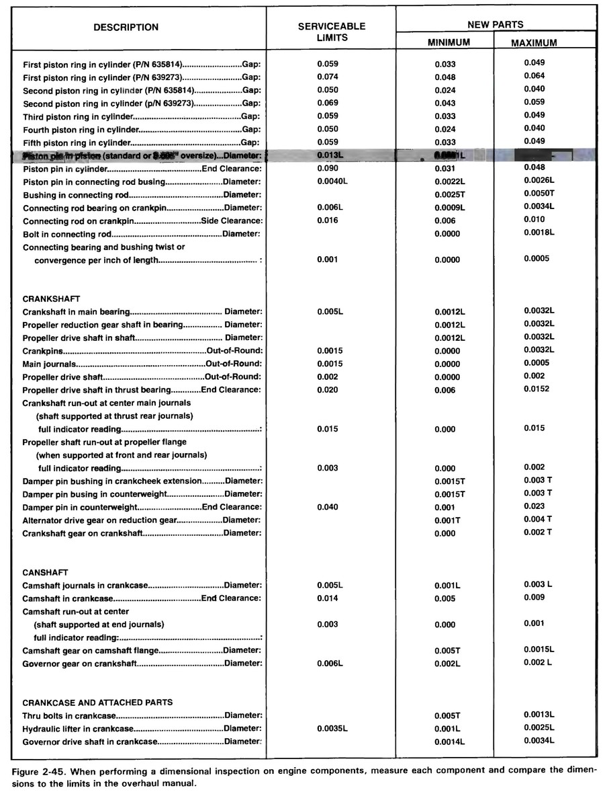
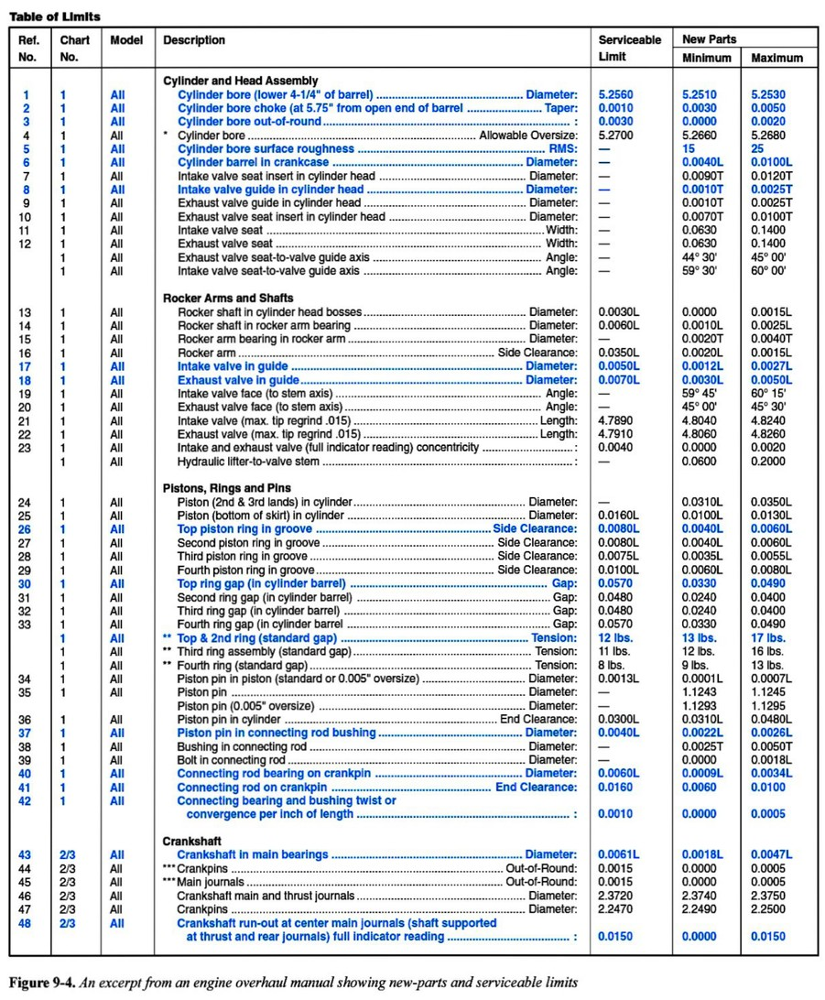
- A. 사용가능 한계는 참고용일 뿐이다the serviceable limit is advisory only
- B. 두 값이 항상 동일하다the two values are always the same
- C. 사용가능 한계로는 통과해도 신품 한계는 넘을 수 있다a dimension acceptable as serviceable may exceed new-part limits
치수검사: 크랭크케이스·크랭크샤프트·커넥팅로드 심화 📙 Jeppesen 정독
Dimensional Inspection: Crankcase, Crankshaft, and Connecting Rods크랭크케이스의 치수검사에는 케이스 반쪽들의 임시 조립이 필요합니다. 예를 들어 주 베어링 간극을 점검하려면 주 베어링 인서트를 크랭크케이스 반쪽에 장착한 뒤 케이스 반쪽을 재조립해 규정 토크로 조여야 합니다. 텔레스코핑 게이지를 각 주 베어링의 내경에 맞춘 뒤 캘리퍼로 측정합니다. 그다음 같은 마이크로미터로 크랭크샤프트 저널을 측정합니다. 두 치수를 알면 끼워맞춤 상태를 판단할 수 있습니다.The dimensional inspection of a crankcase requires temporary assembly of the case halves. For example, to check main bearing clearances, the main bearing inserts must be installed in the crankcase halves and the case halves must be reassembled and tightened to the specified torque. A telescoping gauge is set to the inside diameter of each main bearing and measured with a caliper. Then the crankshaft journals are measured with the same micrometer. When you know both dimensions, you can determine the fit.
크랭크케이스 반쪽을 조립한 상태에서 캠샤프트 베어링 간극도 점검합니다. 많은 엔진에서 캠샤프트 베어링은 크랭크케이스에 직접 기계 가공되어 있어 캠샤프트 베어링 인서트가 없습니다. 캠샤프트 베어링 간극을 점검할 때는 크랭크샤프트 베어링 간극과 같은 절차를 사용합니다.With the crankcase halves assembled, check the camshaft bearing clearances as well. Because the camshaft bearings on many engines are machined into the crankcase, there are no camshaft bearing inserts. To check the camshaft bearing clearances, use the same procedure as crankshaft bearing clearance.
크랭크샤프트는 치수검사가 필요한 부위가 여러 곳입니다. 주 베어링 저널은 통상 마이크로미터 캘리퍼로 측정하며, 이는 크랭크케이스 내 크랭크샤프트 저널과 주 베어링 사이의 간극을 구하는 과정의 일부입니다. 여기에 더해 로드 베어링 저널도 로드 베어링 저널 간극을 구하면서 마이크로미터 캘리퍼로 점검합니다.A crankshaft has several areas that require dimensional inspection. Main bearing journals are normally measured with a micrometer caliper as part of the process to determine crankshaft journal-to-main bearing clearances in the crankcase. Additionally, rod bearing journals are checked with a micrometer caliper while determining rod bearing journal clearance.
또 다른 크랭크샤프트 치수검사는 크랭크샤프트 런아웃(runout)입니다. 런아웃을 점검하려면 오버홀교범에 명시된 위치에서 크랭크샤프트를 V블록 위에 지지합니다. 다이얼 인디케이터를 영점 조정해 크랭크샤프트를 따라 여러 지점에 대고 크랭크샤프트를 회전시킵니다. 총 런아웃은 다이얼 인디케이터에서 영점 위와 아래로 나타난 지시값의 합입니다. 런아웃이 제작사 한계표에 주어진 치수를 초과하면 크랭크샤프트를 교체해야 합니다. 휘어진 크랭크샤프트를 펴려고 시도하거나 베어링 저널의 질화 표면을 손상시킬 수 있는 어떤 수리도 시도해서는 안 됩니다.Another crankshaft dimensional inspection is crankshaft runout. To check for runout, a crankshaft is supported on vee-blocks at locations specified in the overhaul manual. A dial indicator is zeroed and placed at points along the crankshaft and the crankshaft is rotated. Total runout is the sum of indications over and under zero on the dial indicator. If the runout exceeds the dimensions given in the manufacturer's table of limits, the crankshaft must be replaced. No attempt should be made to straighten a bent crankshaft or attempt any other repair that might damage the nitrided surface of a bearing journal.
커넥팅 로드는 비틀림(twist)과 수렴(convergence)을 점검합니다. 비틀림을 확인하려면 커넥팅 로드의 양쪽 끝에 아버(arbor)를 끼우고 그 아버들을 평행 블록 위에 놓습니다. 두께 게이지로 아버와 평행 블록 사이의 틈을 측정하며, 비틀림의 양은 끼워 넣을 수 있는 게이지의 두께로 결정됩니다.Check connecting rods for twist and convergence. To check for twist, insert arbors into each end of a connecting rod and position the arbors across parallel blocks. Using thickness gauges, measure for any space between the arbors and the parallel blocks; the amount of twist is determined by the thickness of the gauge that can be inserted.
수렴을 판단하려면 커넥팅 로드 양쪽에서 큰 아버와 작은 아버 사이의 차이를 측정합니다. 평행도 게이지(parallelism gauge)를 큰 아버의 한쪽 끝에 부착하고, 게이지가 작은 아버에 닿도록 조정합니다. 그다음 평행도 게이지를 아버의 반대쪽으로 옮깁니다. 양쪽에서 게이지가 똑같이 맞지 않으면 두께 게이지로 그 차이, 즉 수렴량을 구합니다. 사용 가능 한계를 넘어 비틀리거나 휜 로드는 반드시 교체해야 합니다. 교체가 필요할 때는 진동을 최소화하기 위해 새 로드의 무게를 마주 보는 로드와 0.5온스 이내로 맞춰야 합니다.Measure any difference between the large and small arbors on both sides of a connecting rod to determine convergence. Attach a parallelism gauge to one end of the large arbor and adjust it to touch the small arbor. Then move the parallelism gauge to the other side of the arbor. If the gauge does not fit the same on both sides, determine the convergence (difference) with a thickness gauge. Any rods that are twisted or bent beyond serviceable limits must be replaced. When replacement is necessary, the weight of the new rod should be matched within one-half ounce of its opposite rod to minimize vibrations.
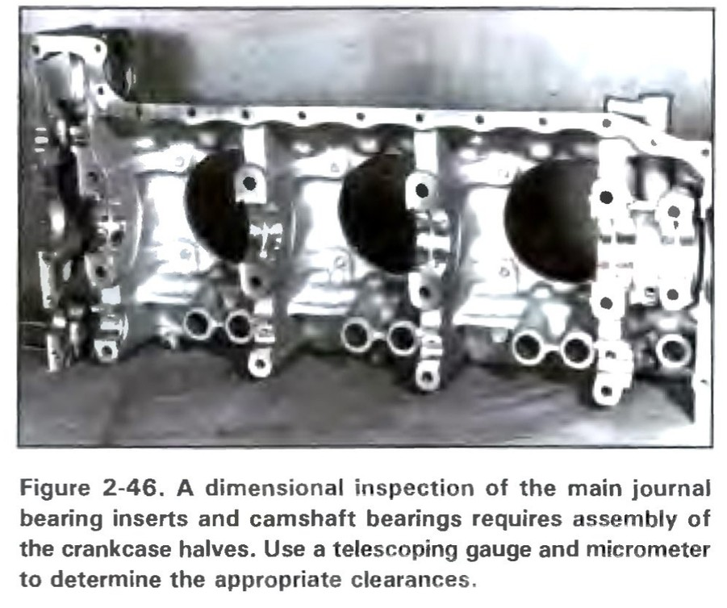
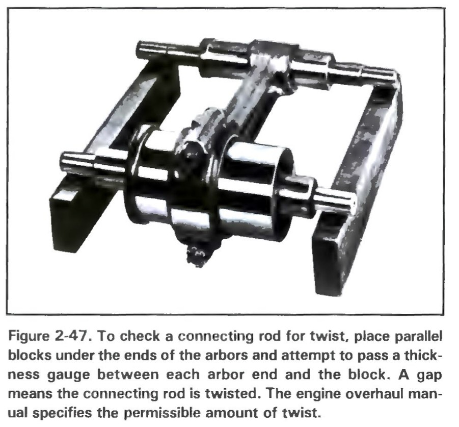
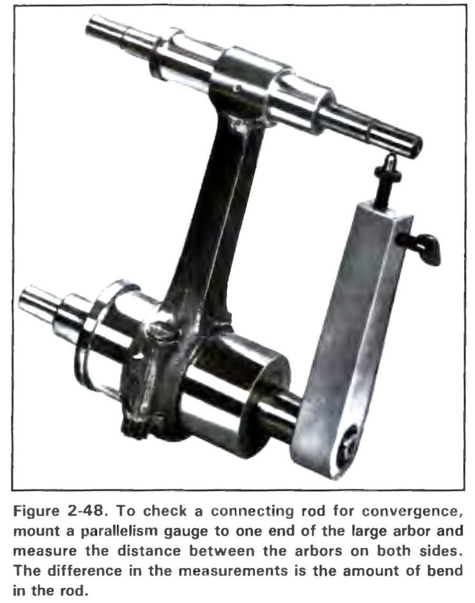
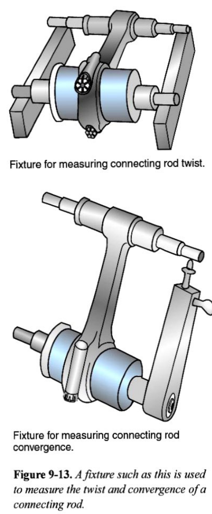
치수검사: 피스톤·링·피스톤핀·실린더 심화 📙 Jeppesen 정독
Dimensional Inspection: Pistons, Rings, Piston Pins, and Cylinders헤드가 평평한 피스톤은 직선자와 두께 게이지로 치수를 점검해야 합니다. 피스톤 헤드 상부에 비정상적인 함몰이 있다면 디토네이션에 의한 것일 수 있습니다. 그렇다면 핀 보스 주변과 피스톤 헤드와 벽이 만나는 부위에 응력 균열이 생겼을 가능성이 있으므로 그 피스톤은 폐기해야 합니다. 피스톤의 외경은 마이크로미터로 피스톤 스커트와 각 링 랜드에서 측정합니다. 이 측정값은 나중에 실린더 보어 치수를 점검해 피스톤과 실린더 간극을 구할 때 사용하므로 기록해 둡니다.Pistons with flat heads should be dimensionally checked with a straightedge and a thickness gauge. The presence of an abnormal depression in the top of a piston might have been caused by detonation; if so, the piston should be discarded due to possible stress cracks around the pin bosses and at the junction of the piston head and walls. Measure the outside diameter of a piston with a micrometer at the piston skirt and at each ring land. Record these measurements for later use when checking cylinder bore dimensions to determine piston to cylinder clearance.
피스톤 외에 피스톤 링도 치수를 점검해야 합니다. 각 피스톤 링마다 엔드 갭 간극과 사이드 클리어런스를 측정합니다. 엔드 갭(end gap)은 링을 실린더에 장착한 뒤 링의 양 끝 사이의 공간입니다. 사이드 클리어런스(side clearance)는 피스톤 링과 그에 대응하는 링 랜드 사이의 공간입니다. 엔드 갭은 링을 실린더 배럴에 넣고 피스톤으로 실린더에 대해 직각이 되게 맞춘 뒤 측정합니다. 링이 자리를 잡으면 두께 게이지로 링 양 끝 사이의 틈을 측정하며, 갭이 규정에 맞으면 그 링을 해당 실린더에 사용할 수 있습니다.In addition to the pistons, the piston rings must be dimensionally checked. For each piston ring, measure the end gap clearance and side clearance. End gap is the space between the two ends of a piston ring after it is installed in a cylinder. Side clearance is the space between a piston ring and its associated ring land. Measure end gap by placing a ring into a cylinder barrel and squaring it to the cylinder with a piston. After the ring is in position, use a thickness gauge to measure the gap between the ends of the ring; if the gap is correct, the ring can be used in that cylinder.
피스톤 링의 사이드 클리어런스를 확인하려면 각 피스톤 링을 제 홈에 넣고 두께 게이지로 링과 랜드 사이의 간극을 측정합니다. 테이퍼 링이 장착되어 있다면 피스톤 옆면에 직선자를 대어 링을 홈에 반듯하게 잡아 준 상태에서 측정합니다.To check a piston ring's side clearance, place each piston ring in its proper groove and measure the clearance between the ring and land with a thickness gauge. If tapered rings are installed, hold a straightedge against the side of the piston to hold the rings squarely in their grooves.
피스톤 핀은 여러 가지 치수 점검을 받습니다. 피스톤 핀과 피스톤 핀 보스 보어 사이의 간극을 구하는 과정의 일부로 피스톤 핀의 외경을 측정합니다. 보어 치수에서 피스톤 핀 직경을 빼면 피스톤 핀 대 보어 간극이 나옵니다. 피스톤 핀의 직진도는 핀을 V블록에 올려놓고 다이얼 인디케이터로 런아웃을 측정해 확인합니다. 일부 오버홀교범은 피스톤 핀과 실린더 벽 사이의 엔드 클리어런스 점검도 요구합니다. 이때 피스톤 핀의 길이를 캘리퍼로 측정해 실린더 보어 치수와 비교해야 합니다.Piston pins receive several dimensional checks. As part of determining the clearance between a piston pin and the bore of the piston pin boss, measure the outside diameter of the piston pin; by subtracting the piston pin diameter from the bore dimension, the piston pin-to-bore clearance is obtained. Check a piston pin for straightness by placing it on vee-blocks and measuring runout with a dial indicator. Some overhaul manuals also require you to check end clearance between the piston pin and the cylinder wall; the length of a piston pin must be measured with a caliper and compared with the cylinder bore dimensions.
실린더 배럴의 마모를 점검하려면 실린더 보어 게이지, 텔레스코핑 게이지와 마이크로미터, 또는 내경 마이크로미터를 사용할 수 있습니다. 실린더 배럴 측정값으로 실린더 테이퍼, 진원도 이탈, 보어 직경 마모, 피스톤 스커트와 실린더 사이의 끼워맞춤을 계산할 수 있습니다. 실린더 배럴의 각 측정은 90도 떨어진 두 위치에서 실시해야 합니다.To check cylinder barrels for wear, you can use a cylinder bore gauge, a telescoping gauge and a micrometer, or an inside micrometer. Cylinder barrel measurements enable you to calculate cylinder taper, out-of-roundness, bore diameter wear, and the fit between piston skirt and cylinder. Each measurement in a cylinder barrel should be taken in two positions, 90 degrees apart.
실린더 테이퍼는 실린더 상부와 하부의 직경 차이입니다. 실린더의 자연스러운 마모 패턴은 온도, 압력, 침식 조건이 가장 심한 실린더 상부의 직경이 더 커지는 결과로 나타나는 경우가 많습니다. 다만 일부 실린더는 의도적인 테이퍼, 즉 초크(choke)를 갖도록 설계되어 있다는 점을 유념해야 합니다. 그런 경우에는 마모와 의도된 테이퍼를 구별하도록 주의합니다. 마모로 테이퍼에 단이 생겼다면 정확한 측정값을 얻기 위해 측정 시 신중을 기해야 합니다.Cylinder taper is the difference between the diameters at the top and at the bottom of a cylinder. The natural wear pattern of a cylinder often results in a larger diameter at the top where the temperature, pressure, and erosive conditions are most intense. Keep in mind that some cylinders are designed with an intentional taper, or choke; in such a case, be careful to distinguish wear from intentional taper. If wear has created a step in the taper, you must exercise care while making measurements to achieve accurate readings.
진원도 이탈을 검사할 때는 실린더 상부에서 측정합니다. 또한 실린더 스커트에서도 측정해 부주의한 취급으로 생긴 찍힘이나 기타 손상을 검출합니다. 실린더 플랜지의 휨(warpage)도 점검해야 합니다. 이 시험을 하려면 실린더를 적절한 지그에 올리고 지그와 플랜지 사이에 두께 게이지를 통과시켜 플랜지 둘레 여러 지점에서 틈이 있는지 확인합니다.When inspecting for an out-of-round condition, measure at the top of the cylinder. Additionally, measure at the cylinder skirt to detect dents or other damage caused by careless handling. Also, check a cylinder's flange for warpage; to carry out this test, place the cylinder on the appropriate fixture and use a thickness gauge to check for gaps between the fixture and flange at several points around the flange.
실린더에 필요한 또 다른 치수검사는 밸브 가이드 마모와 과도한 간극 점검입니다. 밸브 가이드의 내경은 스몰 홀 게이지와 마이크로미터로 점검합니다. 스몰 홀 게이지를 밸브 가이드 안에 넣고 꼭 맞을 때까지 확장한 뒤, 게이지를 빼내 마이크로미터로 측정합니다. 이 검사는 제작사가 제공하는 최대 마모 게이지(고-노고 게이지라고도 함)로 수행하는 경우도 있습니다. 이 게이지를 밸브 가이드의 어느 쪽 끝에든 넣을 수 있으면 그 가이드는 사용 가능 한계를 넘어 마모된 것입니다.Another dimensional inspection required on a cylinder checks for valve guide wear and excessive clearance. The inside diameter of a valve guide is checked with a small hole gauge and micrometer: place the small hole gauge inside the valve guide and expand it until it fits snugly, then remove the hole gauge and measure it with a micrometer. Sometimes this inspection is accomplished with a maximum wear gauge (also called a go-no-go gauge) provided by the manufacturer; the valve guide is worn beyond serviceable limits if you can insert the gauge into either end of the valve guide.
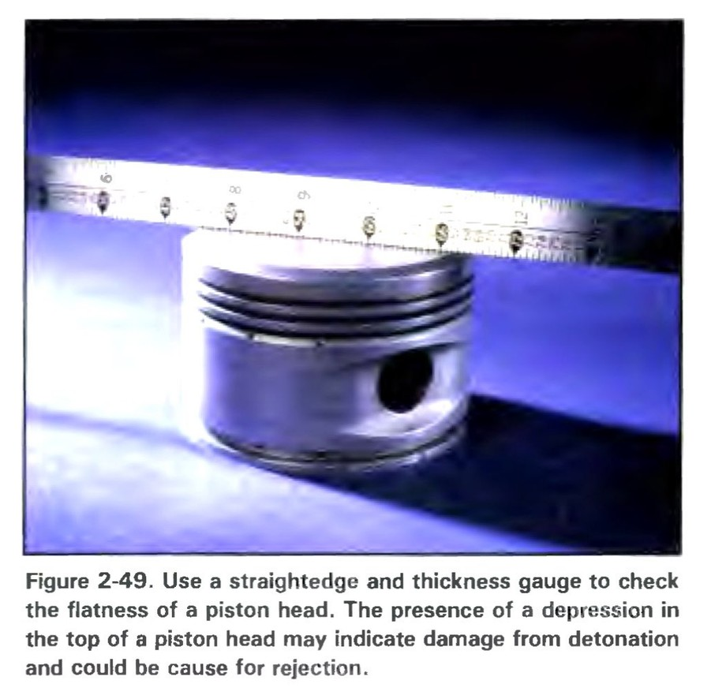
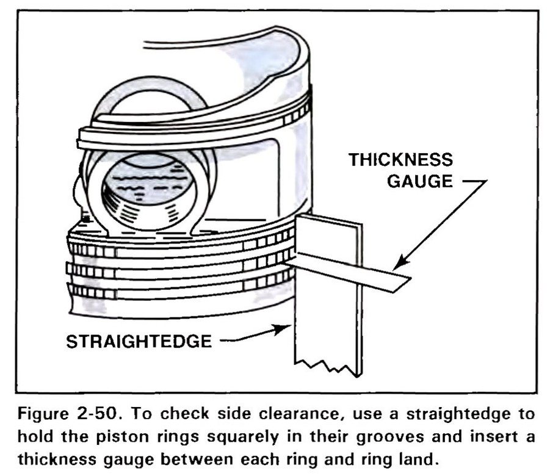
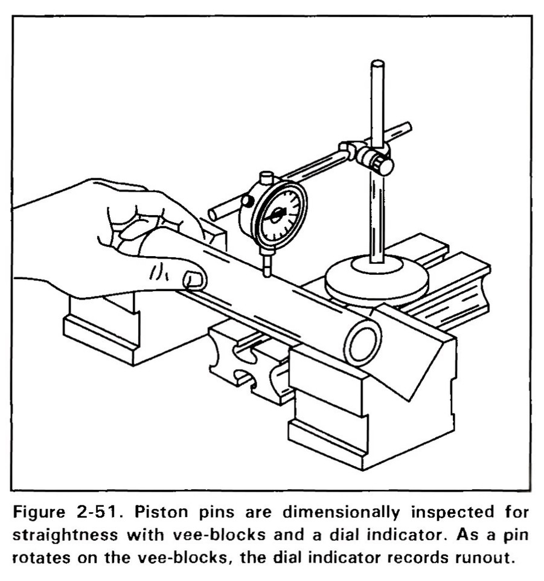
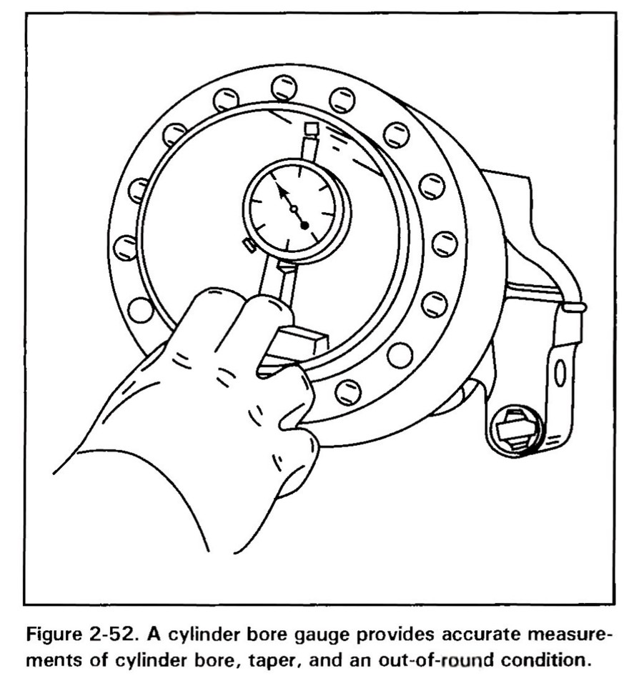
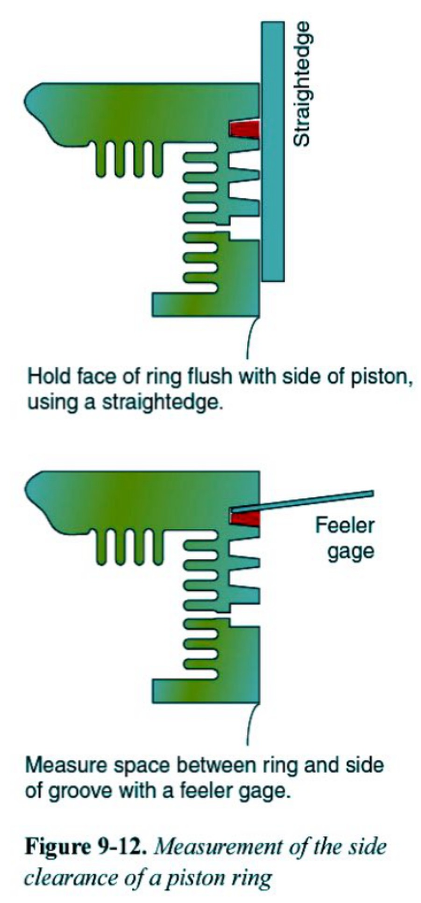
치수검사: 캠샤프트·밸브·스프링·로커·오일펌프 하우징 심화 📙 Jeppesen 정독
Dimensional Inspection: Camshaft, Valves, Springs, Rockers, and Oil Pump Housing캠샤프트 베어링 저널의 치수는 크랭크케이스 내 캠샤프트와 캠샤프트 베어링 사이의 간극을 점검할 때 측정합니다. 여기에 더해 오버홀교범이 로브의 테이퍼를 규정하고 있다면, 테이퍼가 한계 내에 있는지 판단하기 위한 치수 점검을 해야 합니다. 크랭크샤프트와 마찬가지로 캠샤프트도 V블록에 올려놓고 다이얼 인디케이터로 런아웃을 측정해 직진도를 점검합니다. 측정값이 사용 가능 한계를 초과하면 캠샤프트를 교체합니다.The dimensions of camshaft bearing journals are measured when checking clearances between the camshaft and camshaft bearings in the crankcase. In addition, if an overhaul manual specifies a taper on the lobes, you must make a dimensional check to determine if the taper is within limits. As with a crankshaft, you check a camshaft for straightness by placing it on vee-blocks and measuring the runout with a dial indicator. If the readings exceed serviceable limits, replace the camshaft.
밸브, 밸브 스프링, 로커암, 로커 샤프트는 사용 가능 한계를 넘어 마모된 부품을 찾아내기 위해 반드시 측정해야 합니다. 밸브는 상당한 열과 인장을 받기 때문에 각 밸브에 대한 철저한 치수검사가 필수적입니다. 반드시 점검해야 할 상태 중 하나가 밸브 스트레치(valve stretch), 즉 밸브 스템이 늘어나는 현상입니다. 밸브의 늘어남을 확인하려면 컨투어 게이지(또는 반경 게이지)를 밸브 헤드 아랫면을 따라 대고 맞춤 상태를 평가합니다.Valves, valve springs, rocker arms, and rocker shafts must be measured to detect parts that are worn beyond serviceable limits. Because valves are subjected to substantial heat and tension, a thorough dimensional inspection of each valve is essential. One condition that you must check for is valve stretch, which is a lengthening of the valve stem. To check a valve for stretch, place a contour gauge (or radius gauge) along the underside of the valve head and evaluate the fit.
마이크로미터로 밸브 스템 직경을 여러 곳에서 측정해도 늘어남을 판단할 수 있습니다. 가장 흔히 측정하는 세 곳은 스프링 리테이너 홈 근처의 스템 끝, 스템의 중간, 그리고 스템 넥입니다. 스템 직경이 중앙(또는 넥)에서 양쪽 끝보다 작다면 그 밸브는 늘어났을 가능성이 큽니다.You can also determine stretch by measuring the valve stem diameter at several places with a micrometer. The three most common places to measure are at the end of the stem near the spring retainer groove, at the middle of the stem, and at the stem neck. If the diameter of the stem is smaller at the center (or neck) than it is at either end, the valve has likely stretched.
늘어남 외에 밸브 면(valve face)의 런아웃도 점검해야 합니다. 밸브를 밸브 그라인더의 척에 고정하고 다이얼 인디케이터로 런아웃을 측정합니다. 런아웃이 한계 내이면 밸브 헤드 두께(밸브 마진)를 측정하는 단계로 넘어갑니다. 밸브를 재사용하려면 밸브 스템이 밸브 면과 정확히 동심으로 돌아야 하고 밸브 마진이 제작사 규격 내에 있어야 합니다.In addition to stretch, you must also check the runout of the valve face. Secure the valve in the chuck of a valve grinder and measure the runout with a dial indicator. If the runout is within limits, proceed to measuring the valve head thickness (or valve margin). In order to reuse a valve, the valve stem must run true with the valve face and the valve margin must be within the manufacturer's specifications.
밸브 스프링은 압축력과 소선 직경을 점검합니다. 압축력을 확인하려면 밸브 스프링 테스터로 각 스프링을 특정 높이까지 압축합니다. 스프링을 압축하는 데 필요한 힘을 오버홀교범의 규격과 비교합니다. 스프링의 소선 직경은 작은 캘리퍼로 측정합니다.Check valve springs for compression and wire diameter. To check for compression, use a valve spring tester to compress each spring to a specific height, and compare the force required to compress the spring with the specifications in the overhaul manual. Measure the wire diameter of the spring with a small caliper.
각 로커암 샤프트와 부싱은 간극을 구하기 위해 반드시 측정해야 합니다. 각 로커암 샤프트 부싱의 내경을 작은 텔레스코핑 게이지(또는 홀 게이지)와 마이크로미터로 측정합니다. 그다음 로커암 샤프트의 외경을 마이크로미터로 측정합니다. 두 치수의 차이가 샤프트 대 부싱 간극입니다.Each rocker arm shaft and bushing must be measured to determine clearance. Measure the inside diameter of each rocker arm shaft bushing with a small telescoping gauge (or hole gauge) and micrometer. Next, measure the outside diameter of the rocker arm shaft with a micrometer. The difference between the dimensions is the shaft-to-bushing clearance.
오일 펌프 결합면과 오일 펌프 기어 사이의 거리를 측정하는 것도 중요합니다. 거리를 측정하려면 뎁스 마이크로미터를 사용합니다. 뎁스 게이지의 스핀들을 고정 바와 같은 높이가 되고 마이크로미터 헤드가 영을 가리킬 때까지 후퇴시킵니다. 그다음 바를 오일 펌프 하우징에 가로질러 놓고 스핀들이 오일 펌프 기어에 닿을 때까지 뻗습니다. 마이크로미터 헤드를 읽어 하우징과 기어 사이의 거리를 구합니다.It is important to measure the distance between the oil pump mating surface and the oil pump gears. To measure the distance, use a depth micrometer. Retract the spindle of the depth gauge until it is flush with the fixed bar and the micrometer head reads zero. Then lay the bar across the oil pump housing and extend the spindle until it contacts the oil pump gear. Read the micrometer head to determine the distance between the housing and the gear.
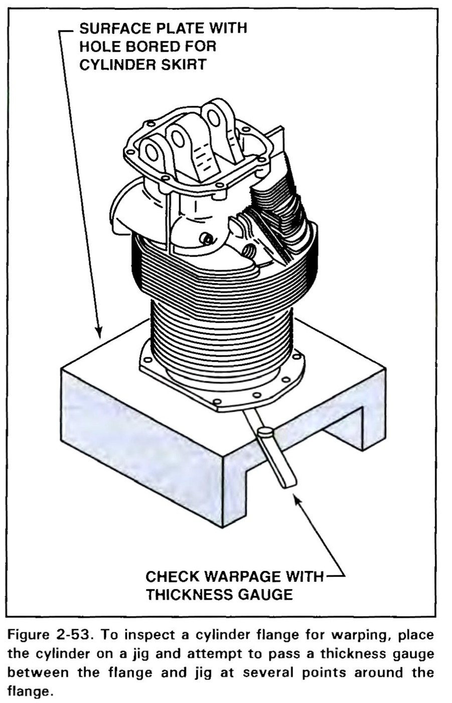
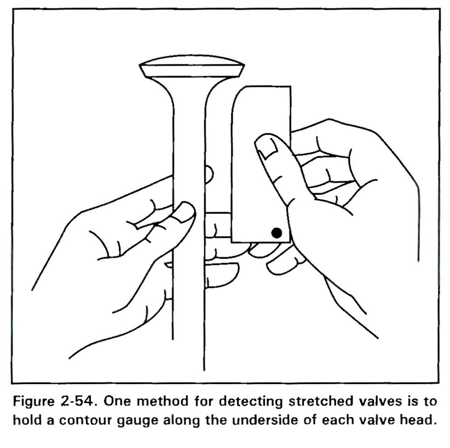
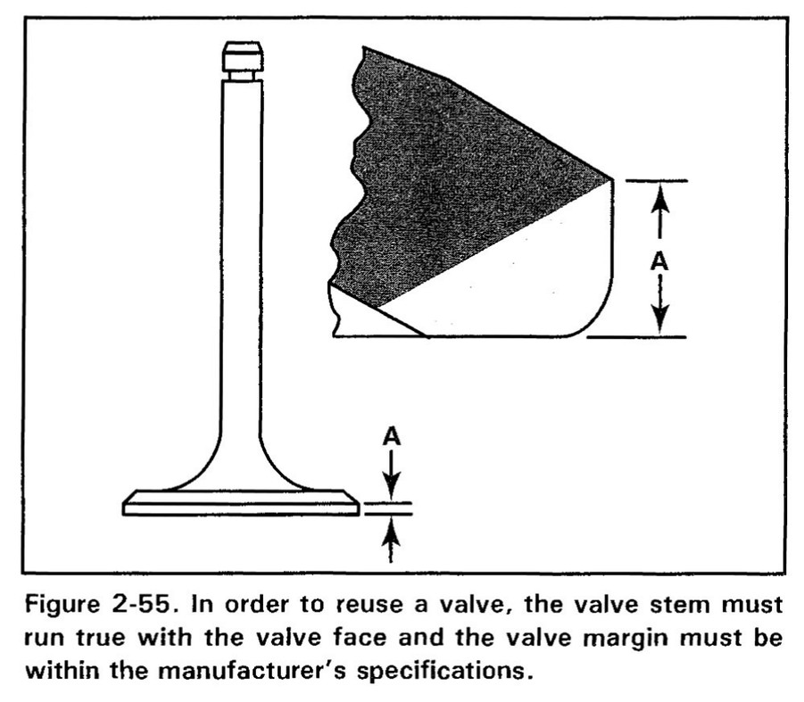
오버홀 수리: 크랭크케이스·크랭크샤프트·로드·피스톤·밸브 심화 📙 Jeppesen 정독
Overhaul Repair: Crankcase, Crankshaft, Rods, Pistons, and Valves육안검사, 구조검사, 치수검사를 마치고 나면 엔진 구성품의 경미한 부적합을 수리할 수 있습니다. 고운 오일 스톤, 크로커스 천, 또는 유사한 연마재를 사용해 버, 닉, 스크래치, 스코어링, 골링을 제거합니다. 작은 닉을 제거하는 데는 스위스 패턴 줄이나 작은 각진 스톤도 쓸 수 있습니다. 휘거나 뒤틀리거나 닉이 생긴 플랜지 면은 정반(surface plate)에 래핑해 수리할 수 있습니다. 결함이 있는 나사산은 적절한 다이나 탭으로 수리할 수 있는 경우도 있지만, 구멍을 너무 깊이 탭 가공해 오버사이즈 탭 구멍을 만드는 일은 피해야 합니다. 저널의 베어링 면에서 골링이나 스크래치를 제거했다면, 사용에 복귀시키기 전에 고운 크로커스 천으로 표면을 높은 수준으로 광택 냅니다. 수리를 마친 뒤에는 부품을 철저히 세척해 연마재를 모두 제거하고, 짝을 이루는 부품과의 적절한 끼워맞춤을 확인합니다.After completing the visual, structural, and dimensional inspections, you can repair minor discrepancies to engine components. Use a fine oil stone, crocus cloth, or similar abrasive substance to remove burrs, nicks, scratches, scoring, or galling. You can also use swiss pattern files or small edged stones to remove small nicks. Flanged surfaces that are bent, warped, or nicked can be repaired by lapping on a surface plate. Sometimes, defective threads can be repaired with a suitable die or tap; however, avoid tapping a hole too deep and creating an oversized tapped hole. If you remove galling or scratches from the bearing surface of a journal, buff the surface to a high finish with fine crocus cloth before returning to service. After completing repairs, clean parts thoroughly to remove all abrasives, then verify proper fit with mating parts.
균열, 손상된 스터드나 나사산, 과도한 베어링 간극은 수리 가능한 크랭크케이스 결함의 예입니다. 균열은 엔진 제작사나 해당 작업에 승인된 인가 수리소만 수리할 수 있습니다. 균열은 불활성가스 용접의 한 형태로 수리합니다. 균열을 용접한 뒤에는 용접 비드를 쇼트 피닝해 응력을 완화하고 나머지 표면과 맞도록 기계 가공합니다. 베어링 캐비티의 손상도 비슷한 방식으로, 용접 후 기계 가공을 거쳐 수리할 수 있습니다.Cracks, damaged studs or threads, and excessive bearing clearances are examples of repairable crankcase defects. Cracks can be repaired only by the engine manufacturer or a certified repair station approved for the task. Cracks are repaired with a form of inert gas welding. After the crack is welded, the weld bead is shot-peened to relieve stress and machined to match the rest of the surface. Damage to a bearing cavity can be repaired in a similar manner, with machining following welding.
캠샤프트는 통상 베어링 인서트 없이 크랭크케이스 안에서 회전합니다. 캠샤프트 베어링의 간극이 과도한 것으로 밝혀지면, 유일한 수리 방법은 베어링을 라인 보링하고 오버사이즈 캠샤프트를 장착하는 것입니다. 검사에서 휘거나 느슨한 스터드가 확인되면 반드시 떼어내고 교체해야 합니다. 표준 크기 스터드가 적절히 맞지 않으면 오버사이즈 스터드를 장착합니다. 오버사이즈 스터드는 색 코드와 스탬핑된 표시로 오버사이즈 정도를 나타냅니다. 크랭크케이스 내부 나사산을 탭으로 수리할 수 없는 경우에는 헬리코일(Heli-Coil) 인서트를 사용할 수 있습니다. 이 인서트는 새 나사산을 제공해 표준 크기 스터드나 하드웨어를 장착할 수 있게 하며, 이런 형태의 수리로 강도가 저하되지는 않습니다.Camshafts normally rotate in the crankcase without bearing inserts. If camshaft bearings are found to have excessive clearances, the only repair is to line-bore the bearings and install an oversized camshaft. If bent or loose studs were identified during inspection, they must be removed and replaced. If standard size studs do not fit appropriately, install oversized studs; oversize studs are identified by a color code and stamped marks to indicate the amount of oversizing. If internal case threads cannot be repaired with a tap, Heli-Coil inserts can be used. These inserts provide new threads, which permit standard size studs or hardware to be installed, and no decrease in strength occurs with this type of repair.
크랭크샤프트 주 저널이나 크랭크핀 표면의 약간의 거칠기는 고운 크로커스 천으로 연마해 제거할 수 있습니다. 크랭크샤프트를 선반에 물리고 광택 낼 표면에 크로커스 천 조각을 감아 돌립니다. 세척을 위해 슬러지 챔버를 떼어냈다면 이 시점에 다시 장착합니다. 크랭크샤프트에 대한 모든 주요 수리는 제작사 또는 해당 작업에 승인된 인가 수리소가 수행해야 합니다. 가능한 수리에는 진원도를 벗어난 크랭크샤프트 주 저널이나 크랭크핀을 허용 가능한 언더사이즈로 연삭하는 것이 포함됩니다. 크랭크샤프트에 연삭을 수행한 경우에는 질화(nitriding) 처리가 필요하며, 크랭크케이스에는 그에 맞는 언더사이즈 베어링 인서트를 장착해야 합니다.Slight roughness on the surface of a crankshaft's main journals or crankpins can be polished away with fine crocus cloth. Turn the crankshaft in a lathe and loop a strip of crocus cloth around the surface to be polished. If sludge chambers were removed for cleaning, reinstall them at this time. All major repairs made on a crankshaft must be done by the manufacturer or a certified repair station approved for the task. Possible repairs include grinding out-of-round crankshaft main journals or crankpins to an acceptable undersize. If grinding is performed on a crankshaft, nitriding is required and the appropriate, undersized bearing inserts must be installed in the crankcase.
커넥팅 로드에 허용되는 유일한 수리는 피스톤 핀 부싱과 크랭크핀 베어링 인서트의 교체입니다. 커넥팅 로드와 피스톤 핀 부싱 사이는 억지 끼워맞춤이므로 아버 프레스와 전용 부싱 장착 드리프트가 필요합니다. 새 부싱을 압입한 뒤에는 오버홀교범에 명시된 치수를 얻기 위해 리밍이 필요합니다. 허용치가 매우 엄격하기 때문에 커넥팅 로드 부싱을 리밍하려면 일반적으로 전용 장비가 필요합니다.The only repairs permitted on a connecting rod are replacement of the piston pin bushing and crankpin bearing inserts. Due to the interference fit between the connecting rod and piston pin bushing, an arbor press and a special bushing installation drift are required. After the new bushing is pressed into place, reaming is required to obtain the dimensions specified in the overhaul manual. Because the tolerances are very tight, special equipment is generally required to ream connecting rod bushings.
피스톤은 오버홀 시 통상적으로 교체합니다. 다만 최근에 장착되었고 한계 내에 있다면 재사용할 수 있습니다. 피스톤에 대한 수리는 제한적이어서 가벼운 스코어링의 제거만 허용됩니다. 피스톤 스커트의 스코어링을 제거할 때는 크로커스 천보다 더 연마성이 강한 것을 사용하지 않습니다. 피스톤의 상단 링 홈 위쪽의 스코어링은, 피스톤 직경이 규정 최소치 아래로 줄어들지 않는 한 기계 가공이나 샌딩으로 제거할 수 있습니다.Pistons are regularly replaced during an overhaul; however, if a piston was only recently installed and is within limits, it may be reused. Repairs to pistons are limited; only the removal of light scoring is allowed. When removing scoring on a piston skirt, use nothing more abrasive than crocus cloth. Scoring above a piston's top ring groove may be removed by machining or sanding as long as piston diameter is not reduced below specified minimums.
피스톤을 재사용하든 새 세트를 장착하든 개별 피스톤의 무게를 맞추는 것이 중요합니다. 허용되는 최대 무게 차이는 제작사의 한계표에 열거되어 있습니다. 새 피스톤은 제작사 최대치보다 상당히 낮은 무게 차이로 맞춰진 세트로 구입하는 경우가 많습니다.Whether you reuse pistons or install a new set, it is important to match the weight of individual pistons. The maximum allowable weight difference is listed in the manufacturer's table of limits. New pistons are often purchased in matched sets with weight differences considerably below the manufacturer's maximum.
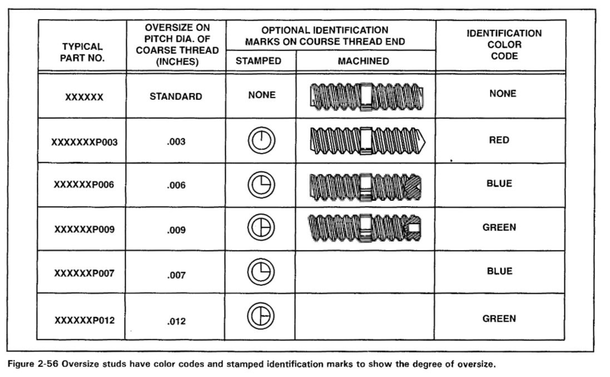
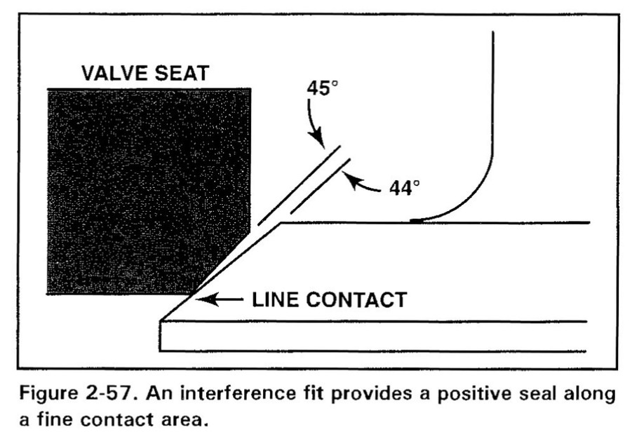
밸브 리페이싱과 간섭각(Interference Fit) 심화 📙 Jeppesen 정독
Valve Refacing and Interference Fit밸브에 충분한 재료가 남아 있으면 연삭으로 리페이싱할 수 있습니다. 습식 밸브 그라인더가 선호되는 리페이싱 방법인데, 수용성 오일과 물의 혼합액이 밸브를 냉각시키고 가공 중 연삭 입자를 씻어 내기 때문입니다. 밸브 연삭기의 조작법은 제작사마다 다르므로, 사용하려는 장비에 익숙해지는 시간을 반드시 갖습니다.If the valve has sufficient material, it can be refaced by grinding. A wet valve grinder is the preferred method of refacing because a mixture of soluble oil and water cools the valve and removes grinding particles while machining. The operation of valve grinding machines varies depending on the manufacturer, so always take time to familiarize yourself with the equipment you intend to use.
밸브를 연삭하기 전에 다이아몬드 드레서를 숫돌 위로 지나가게 해, 숫돌을 바로잡고 깨끗하게 만들 만큼만 깊이 깎아 냅니다. 오버홀교범 규격에 따라 가동 헤드를 올바른 밸브 면 각도로 설정합니다. 밸브는 보통 30도 또는 45도의 표준 각도로 연삭합니다. 다만 표준 각도보다 0.5도에서 1.5도 작은 간섭각(interference fit)이 요구되는 경우도 있습니다. 간섭각은 매우 좁은 접촉면으로 확실한 실을 만들어 줍니다. 밸브에 작용하는 스프링 힘이 아주 작은 면적에 집중되기 때문에 더 단단한 실이 형성됩니다.Before grinding a valve, run a diamond dresser across the stone; cut just deep enough to true and clean the stone. Follow the overhaul manual specifications to set the movable head for the correct valve face angle. Valves are usually ground to a standard angle of 30 degrees or 45 degrees. However, sometimes an interference fit from 0.5 degree to 1.5 degrees less than the standard angle might be required. An interference fit provides a positive seal with an extremely narrow contact surface; because the spring force on the valve is concentrated in a very small area, a tighter seal is provided.
밸브를 척에 물릴 때는 밸브 면이 척에서 약 2인치 떨어지도록 넣습니다. 밸브가 이보다 더 튀어나오면 과도한 흔들림이 생길 수 있습니다. 그라인더를 시동하기 전에 숫돌을 가로지르는 밸브 면의 이동 범위를 확인합니다. 밸브가 양쪽에서 숫돌을 완전히 지나가되 스템에는 닿지 않도록 안쪽과 바깥쪽 이동 스톱을 모두 조정합니다.Insert the valve into the chuck with the valve face approximately two inches away from the chuck. If the valve extends beyond this distance, excessive wobbling may occur. Prior to starting the grinder, check the travel of the valve face across the stone. Adjust both the in and out travel stops so that the valve completely passes the stone on both sides but does not contact the stem.
밸브를 척에 위치시킨 상태에서 그라인더를 시동하고 연삭액이 밸브 면 위로 흐르게 합니다. 밸브 픽스처가 달린 워크헤드 테이블을 끝까지 뒤로 뺀 다음, 옆으로 조정해 밸브가 숫돌 바로 앞에 오게 합니다. 밸브를 숫돌 쪽으로 천천히 전진시켜 접촉시킵니다. 연삭음의 세기가 숫돌이 깎아 내는 절삭량을 알려 줍니다. 절삭량을 늘리지 않으면서 밸브를 숫돌의 전체 폭에 걸쳐 천천히 앞뒤로 움직입니다. 연삭음이 줄어들거나 멎으면 그 절삭은 끝난 것입니다. 그다음 워크헤드 테이블을 후방 스톱으로 옮깁니다.With the valve positioned in the chuck, start the grinder and direct the flow of grinding fluid over the valve face. Back the workhead table (with the valve fixture) all the way out; then adjust laterally to position the valve directly in front of the stone. Advance the valve toward the stone slowly until it makes contact. The intensity of the grinding sound indicates the size of cut being made by the stone. Slowly draw the valve back and forth across the full width of the stone without increasing the cut. When the grinding sound diminishes or ceases the cut is complete. Move the workhead table to the aft stop.
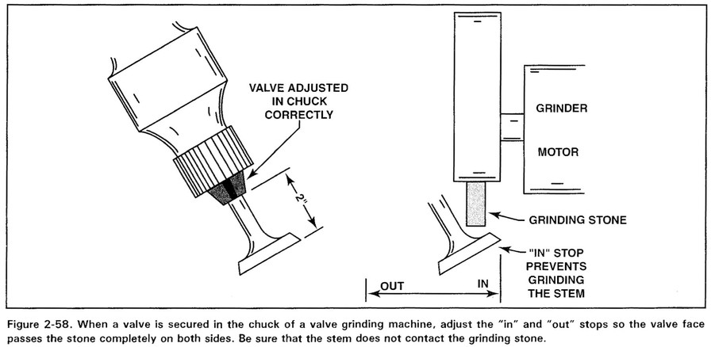
- A. 밸브를 냉각하고 연삭 입자를 씻어내기 때문cools the valve and washes away grinding particles
- B. 연삭 속도를 높이기 때문increases the grinding rate
- C. 숫돌 수명을 늘리기 때문extends stone life
밸브 연삭 실무와 페더 에지 심화 📙 Jeppesen 정독
Valve Grinding Practice and Feather Edge밸브 면을 연삭할 때는 회전을 멈추고 밸브 면을 검사합니다. 추가 절삭이 필요하면 밸브 회전을 다시 시작하고 밸브를 숫돌 쪽으로 천천히 전진시켜 절삭량을 늘립니다. 밸브를 연삭할 때는 아주 작은 양씩만 깎아 내야 합니다. 한 번에 많이 깎으면 채터링이 발생하고 밸브 표면이 거칠어집니다. 밸브 면의 마모 자국이나 피트를 정리하는 데 필요한 최소한의 재료만 제거합니다.When grinding a valve face, stop the rotation to inspect the face. If another cut is needed, restart rotation and slowly move the valve forward to the stone to increase the cut. Remove material in only small cuts; large cuts cause chattering and produce a rough valve surface. Remove the minimum material necessary to clean up wear marks or pits from the valve face.
연삭 후에는 밸브 가장자리가 너무 얇게 깎이지 않았는지 확인하기 위해 마진(margin)을 측정합니다. 지나치게 얇아진 가장자리를 페더 에지(feather edge)라고 하며, 과열되어 조기점화(preignition)를 일으킬 수 있습니다. 페더 에지는 빠르게 타 없어질 가능성이 높아 결국 또 한 번의 오버홀이 필요해집니다.After grinding, measure the margin to ensure the valve edge has not been ground too thin. A thin edge is called a feather edge and can overheat and cause preignition. A feather edge is likely to burn away quickly and will result in the need for another overhaul.
필요하면 밸브 그라인더에서 밸브 팁을 재가공해 컵 모양 마모(cupping)나 일반 마모를 제거할 수 있습니다. 연삭 숫돌의 옆면이 바르게 정리되어 있는지 확인하고, 밸브를 클램프에 물려 숫돌 옆면에서 팁을 연삭할 수 있게 합니다. 그라인더를 켠 뒤 밸브를 숫돌에 가볍게 누르면서 팁을 옆면을 가로질러 앞뒤로 움직이되 가장자리를 벗어나지 않게 합니다. 연삭액을 충분히 뿌려 밸브 팁을 식힙니다.If necessary, valve tips can be resurfaced on a valve grinder to remove cupping or wear. Ensure the side of the grinding stone is true, and position the valve in a clamp so you can grind the tip on the side of the stone. Turn on the grinder and press the valve lightly against the stone while moving the tip back and forth across the side without going off the edge. Keep the valve tip cool by covering it with plenty of grinding fluid.
밸브 팁을 연삭하면 팁 가장자리의 베벨이 일부 제거됩니다. 이 베벨은 밸브를 장착할 때 밸브 가이드가 긁히는 것을 막아 줍니다. 베벨을 복원하려면 적절한 픽스처를 숫돌에 대해 45도 각도로 장착합니다. 한 손으로 픽스처에 밸브를 잡고 다른 손으로 밸브 헤드를 돌리면서, 가벼운 압력으로 팁 둘레 전체를 연삭합니다.If the valve tip is ground, the bevel on its edge will be partially removed. This bevel prevents the valve guide from being scratched when the valve is installed. To restore the bevel, mount the appropriate fixture at a 45-degree angle to the stone. Hold the valve in the fixture with one hand and turn the valve head with your other hand, and using light pressure, grind all the way around the tip.
실린더 수리: 핀·부싱·밸브 가이드·배럴 심화 📙 Jeppesen 정독
Cylinder Repairs: Fins, Bushings, Guides, and Barrels실린더에는 여러 종류의 수리가 승인되어 있습니다. 흔한 수리로는 핀 손상 제거, 균열 용접, 로커 샤프트 부싱·밸브 가이드·스파크 플러그 나사 인서트·스터드 교체가 있습니다. 그 밖에 실린더 배럴의 호닝(또는 연삭)과 밸브 시트 교체 또는 리페이싱도 승인된 수리에 포함됩니다.Several types of repairs are approved for cylinders. Common repairs include removing fin damage; welding cracks; and replacing rocker shaft bushings, valve guides, spark plug thread inserts, and studs. Other approved repairs include honing (or grinding) cylinder barrels, and replacing or refacing valve seats.
실린더 핀 가장자리의 균열이나 기타 손상은 다이 그라인더나 로터리 파일로 재료를 제거해 수리할 수 있습니다. 날카로운 가장자리는 매끄러운 윤곽이 되도록 다듬습니다. 제거해도 되는 핀 면적의 비율은 오버홀교범에 제시되어 있습니다. 재료를 너무 많이 제거하거나 핀을 너무 많이 없애면 실린더 안에 국부적인 핫스폿이 생길 수 있습니다. 특히 1차 실린더 주조부(primary casting)까지 파고들어서는 안 되며, 스파크 플러그 개구부나 배기 포트 근처의 핀 손실은 위험한 국부 과열을 부를 수 있습니다.Cracks and other damage to the edges of cylinder fins can be repaired by removing material with a die grinder or rotary file, then filing sharp edges to a smooth contour. The overhaul manual provides a percentage of fin area that may be removed. If you remove too much material or too many fins, localized hot spots can develop within the cylinder. In particular you must not cut into the primary cylinder casting, and fin loss near spark plug openings or exhaust ports can cause dangerous local hot spots.
균열된 실린더 핀을 수리하는 또 다른 방법은 균열 부위를 갈아낸 뒤 용접하는 것입니다. 용접부의 잉여 재료는 원래 윤곽에 맞게 연삭하거나 기계 가공해 제거합니다. 용접이 포함된 실린더 수리는 제작사 또는 해당 작업에 승인된 인가 수리소만 수행할 수 있습니다.Another method of repairing cracked cylinder fins involves grinding out the crack and welding. Excess material from the weld is ground or machined away to match the original contour. Repairs to cylinders involving welding can be performed only by the manufacturer or a certified repair station approved for the task.
일부 실린더는 교체 가능한 부싱이 들어간 로커 샤프트 보스를 갖추고 있습니다. 부싱을 빼내고 넣을 때는 손상을 피하도록 권장 공구와 절차를 반드시 사용합니다. 밸브 가이드 교체에는 전용 공구와 엔진 제작사 지침에 대한 세심한 주의가 필요합니다. 마모된 밸브 가이드는 통상 파일럿이 달린 드리프트로 밀어내거나 밸브 가이드 풀러로 뽑아냅니다. 대부분의 밸브 가이드는 바깥쪽 끝이 플레어 처리되어 있으므로 안쪽에서 밀거나 당겨야 합니다.Some cylinders are equipped with rocker shaft bosses that incorporate replaceable bushings. Be sure to use the recommended tools and procedures for removing and inserting a bushing to avoid damage. Replacement of valve guides requires special tooling and careful attention to the engine manufacturer's instructions. Extracting worn valve guides is typically accomplished by driving the guide out with a piloted drift or pulling it out with a valve guide puller. Most valve guides are flared on their outside end; therefore, they must be driven or pulled from the inside.
가이드는 억지 끼워맞춤으로 실린더에 장착되어 있어, 제거하려면 실린더를 가열하고 추출 공구를 냉각시켜야 합니다. 실린더를 가열하면 밸브 가이드 구멍이 팽창하고 차갑게 한 추출 공구는 가이드를 수축시킵니다. 이 두 변화의 복합 효과가 억지 끼워맞춤을 줄여 제거를 가능하게 합니다. 밸브 시트 인서트도 비슷하게 온도차를 이용해 제거하며, 엔진 제작사는 대개 밸브 시트 추출과 장착용 전용 공구를 지정합니다.Guides are installed in the cylinder with an interference fit; removal requires heating the cylinder and freezing the extraction tool. Heating causes the valve guide hole to expand and the chilled tool causes the guide to contract; the combined effects are typically sufficient to reduce the interference fit enough to enable removal. Valve seat inserts are removed in a similar manner using hot and cold temperatures, and engine manufacturers typically specify special tools for valve seat extraction and installation.
손상된 스파크 플러그 나사 인서트는 엔진 제작사가 지정한 대로 헬리코일 인서트로 교체할 수 있습니다. 정품 헬리코일 공구를 사용하고 오버홀교범 지침을 주의 깊게 따라 실린더 손상을 방지합니다. 배기 파이프를 실린더에 고정하는 스터드는 극심한 열과 부식성 높은 배기가스를 받으므로 때때로 교체해야 합니다. 스터드가 온전하면 전용 스터드 제거 공구를 쓸 수 있지만, 부러졌다면 드릴 가공 후 스크루 익스트랙터로 제거해야 합니다. 낡은 스터드를 뽑은 뒤에는 제작사 지침에 따라 새 스터드를 장착합니다.You can replace damaged spark plug thread inserts with Heli-Coil inserts as specified by the engine manufacturer. Use official Heli-Coil tools and follow the overhaul manual instructions carefully to prevent damaging the cylinder. The studs that secure the exhaust pipe to a cylinder are subject to extreme heat and highly corrosive exhaust gas and must be replaced occasionally. If a stud is still intact, you can use a special stud removing tool; if a stud is broken, you must drill and remove it with a screw extractor. After extracting an old stud, install a new stud according to the manufacturer's instructions.
전형적인 실린더 배럴 수리에는 호닝, 연삭, 오버사이징, 크롬 도금이 있습니다. 실린더 벽은 정상적인 작동을 통해 흔히 글레이즈가 생겨 매우 매끄러워집니다. 글레이즈가 생긴 벽은 새 링이 실린더에 대해 마모되며 자리를 잡는 것을 방해합니다. 링이 빠르게 안착되도록 하려면 호닝 공구로 벽 표면의 글레이즈를 제거(deglaze)해야 합니다. 전형적인 디글레이징 호닝 공구는 드릴에 물려 낮은 속도로 회전시키면서 실린더 안팎으로 움직입니다. 회전 운동과 왕복 운동이 결합되어 적절한 크로스해치 패턴이 만들어집니다.Typical cylinder barrel repairs include honing, grinding, oversizing, and chroming. Cylinder walls often become glazed, or very smooth, through normal operation, and glazed walls prevent new rings from wearing (or seating) against the cylinder. To facilitate rapid ring seating, you must deglaze the wall surface with a hone. The typical deglazing hone is mounted in a drill, turned at a slow speed, and moved in and out of the cylinder; the combination of rotating and reciprocating motion produces the appropriate cross-hatched pattern.
실린더 배럴에 스코어링, 스크래치, 피팅이 있으면 실린더를 재연삭해야 할 수 있습니다. 배럴 치수를 제작사 한계표와 비교해 연삭할 만큼 재료가 남아 있는지 판단합니다. 경우에 따라 실린더를 표준 오버사이즈로 연삭할 수 있으며, 표준 오버사이즈는 0.010, 0.015, 0.020인치입니다. 오버사이징 대신 연삭 후 크롬 도금을 적용해 실린더를 원래 직경으로 복원하는 방법도 있습니다. 연삭과 크롬 도금에는 전용 장비가 필요하므로 이런 수리는 통상 해당 작업에 승인된 인가 수리소가 수행합니다. 질화(nitrided) 표면을 가진 실린더는 그 표면을 연삭해 없애면 안 된다는 점에 유의해야 합니다.If a cylinder barrel is scored, scratched, or pitted, regrinding might be necessary. Compare the barrel dimensions to the manufacturer's table of limits to determine whether enough material is present to permit grinding. In some cases a cylinder can be ground to a standard oversize; standard oversizes are 0.010, 0.015, and 0.020 inch. Instead of oversizing, another option is to apply chrome plating after grinding to restore the cylinder to its original diameter. Because grinding and chrome plating require specialized equipment, these repairs are normally performed by a certified repair station approved for the task. Note that cylinders with nitrided surfaces may not be ground away.
밸브 시트 리페이싱과 시트 좁히기 심화 📙 Jeppesen 정독
Refacing Valve Seats and Narrowing the Seat현대 왕복엔진에는 청동 또는 강 밸브 시트가 장착됩니다. 강 시트는 단단하고 내열성이 있는 강 합금으로 만들어지며 흔히 배기 쪽에 쓰입니다. 청동 시트는 알루미늄 청동이나 인청동 합금으로 만들어지며 흡기와 배기 양쪽에 쓰입니다. 밸브 시트는 통상 오버홀 때마다 리페이싱하며, 밸브나 밸브 가이드를 교체할 때마다 연삭합니다.Modern reciprocating engines are equipped with either bronze or steel valve seats. Steel seats are made from a hard, heat-resistant steel alloy and are commonly used for exhaust. Bronze seats are made from an alloy of aluminum bronze or phosphor bronze alloys and used for both intake and exhaust seats. Valve seats are normally refaced at each overhaul, and are ground every time a valve or valve guide is replaced.
강 부품의 리페이싱에는 연삭 숫돌을 쓰고, 청동 시트에는 커터(또는 리머)가 선호됩니다. 커터를 구할 수 없으면 청동 시트에도 연삭 숫돌 사용이 허용되는 경우가 많습니다. 다만 청동은 비교적 무른 금속이라 숫돌을 빠르게 막히게 하므로, 숫돌을 다시 드레싱하는 데 상당한 시간이 들어 작업 시간이 늘어납니다.Grinding stones are used for refacing steel components while cutters (or reamers) are preferred for bronze seats. Grinding stones are often permissible for bronze seats if cutters are not available. Because bronze is a fairly soft metal, it loads the grinding stone quickly, which increases the time required for the task because a fair amount of time is consumed by redressing the stone.
밸브 시트는 습식이나 건식으로 연삭할 수 있습니다. 습식 그라인더가 선호되는데, 오일과 물이 계속 흘러 연삭 잔류물을 씻어 내고 숫돌과 시트를 냉각시키기 때문입니다. 또한 습식 연삭은 건식보다 더 매끄럽고 정확한 표면을 만듭니다. 연삭 숫돌은 통상 탄화규소나 산화알루미늄으로 만들어집니다. 연삭 공정에는 세 등급의 숫돌이 쓰입니다. 러프(rough) 숫돌이 처음 절삭으로 피트·스코어·소손 자국을 제거하고 밸브 시트와 가이드를 정렬합니다. 다음으로 피니싱(finishing) 숫돌이 연삭 자국을 제거해 매끄러운 마무리를 만듭니다. 제작사가 고도로 광택 낸 밸브 시트를 요구하면 폴리싱(polishing) 숫돌로 마무리합니다.Valve seats can be ground either wet or dry. A wet grinder is preferred because the continuous flow of oil and water washes away grinding residue and cools the stone and seat; wet grinding also produces a smoother, more accurate surface than dry grinding. Grinding stones are typically made of silicon carbide or aluminum oxide. The process employs three grades of stones: a rough stone makes the initial cut to remove pits, scores, and burn marks as well as align the valve seat and guide; a finishing stone then removes grinding marks to produce a smooth finish; and when a manufacturer requires a highly polished seat, a polishing stone completes the job.
연삭 숫돌이 금속으로 막히거나 홈이 생기면 반드시 청소해야 합니다. 숫돌을 적절한 픽스처에 장착하고 다이아몬드 드레싱 공구로 표면을 절삭해 청소(드레싱)합니다. 다이아몬드 드레서는 숫돌의 직경을 줄이는 데에도 사용됩니다. 숫돌은 필요한 최소한만 드레싱합니다.Whenever a grinding stone becomes loaded with metal or grooved, it must be cleaned. You clean (or dress) a stone by installing it on an appropriate fixture and cutting the surface with a diamond dressing tool. A diamond dresser is also used to reduce a stone's diameter. Dress a stone only the minimum amount necessary.
리페이싱은 실린더를 픽스처에 단단히 장착하는 것으로 시작합니다. 밸브 가이드 안에 확장식 파일럿을 장착하는데, 파일럿은 품질 확보를 위해 반드시 꽉 조여야 하며 조금이라도 움직이면 마무리 연삭에 해롭습니다. 습식 연삭이라면 스파크 플러그 구멍을 통해 유체 호스를 넣습니다. 연삭에는 안정된 손과 상당한 숙련이 필요합니다. 숫돌을 파일럿에 대해 중심을 맞추어야 하며, 중심이 어긋나면 채터링과 거친 연삭면이 생깁니다. 적정 숫돌 회전수는 8,000~10,000 rpm 사이입니다. 숫돌에 가하는 최대 압력은 연삭 장비 자체의 무게를 넘지 않아야 합니다. 연삭 중에는 몇 초마다 숫돌 압력을 풀어 냉각액이 잔류물을 씻어 내고 원하는 속도 범위를 유지하게 합니다. 밸브 시트 상태를 자주 검사해 원하는 마무리를 얻는 데 필요한 최소량만 제거합니다.Refacing starts by mounting the cylinder firmly in a fixture and installing an expanding pilot into the valve guide. The pilot must be tight to ensure quality; any movement is detrimental to the finished grind. If wet-grinding, insert a fluid hose through a spark plug hole. Grinding requires a steady hand and particular skill: center the stone on the pilot, because off-center grinding results in chattering and a rough grind. The proper stone speed is between 8,000 and 10,000 r.p.m., and the maximum pressure on the stone should not exceed the weight of the grinding equipment. While grinding, remove stone pressure every few seconds to allow coolant to wash away residue and to remain in the desired speed range. Inspect the seat frequently so that only the minimum amount of material is removed.
밸브 시트를 연삭한 뒤에는 표면이 고르고 바른지 확인합니다. 런아웃 측정에는 전용 다이얼 인디케이터를 사용하며, 허용 범위는 통상 0.0에서 0.002인치 사이입니다. 시트가 고르고 바른 것을 확인한 뒤에는 밸브 면과 시트 사이의 접촉 면적을 점검합니다. 전사용 화합물(흔히 프러시안 블루라고 하는 청색 염료)을 밸브 시트에 고르게 펴 바르고 밸브를 눌러 댑니다. 밸브를 떼어내고 전사된 염료를 평가합니다. 밸브를 간섭각으로 연삭하지 않은 한, 바람직한 접촉 면적은 밸브 면 폭의 3분의 1에서 3분의 2 사이이며 면의 중앙에 위치해야 합니다.After grinding a valve seat, verify that the surface is even and true. A special dial indicator is used to measure runout; an acceptable range is typically between 0.0 and 0.002 inch. After verifying the seat is even and true, check the contact area between the valve face and seat. Evenly spread a transfer compound (often a blue dye known as Prussian blue) on the seat and press the valve against it. Remove the valve and evaluate the transferred dye. Unless valves are ground with an interference fit, the desired contact area is centered, one-third to two-thirds the width of the valve face.
밸브 시트가 밸브 면의 위쪽 3분의 1이나 아래쪽 3분의 1에 접촉한다면, 숫돌의 위·아래 가장자리를 서로 다른 절삭각의 숫돌로 추가 연삭해야 합니다. 이것을 시트 좁히기(narrowing the seat)라고 합니다. 어떤 숫돌을 쓸지는 밸브 시트의 각도가 결정합니다. 예를 들어 30도 시트에서는 바깥쪽 모서리에 15도 절삭 숫돌을, 안쪽 모서리에 45도 숫돌을 쓰는 것이 일반적입니다. 반면 45도 밸브 시트의 시트를 좁히려면 바깥쪽 모서리를 30도로, 안쪽 모서리를 75도로 재연삭합니다.If the valve seat makes contact in the upper or lower third of the valve face, the top and bottom edges of the stone need additional grinding with stones of different cutting angles. This is known as narrowing the seat. The angle of the valve seat determines which stones to use: for a 30-degree seat it is common practice to use a 15-degree cutting stone on the outer corner and a 45-degree stone on the inner corner; to narrow the seat of a 45-degree valve seat, the outer corner is reground to 30 degrees while the inner corner is reground to 75 degrees.
밸브 시트를 과도하게 연삭하면 밸브 면이 실린더 헤드 안쪽으로 너무 깊이 들어가 접촉하게 됩니다. 이는 밸브 간극, 스프링 장력, 밸브 끼워맞춤에 악영향을 줍니다. 이 상태를 확인하려면 밸브를 가이드에 넣고 오버홀교범에 명시된 위치를 기준으로 밸브 스템의 높이를 측정합니다.If a valve seat is ground excessively, the valve face will make contact too far up in the cylinder head. This adversely affects valve clearance, spring tension, and valve fit. To check for this condition, insert the valve into the guide and measure the height of the valve stem above the location specified in the overhaul manual.
어느 한쪽 면을 연삭한 뒤 일부 제작사는 밸브를 시트에 랩핑(lapping)하도록 요구합니다. 랩핑은 매끄러운 접촉면을 만듭니다. 소량의 랩핑 컴파운드를 밸브 면에 바르고 밸브가 시트에 접촉한 상태로 회전시킵니다. 접촉 면적이 매끄러운 회색 마무리로 뚜렷해지면 밸브 면, 시트, 인접 부위에서 랩핑 컴파운드를 제거합니다. 밸브 접촉면의 누설은 밸브를 실린더에 장착해 점검합니다. 밸브 스템을 손가락으로 누른 상태에서 밸브 포트에 등유나 솔벤트를 붓고 연소실 쪽으로 새는지 살핍니다. 새지 않으면 작업이 끝난 것이고, 등유가 밸브를 지나 새면 누설이 멈출 때까지 랩핑을 계속합니다.After grinding either surface, some manufacturers require lapping a valve to its seat. Lapping creates a smooth contact surface: apply a small amount of lapping compound to the valve face and rotate the valve while it contacts the seat. When the contact area is defined by a smooth, grey finish, remove the lapping compound from the valve face, seat, and adjacent areas. Check the valve mating surfaces for leaks by installing the valves in the cylinder; with finger pressure on the valve stem, pour kerosene or solvent into the valve port and look for leakage into the combustion chamber. If no leaking occurs, the operation is finished; if kerosene leaks past the valve, continue lapping until the leakage stops.
- A. 규정이 요구하기 때문regulations require it
- B. 새 가이드가 밸브의 중심을 바꾸기 때문the new guide changes the valve's centerline
- C. 시트가 항상 마모되어 있기 때문the seat is always worn
엔진 재조립: 크랭크샤프트·크랭크케이스·실린더 심화 📙 Jeppesen 정독
Engine Reassembly: Crankshaft, Crankcase, and Cylinders모든 부품을 검사하고 구성품을 수리하거나 교체한 뒤에는 엔진을 재조립할 준비가 된 것입니다. 모든 부품이 철저히 세척되고 적절히 윤활되었는지 확인하고 반드시 제작사 지침을 따릅니다.After inspecting all of the parts and repairing or replacing components, you are ready to reassemble the engine. Make sure that all parts are thoroughly cleaned and lubricated appropriately, and be sure to follow the manufacturer's instructions.
통상 재정비된 크랭크샤프트는 완전히 조립된 상태로 오지만, 그렇지 않다면 카운터웨이트와 모든 슬러지 챔버 부품을 다시 장착합니다. 중공 크랭크핀을 가진 크랭크샤프트에서는 슬러지 챔버 튜브를 조심스럽게 재장착해 오일 통로의 끝을 막지 않도록 합니다. 익스팬션 플러그를 장착하고 크랭크샤프트에 붙는 기어를 고정합니다. 수직 빌드업 픽스처를 쓰면 커넥팅 로드의 장착과 윤활이 수월해집니다. 커넥팅 로드를 크랭크샤프트에 붙일 때는 로드에 각인된 번호의 방향이 올바른지 확인합니다. 커넥팅 로드 하드웨어의 토크와 안전 고정은 매우 중요하므로 오버홀교범에 명시된 요건을 따릅니다.Typically a reconditioned crankshaft is fully assembled; if not, reinstall the counterweights and all sludge chamber components. For a crankshaft with hollow crankpins, carefully reinstall the sludge chamber tubes to avoid covering the ends of the oil passages. Install expansion plugs and secure any gears that attach to the crankshaft. A vertical buildup fixture facilitates installation and lubrication of the connecting rods. When attaching connecting rods, make sure that the numbers stamped on the rods are correctly oriented. The torque and safety of connecting rod hardware is critical; follow the requirements specified in the overhaul manual.
크랭크케이스 반쪽들을 깨끗하고 평평한 작업면에 놓고 주 베어링 인서트를 장착하되, 탱(또는 다월)이 제대로 자리 잡았는지 반드시 확인합니다. 한쪽 크랭크케이스 반쪽에 유압 리프터를 윤활해 장착합니다. 캠샤프트 베어링 저널 면을 윤활하고 리프터 위로 캠샤프트를 얹습니다. 주 베어링을 윤활하고 크랭크샤프트를 장착합니다. 프로펠러 샤프트 둘레에 전방 오일 실을 장착하고, 크랭크케이스 각 반쪽의 바깥쪽 결합면에 비경화성 개스킷 컴파운드를 얇게 바릅니다. 제작사가 권장하는 경우 한쪽 크랭크케이스 반쪽의 개스킷 컴파운드에 가는 실크 실을 한 가닥 묻어 넣습니다.Set the crankcase halves on a clean, flat work surface and install the main bearing inserts, being careful to ensure that the tangs (or dowels) are properly positioned. Lubricate and install the hydraulic lifters in one of the crankcase halves. Lubricate the camshaft bearing journal surfaces and install the camshaft over the lifters. Lubricate the main bearings and install the crankshaft. Install the front oil seal around the propeller shaft and apply a thin layer of nonhardening gasket compound to the outside mating surface of each half of the crankcase. When recommended by the manufacturer, embed a length of fine silk thread in the gasket compound on one of the crankcase halves.
나머지 유압 리프터를 윤활해 다른 쪽 크랭크케이스 반쪽에 장착합니다. 크랭크케이스를 뒤집어 크랭크샤프트와 캠샤프트가 있는 반쪽 위로 조심스럽게 내리는 동안 리프터가 제자리에 있도록 지지합니다. 전방 오일 실이 제대로 안착되도록 각별히 주의하고 주 베어링에 관한 특별 지침을 준수합니다. 크랭크케이스 반쪽을 결합하는 하드웨어는 새것으로 장착하고 제작사가 권장하는 순서로 토크를 겁니다.Lubricate and install the remaining hydraulic lifters in the other crankcase half. Support the lifters in place while flipping the crankcase over and carefully lowering it onto the half with the crankshaft and camshaft. Pay special attention to properly seating the front oil seal and observe any special instructions regarding the main bearings. Install new hardware to attach the crankcase halves and torque in the sequence recommended by the manufacturer.
기어와 액세서리 케이스를 장착하려면 수직 빌드업 픽스처에 장착합니다. 타이밍 마크를 제대로 정렬하는 것이 매우 중요합니다. 정렬이 어긋나면 밸브가 연소에 맞지 않는 시점에 열리고 닫혀 엔진이 작동하지 않습니다.Mount to a vertical buildup fixture to install the gears and accessory case. Be sure to align the timing marks properly. If misaligned, valves will open and close at the wrong time for combustion and the engine will not run.
실린더에 밸브를 장착하기 전에 스템을 지정된 윤활제로 윤활합니다. 밸브 스프링과 리테이너를 장착하는 동안 밸브를 지지하도록 실린더를 포스트 픽스처 위에 놓습니다. 밸브 조립이 끝나면 실린더 스커트 둘레에 실린더 베이스 실을 장착하고, 이후 조립에 방해가 되지 않는 실린더 간 배플과 핀 스태빌라이저를 장착합니다.Before installing valves in a cylinder, lubricate the stems with the specified lubricant. Place the cylinder over a post fixture to support the valves while installing the valve springs and retainers. After the valve assemblies are complete, install a cylinder base seal around the cylinder skirt, and install any intercylinder baffles and fin stabilizers that will not interfere with subsequent assembly.
피스톤·링 장착과 최종 조립 심화 📙 Jeppesen 정독
Piston and Ring Installation and Final Assembly피스톤에 새 링을 장착할 때는 몇 가지 주의사항을 유념해야 합니다. 크롬 도금 링은 일반 강 실린더나 질화 실린더에만 사용할 수 있습니다. 주철 링은 크롬 도금 실린더에만 사용할 수 있습니다. 어느 경우든 링 익스팬더로 링을 장착하는데, 이 공구는 피스톤을 실수로 긁거나 링을 부러뜨릴 위험을 줄여 줍니다. 링은 항상 부품번호가 피스톤 상부를 향하도록 장착합니다.Keep several precautions in mind when installing new rings on a piston. Chrome-plated rings can be used only in plain steel or nitrided cylinders. Cast iron rings can be used only in chrome-plated cylinders. In either case, use a ring expander to install the rings; this tool reduces the risk of accidentally scratching the piston or breaking a ring. Always install the ring so that the part number faces the top of the piston.
링을 장착한 뒤에는 제작사가 승인한 윤활제로 조립체를 윤활합니다. 링 갭을 서로 엇갈리게(stagger) 배치하고, 피스톤 핀으로 피스톤을 해당 커넥팅 로드에 부착합니다. 링 컴프레서 공구로 피스톤 링을 압축한 다음, 실린더를 피스톤 핀 위치까지 피스톤 위로 밀어 넣습니다. 링 컴프레서를 가장 아래쪽 오일 링 위로 옮기고 실린더를 피스톤의 나머지 부분 위로 밀어 넣습니다. 푸시 로드 하우징(튜브), 오일 실, 푸시 로드가 제자리에 있는지 확인한 뒤 실린더를 실린더 패드 위로 밀어 넣습니다. 실린더 베이스 부착 하드웨어를 장착합니다. 모든 실린더가 크랭크케이스에 부착되면 제작사가 지정한 순서로 실린더 부착 하드웨어를 조이고 토크를 겁니다. 그다음 로커암 조립체를 윤활해 장착합니다.After the rings are installed, lubricate the assembly with the manufacturer's approved lubricant. Stagger the ring gaps and attach the pistons to their corresponding connecting rods with a piston pin. Compress the piston rings with a ring compressor tool and then slide the cylinder over the piston up to the piston pin. Reposition the ring compressor over the lowest oil ring and slide the cylinder over the rest of the piston. Verify that push rod housings (tubes), oil seals, and push rods are in place and slide the cylinder onto the cylinder pad. Install the cylinder base attaching hardware. After all cylinders are attached to the crankcase, tighten and torque the cylinder attaching hardware in the order specified by the manufacturer. Lubricate and install the rocker arm assemblies.
최종 조립에서는 크랭크케이스에 오일 섬프를 장착할 때 새 개스킷을 사용하고 부착 하드웨어를 조입니다. 오버홀교범 지침에 따라 마운트 패드에 마그네토를 장착하고 타이밍을 맞춥니다. 기화기나 연료분사 계통 부품과 흡기계통을 장착할 때는 새 실과 개스킷을 사용합니다. 나머지 부속장비(엔진 구동 펌프와 얼터네이터 포함)와 배플을 장착합니다.For final assembly, use a new gasket when installing the oil sump on the crankcase and tighten the attaching hardware. Install and time the magnetos on their mount pads according to the overhaul manual instructions. Use new seals and gaskets when installing the carburetor or fuel injection system components and the induction system. Install remaining accessories (including the engine-driven pumps and alternator) and baffling.
- A. 모든 종류의 실린더cylinders of any type
- B. 크롬 도금 실린더chrome-plated cylinders
- C. 일반 강 또는 질화 실린더plain steel or nitrided cylinders
블록 테스트(런인)와 로그북 기입 심화 📙 Jeppesen 정독
Block Testing (Run-In) and Logbook Entries오버홀 과정의 마지막 단계는 엔진을 시험하는 것입니다. 오버홀 시설에서는 엔진을 테스트 셀에서 운전해 피스톤 링을 안착시키고 부싱을 버니싱하며 엔진 성능을 평가할 데이터를 수집합니다. 피스톤 링 안착은 주로 고속 영역에서의 통제된 엔진 운전으로 이루어집니다. 반면 베어링의 버니싱은 낮은 엔진 속도에서 이루어집니다.The final step in the overhaul process is to test the engine. At an overhaul facility, the engine is operated in a test cell to seat piston rings, burnish bushings, and collect data to evaluate engine performance. Piston ring seating is accomplished primarily by controlled engine operation in the high speed range. On the other hand, the burnishing of bearings is accomplished at low engine speeds.
블록 테스트 중 엔진 성능은 테스트 셀에서 전용 시험장비와 표준 엔진계기로 평가합니다. 운용 시험 절차는 엔진마다 다릅니다. 엔진 런인 중 내부 부품이 하나라도 고장 나면 엔진을 분해해 수리해야 합니다. 엔진 부속장비가 고장 나면 새 부속장비를 장착하고 시험을 계속합니다. 블록 테스트 요건을 성공적으로 마친 엔진은 항공기에 장착되거나, 부식 방지제 처리를 거쳐 보관에 들어갑니다.Engine performance is evaluated in a test cell during block testing by specialized test equipment and standard engine instruments. Operational test procedures vary with individual engines. The failure of any internal part during an engine run-in requires that the engine be disassembled and repaired. If an engine accessory fails, a new accessory is installed and the test continues. Following successful completion of block test requirements, engines are either installed on an aircraft or treated with a corrosion preventative and placed in storage.
오버홀이 끝나면 적절한 정비 기입을 해야 합니다. 연방항공규정이 요구하는 정보를 기록하는 것에 더해, 장착한 모든 새 부품을 열거합니다. 또한 모든 치수검사와 구조검사의 세부 내용을 감항성개선지시와 서비스 불레틴 준수 증빙과 함께 문서화해야 합니다. 대수리(major repair)에 대해서는 Form 337을 작성하고 그 사본 중 하나를 엔진 로그북에 보관해야 합니다.After an overhaul is complete, you must make the appropriate maintenance entries. In addition to recording the information required by the Federal Aviation Regulations, list all of the new parts you installed. Furthermore, document the details from all dimensional and structural inspections, along with evidence of compliance with airworthiness directives and service bulletins. For any major repairs, you must complete form 337 and keep one of the copies in the engine logbook.
- A. 고속 영역high-speed range
- B. 아이들 영역idle range
- C. 정지 상태static condition
엔진 장착: STC·호이스팅·마운팅 심화 📙 Jeppesen 정독
Engine Installation: STC, Hoisting, and Mounting수리, 오버홀, 또는 교체된 엔진은 장착을 위한 준비를 해야 합니다. 모든 부속장비와 배플을 장착하고, 엔진 마운트를 엔진과 함께 떼어냈다면 다시 장착합니다. 엔진이 보관을 위해 보존 처리되어 있었다면 오버홀교범의 디프리저베이션 절차를 따릅니다.A repaired, overhauled, or replaced engine must be prepared for installation. Install all of the accessories and baffling. If the engine mount was removed with the engine, reinstall it. If the engine had been preserved for storage, follow the depreservation procedures in the overhaul manual.
항공기 소유자가 원래 승인된 것과 다른 모델의 엔진을 장착하려면 그 변경에 대해 부가형식증명(STC, Supplemental Type Certificate)이 필요합니다. STC가 없으면 엔진 교체는 원래 형식증명(Type Certificate)에 열거된 모델로 제한됩니다.If an aircraft owner wants to install a different model of engine than was originally approved, a Supplemental Type Certificate (STC) is required for this change. Without an STC, engine replacement is limited to the models listed on the original Type Certificate.
새 엔진이나 오버홀한 엔진을 장착할 준비가 되면 엔진 스탠드를 항공기에 최대한 가까이 위치시킵니다. 슬링을 엔진에 부착하고 호이스트를 올려 엔진 무게 대부분을 지지하게 합니다. 그다음 엔진을 스탠드에 고정하는 볼트를 제거하고 원하는 높이까지 엔진을 들어올립니다.When a new or overhauled engine is ready for installation, position the engine stand as close as possible to the aircraft. Attach the sling to the engine and raise the hoist until it supports the majority of the engine's weight. Now remove the bolts attaching the engine to the stand and hoist the engine to the desired height.
엔진을 항공기에 장착하기 전에 엔진 마운트 구조와 쇼크 마운트의 건전성을 이미 검사했어야 하고 필요한 하드웨어를 모두 갖추고 있어야 합니다. 엔진을 항공기 위 제 위치로 안전하게 조작하기 위해 필요한 만큼 인원의 도움을 요청합니다. 인원 부상이나 항공기·엔진 손상을 막기 위해 엔진을 천천히 밀어 넣으면서 모든 장애물을 피하도록 합니다. 엔진 마운팅 러그와 엔진 마운트의 장착점이 정렬되도록 엔진을 위치시킵니다. 마운트가 이미 엔진에 부착되어 있다면 엔진 마운트를 항공기 구조와 정렬합니다. 엔진은 무겁고 호이스트에 매달려 흔들릴 때 상당한 관성을 가지므로, 나셀 프레임, 덕트, 방화벽 연결부가 손상되지 않도록 주의합니다.Before you mount an engine, you should have inspected the integrity of both the engine mount structure and the shock mounts and gathered all necessary hardware. Request assistance from as many people as necessary to safely maneuver the engine into position. To help prevent injuring personnel or damaging the aircraft or engine, slowly ease the engine into position, ensuring it clears all obstacles. Position the engine to align the engine mounting lugs and mounting points on the engine mount. If the mount is already attached to the engine, align the engine mount with the aircraft structure. Engines are heavy and possess substantial inertia when swinging from a hoist; exercise caution to avoid damage to the nacelle framework, ducts, or firewall connections.
엔진이 정렬되면 마운팅 볼트를 끼우고 적절한 하드웨어로 고정하되 제작사 권장 토크값으로 조입니다. 마운팅 볼트를 조이는 순서는 제작사 지침이 정합니다. 부착 하드웨어를 조이는 동안 호이스트가 계속 엔진 무게를 지지하도록 해야 합니다. 그렇지 않으면 마운팅 볼트에 엔진 무게가 실려 너트를 적절한 토크로 조이지 못할 수 있습니다.After the engine is aligned, insert the mounting bolts and secure with the appropriate hardware, tightening to the manufacturer's recommended torque value. The manufacturer's instructions define the sequence for tightening mounting bolts. While the attaching hardware is being tightened, ensure that the hoist continues to support the engine's weight. Otherwise, the engine's weight on the mounting bolts might prevent you from properly tightening the nuts with the proper torque.
마운팅 하드웨어를 제대로 토크 걸고 안전 고정한 뒤에는 엔진 호이스트를 떼어낼 수 있습니다. 이때 반드시 본딩 스트랩을 연결해 엔진, 마운트, 기체 사이에 전기 경로를 만들어야 합니다. 이 필수 구성품을 장착하지 않으면 시동기에서 나온 전류가 엔진 조종계통이나 금속 연료 라인을 통해 흐를 수 있습니다. 이 상태는 화재를 일으키거나 항공기에 광범위한 손상을 줄 수 있습니다.After the mounting hardware is properly torqued and safetied, the engine hoist can be removed. Be sure to connect the bonding straps to provide an electrical path between the engine, the mount, and the airframe. Failure to install these necessary components could result in the electric current from the starter passing through engine controls or metal fuel lines. This condition could start a fire or cause extensive damage to the aircraft.
장착 후 연결: 흡기·배기·호스·배선 심화 📙 Jeppesen 정독
Connections After Installation: Induction, Exhaust, Hoses, and Wiring엔진을 장착한 뒤에는 전기 리드와 유체 라인을 엔진과 부속장비에 연결합니다. 부속장비를 연결하는 순서를 정하는 규칙은 없지만, 효율을 목표로 하고 제작사가 공표한 지침이 있으면 따릅니다.After you mount the engine, connect the electrical leads and fluid lines to the engine and accessories. There are no rules governing the order in which you connect accessories; however, aim for efficiency and follow any published instructions from the manufacturer.
엔진 흡기계통은 항공기와 엔진의 조합마다 거의 다 다릅니다. 모든 흡기계통은 누설이 없어야 합니다. 흡기계통 부품은 새 개스킷과 (사용하는 경우) 유연 튜브로 조심스럽게 장착합니다. 적절한 클램프와 하드웨어를 쓰고, 필요하면 공기압으로 계통의 누설을 점검합니다. 압력 점검은 통상 계통의 한쪽 끝을 막고 다른 쪽에 규정 압력의 압축공기를 공급하는 방식입니다. 누설률을 측정해 제작사 기준과 비교해 허용 한계 안에 드는지 판단합니다. 새(또는 사용 가능한) 흡입공기 필터를 장착하고, 해당 항공기에 승인된 필터의 세척·교체 지침을 이해하고 따릅니다.Engine induction systems vary with nearly every combination of aircraft and engine. All induction systems must be leak-free. Install the components carefully with new gaskets and flexible tubes (when used). Use the proper clamps and hardware and, if required, use air pressure to check the system for leaks. A pressure check typically requires blocking the system on one end and supplying a specific pressure of compressed air at the other. Measure the leakage rate and compare it with the manufacturer's standard to determine if it falls within acceptable limits. Install a new (or serviceable) air induction filter, and understand and follow the cleaning and replacement instructions for the approved filter in use.
마찬가지로 배기계통도 배기가스 누설을 막도록 조심스럽게 조립해야 합니다. 계통 전체를 면밀히 살펴 손상된 구성품은 필요에 따라 수리하거나 교체합니다. 조립 중에는 모든 클램프와 너트를 점진적으로 서서히 조여 올바른 토크에 도달합니다. 부착 부품은 고착 가능성을 줄이기 위해 연질 망치로 가볍게 두드립니다. 일부 계통에서는 볼 조인트가 계통의 고정된 부분과 다른 부분을 연결합니다. 볼 조인트는 약간의 부정렬과 진동에 의한 정상적인 엔진 움직임을 보상합니다. 볼 조인트는 뜨거운 배기가스로 계통이 팽창할 때 고착되지 않도록 반드시 규정 간극으로 장착해야 합니다.Similarly, the exhaust system must be assembled carefully to prevent exhaust gas leakage. Carefully examine the entire system and repair or replace any damaged components. During assembly, tighten all clamps and nuts gradually and progressively until you reach the correct torque. Attaching parts should be tapped with a soft-faced mallet to reduce the chance of binding. With some systems, a ball joint connects a stationary portion of the system to another; a ball joint compensates for slight misalignments and normal engine movement from vibration. Ball joints must be installed with the specified clearance to prevent binding when the hot exhaust gases cause the system to expand.
진공이나 계기 공기 같은 저압 계통에 쓰이는 호스는 흔히 클램프로 고정합니다. 장착 전에 클램프를 살펴 변형되었거나 결함이 있는 것은 교체합니다. 호스를 장착한 뒤에는 손상을 줄 수 있는 엔진·기체 부품에서 멀리 배선하고 충분히 지지되었는지 확인합니다. 고무를 덧댄 에이델 클램프(Adel clamp)를 규정 간격으로 장착해 이런 호스를 보호하고 지지하는 경우가 많습니다.Hoses used with low pressure systems, such as vacuum and instrument air, are often secured with clamps. Examine clamps before installation and replace any that are distorted or defective. After you install a hose, route it away from engine and airframe parts that could damage it, and be sure that it is adequately supported. Oftentimes, rubber lined Adel clamps are installed at specified intervals to provide protection and support for these hoses.
경질 금속 튜빙의 피팅을 조이기 전에 나사산이 깨끗하고 상태가 양호한지 확인합니다. 지침에 명시된 경우 장착 전에 피팅에 나사 실링 컴파운드를 바릅니다. 피팅의 크로스 스레딩을 방지하고 정확한 토크를 확보하도록 주의합니다. 피팅을 과도하게 조이면 누설이나 고장 가능성이 커집니다. 모든 전기 접속이 깨끗하고 확실한지 확인합니다. 나사식 터미널 포스트에 부착되는 터미널에는 록와셔를 사용해 너트가 풀리는 것을 방지합니다. 널링된 커넥터 플러그를 쓸 때는 강 세이프티 와이어로 우발적 분리를 막습니다. 전선을 배선한 뒤에는 나셀 안에서 마모되지 않도록 고정합니다.Before tightening the fittings on rigid metal tubing, ensure the threads are clean and in good condition. When specified, apply a thread-sealing compound to the fitting before installation. Exercise care to prevent cross-threading any fittings and to ensure correct torque; overtightening a fitting increases the likelihood of a leak or failure. Ensure that all electrical connections are clean and secure. For terminals attached to a threaded terminal post, use a lock washer to prevent the nut from backing off. When knurled connector plugs are used, prevent accidental disconnection with steel safety wire. After routing wires, anchor them to prevent chafing within the nacelle.
엔진 조종계통 장착과 리깅·쿠션 심화 📙 Jeppesen 정독
Engine Control Installation, Rigging, and Cushion엔진 조종계통은 특정 기체·엔진 조합에 맞게 설계됩니다. 강성 푸시풀 로드, 코일 와이어 시스에 들어 있는 유연 푸시풀 와이어, 또는 케이블과 풀리의 조합이 쓰입니다. 엔진 조종계통은 조작 입력에 즉각 반응하도록 정확하게 조정되어야 하므로, 모든 조정은 제작사 지침에 기술된 절차에 따라 수행합니다.The engine control system is specifically designed for a particular airframe/engine combination. A combination of rigid push-pull rods, flexible push-pull wire encased in a coiled wire sheath, or cables and pulleys is likely. Engine controls must be accurately adjusted to ensure instantaneous response to a control input, so make all adjustments in accordance with the procedures outlined in the manufacturer's instructions.
대부분의 경항공기는 스로틀, 혼합, 프로펠러 거버너, 카뷰레터 히트 또는 얼터네이트 에어를 조작하는 데 유연 푸시풀 케이블을 사용합니다. 유연 조종 케이블은 제대로 작동하려면 충분히 지지되어야 합니다. 지지는 흔히 조종실의 터미널 마운팅 클램프와 엔진 쪽 구성품 근처의 또 다른 클램프로 제공됩니다. 터미널 클램프 사이에서는 중간 클램프가 케이블을 3~4피트마다, 그리고 굽힘부의 양쪽에서 지지합니다. 케이블 굽힘 반경은 최소 6인치가 되어야 합니다. 장착이나 검사 시에는 유연 하우징이 터미널 클램프 너머로 약 1인치 정도 나와 있어야 각운동과 조종 케이블의 전 작동범위에 걸친 부드러운 움직임이 가능합니다. 유연 조종계통으로 조작되는 엔진 구성품은 통상 90도(중립 위치 기준 좌우 각각 45도)로 제한됩니다.Most light aircraft use flexible push-pull cables to control the throttle, mixture, propeller governor, and carburetor heat or alternate air. A flexible control cable must be adequately supported to operate properly; support is often provided by a terminal mounting clamp in the cockpit and another near the component on the engine. Between the terminal clamps, intermediate clamps support the cable every three to four feet and on both sides of bends. The radius of a cable bend should be at least six inches. Upon installation or inspection, ensure the flexible housing extends approximately one inch beyond the terminal clamp to permit angular movement and smooth motion through its entire range. An engine component controlled by a flexible control is typically limited to 90 degrees, that is 45 degrees of angular motion to either side of center.
케이블, 풀리, 드럼을 쓰는 스로틀 조종계통에는 여러 조정 단계가 필요합니다. 드럼은 본질적으로 원주에 케이블이 최소 한 바퀴 완전히 감긴 풀리입니다. 조정을 돕기 위해 드럼에는 확실한 기준점을 잡을 수 있는 로킹 핀용 구멍이 있습니다. 조종계통을 조정하려면 나셀 안의 세레이션 조종암을 풀고, 스로틀 밸브가 닫힘 위치로 가도록 스톱을 뒤로 뺍니다. 케이블 드럼에 로킹 핀을 끼웁니다. 조종 로드 길이를 규정대로 조정하고 세레이션 스로틀 조종암을 조입니다. 그다음 케이블 턴버클을 조종 레버가 움직일 수 있을 만큼 풀어 쿼드런트 로킹 핀을 끼울 수 있게 합니다. 턴버클을 조이고 텐시오미터로 케이블 장력이 제작사 규격 내로 설정되었는지 확인합니다. 밸브 스톱 위치를 재설정하고 턴버클을 안전 고정한 뒤, 케이블 드럼과 쿼드런트 드럼에서 로크 핀을 빼고 조종계통이 제대로 작동하는지 확인합니다.Several adjustment steps are required for a throttle control system using cables, pulleys, and a drum. A drum is essentially a pulley with at least one complete loop of cable around its circumference; to aid adjustment, the drum has a hole that accommodates a locking pin to establish a reliable reference point. To adjust the system, loosen the serrated control arm in the nacelle. Next, back off the stop so the throttle valve moves to its closed position. Insert a locking pin in the cable drum. Adjust the control rod length as specified and tighten the serrated throttle control arm. Then loosen the cable turnbuckles enough to permit movement of the control lever so you can insert the quadrant locking pin. Tighten the turnbuckles and use a tensiometer to verify the cable tension is within the manufacturer's specifications. Reset valve stop position, safety the turnbuckles, remove the lockpins from the cable and quadrant drums, and verify proper control operation.
제대로 조정된 엔진 조종계통은 완전 열림과 완전 닫힘 위치에서 어느 정도의 쿠션(cushion), 즉 스프링백(springback)을 가져야 합니다. 간단히 말해 엔진 구성품 쪽 스톱이 조종실의 대응 스톱보다 먼저 최외곽 한계에 도달해야 합니다. 이 쿠션이 스로틀 밸브와 혼합 밸브가 완전히 열리고 닫힌다는 것을 보장해 줍니다. 다발기에서는 스로틀, 혼합, 프로펠러 조종의 쿠션이 서로 같아야 하고 어떤 출력 설정에서도 레버들이 정렬되어야 합니다. 그래야 엔진 작동을 동기화하려 할 때 각 조종기를 따로 맞춰야 하는 상황이 줄어듭니다.Properly adjusted engine controls must have a degree of cushion (springback) at their fully open and closed positions. Simply stated, the stops at the engine component reach their outermost limits before the control levers reach their corresponding stop in the cockpit. The cushion provides assurance that the throttle and mixture valves fully open and close. On multiengine aircraft, the cushion for throttle, mixture, and propeller controls must be equal and the levers must align in any selected power setting, which reduces the likelihood of having to set each control individually while trying to synchronize engine operations.
로드 엔드 베어링(볼 엔드)을 사용할 때는 터미널이 로드 엔드에 충분히 나사 결합되었는지 반드시 확인해야 합니다. 이는 터미널 나사산이 로드 엔드의 검사 구멍(inspection hole)을 지나 뻗어 있는지 확인하는 방법으로 판단합니다.Whenever rod-end bearings (ball ends) are used, you should check to ensure that the terminal is adequately threaded into the rod-end. This is accomplished by determining that the terminal threads extend past the rod-end inspection hole.
엔진을 장착하고 조정한 뒤에는 프로펠러를 장착합니다. 고정피치 프로펠러라면 들어 올려 크랭크샤프트 프로펠러 플랜지에 부착합니다. 그러나 정속 프로펠러를 장착한다면 새 개스킷과 오링이 필요합니다. 큰 프로펠러는 적절한 슬링과 호이스트로 들어 올립니다. 충분한 도움이나 필요한 장비 없이 프로펠러를 위치시키려 해서는 절대 안 되며, 항상 제작사가 권장하는 장착 절차를 따릅니다.After installing and adjusting the engine, install the propeller. If the propeller is fixed pitch, lift it into position and attach it to the crankshaft propeller flange. However, if installing a constant-speed propeller, new gaskets and o-rings are required. Lift large propellers with an appropriate sling and hoist. Never attempt to position a propeller without enough assistance or the necessary equipment, and always follow the manufacturer's recommended installation procedure.
- A. 운항 승무원의 요청the flight crew's preference
- B. 제작사 지침의 절차the procedures in the manufacturer's instructions
- C. 정비사의 경험the mechanic's experience
지상시험 준비: 프리오일링과 연료계통 블리딩 심화 📙 Jeppesen 정독
Ground Test Preparation: Preoiling and Fuel System Bleeding엔진이 항공기나 테스트 스탠드에 장착되면 시험 운전 준비가 거의 끝난 것입니다. 적절히 갭을 조정한 스파크 플러그를 장착하고 제작사 토크 규격으로 조입니다. 점화 리드를 스파크 플러그에 부착합니다. 제작사가 승인한 오일을 엔진에 채우고 모든 오일·연료 라인 연결부의 확실함을 재확인합니다.With the engine installed on an aircraft or test stand, you are almost ready for the test run. Install properly gapped spark plugs and tighten them to manufacturer torque specifications. Attach the ignition leads to the spark plugs. Fill the engine with oil approved by the manufacturer and recheck the security of all oil and fuel line connections.
최초 시동 시 엔진 베어링 고장을 막으려면 엔진을 프리오일링해야 합니다. 엔진이 오랫동안 작동하지 않으면 엔진 오일이 내부 베어링 면에서 흘러내려 빠져나갑니다. 베어링에 충분한 오일이 없으면 초기 마찰이 베어링을 파괴할 수 있습니다. 시동 전에 엔진 전체에 오일을 강제로 보내면 새 엔진이나 갓 오버홀한 엔진의 불필요한 손상을 예방할 수 있습니다.To prevent engine bearing failure on the initial start, preoil the engine. When an engine has not operated for an extended period, engine oil drains away from the internal bearing surfaces, and without adequate oil on the bearings the initial friction can destroy them. By forcing oil throughout the engine before startup, you prevent unnecessary damage to a new or newly overhauled engine.
프리오일링의 한 가지 방법은 각 실린더에서 스파크 플러그를 하나씩 제거하는 것입니다. 그러면 시동기로 크랭크샤프트를 쉽게 돌릴 수 있습니다. 그다음 압력 오일러를 엔진에 부착합니다. 시동기로 엔진을 돌릴 때 공기압이 오일을 엔진 안으로 밀어 넣습니다. 오일압력에 대한 제작사 한계를 반드시 지킵니다. 오일 갤러리가 모두 채워지면 리턴 라인으로 오일이 흘러나옵니다. 이 시점에서 크랭킹을 멈추고 프리오일러 탱크를 분리합니다.One method of preoiling involves removing one spark plug from each cylinder, which allows the crankshaft to be rotated easily with the starter. Then attach a pressure oiler to the engine; air pressure forces oil through the engine when you use the starter to turn over the engine. Be sure to adhere to the manufacturer's limits for oil pressure. After all of the oil galleys are full, oil will flow out of the return line; at this point, stop cranking and disconnect the preoiler tank.
전형적인 건식 섬프 엔진에서는 프리오일러를 엔진 구동 오일펌프의 입구에 연결합니다. 오일 리턴 라인을 분리하거나 엔진 노즈 부근의 피팅을 제거해 넘친 오일이 엔진 밖으로 나가게 합니다. 습식 섬프 엔진에서는 과정이 비슷하지만 프리오일러를 오일온도 피팅에 연결하며 드레인 라인이 필요 없습니다. 프리오일러를 연결해 오일을 펌핑하는 상태에서 조종실 게이지에 오일압력이 지시될 때까지 시동기로 엔진을 돌립니다. 지시가 나타나면 크랭킹을 중단하고 프리오일러 탱크를 분리한 뒤 오일량을 확인해 과충전되지 않았는지 점검합니다.On a typical dry-sump engine, the preoiler is connected to the inlet of the engine-driven oil pump. Either the oil return line is disconnected or a fitting is removed near the nose of the engine to allow overflow to exit. For wet sump engines the process is similar except the preoiler connects to the oil temperature fitting and a drain line is unnecessary. With the preoiler connected and pumping oil, turn the engine over with the starter until oil pressure is indicated on the cockpit gauge. After this occurs, discontinue cranking, disconnect the preoiler tank, and check the oil level to make sure the engine is not overfilled.
엔진 구동 펌프로도 프리오일링할 수 있습니다. 마찬가지로 각 실린더에서 스파크 플러그를 하나씩 제거하고 적정량의 오일로 엔진을 보급합니다. 혼합 조작기를 아이들 컷오프에 두고, 연료 차단밸브와 점화 스위치를 off 위치로 하며, 스로틀 조작기를 아이들 위치에 둡니다. 그다음 오일압력 게이지가 오일압력을 지시할 때까지 시동기로 엔진을 돌립니다. 프리오일링을 마친 뒤에는 스파크 플러그를 다시 끼우고 모든 오일계통 라인을 다시 연결합니다. 프리오일링 절차를 반복하지 않으려면 4시간 이내에 엔진을 운전해야 합니다.The engine can also be preoiled with the engine-driven pump. Again, remove one spark plug from each cylinder and service the engine with the appropriate amount of oil. Place the mixture control in idle cutoff; turn the fuel shutoff valve and ignition switch to their off positions; and put the throttle control in its idle position. Then crank the engine with the starter until the oil pressure gauge indicates oil pressure. After preoiling, replace the spark plugs and reconnect all oil system lines. Operate the engine within four hours to avoid having to repeat the preoiling procedure.
새로 장착한 엔진을 시동하기 전에 연료계통을 퍼지해 연료 라인과 펌프의 공기 방울을 빼내고 연료계통의 보존유를 제거해야 합니다. 블리딩 절차는 항공기 연료계통에 따라 다르므로 구체적인 지시는 제작사 지침을 확인합니다. 엔진 카울 플랩은 엔진 구획을 통과하는 냉각 공기의 흐름을 조절합니다. 기체 제작사 지침에 따라 조정하고, 조정이 끝나면 계통을 작동시킨 뒤 규정 한계에 따라 작동하는지 재확인합니다. 카울 플랩 위치 지시기가 장착되어 있다면 플랩 위치를 정확히 알려 주는지 확인합니다.Before attempting to start a newly installed engine, purge the fuel system to bleed air bubbles from the fuel lines and pumps and to remove any preservative oil. The bleeding procedure varies depending on the aircraft fuel system, so consult the manufacturer's instructions for specific directions. Engine cowl flaps regulate the passage of cooling air through the engine compartment; adjust them according to the airframe manufacturer's instructions, and when adjustments are complete, operate the system and recheck to ensure it operates within specified limits. If a cowl flap position indicator is installed, verify that it accurately reports the flap position.
모든 지상시험 준비가 끝나고 엔진을 안전하게 운전할 수 있다고 판단되면, 항공기 배터리가 다시 장착되었는지 확인하고 필요하면 지상 전원 카트를 항공기에 연결합니다. 항공기 체크리스트에 따라 필요한 대로 엔진을 시동하고 런업합니다.After all ground test preparations are complete and you are satisfied that the engine can be safely run, verify that the aircraft battery is reinstalled and, if necessary, have a ground power cart plugged into the aircraft. Consult the aircraft checklist to start and runup the engine as necessary.
- A. 손으로 최대한 조인다tightened as much as possible by hand
- B. 갭 조정 없이 바로 장착한다installed without gapping
- C. 적절한 갭으로 조정하고 규정 토크로 조인다properly gapped and torqued to specification
운전 후 점검과 최종 조정 심화 📙 Jeppesen 정독
Post-Run Checks and Adjustments최초 지상 운전과 비행시험 후에는 철저한 육안검사를 하고 최종 조정을 합니다. 뜨거운 엔진에 화상을 입지 않도록 주의합니다. 연료압력과 오일압력은 점화시기, 밸브 간극, 아이들 속도, 아이들 혼합비와 함께 조정이 필요할 수 있습니다.After the initial ground run and flight test, perform a thorough visual inspection and make final adjustments. Exercise caution to avoid getting burned by the hot engine. Fuel pressure and oil pressure might require adjustment along with ignition timing, valve clearances, idle speed, and idle mixture.
오일 섬프 플러그, 스크린, 오일 필터를 떼어내 금속 입자가 있는지 검사합니다. 예상치 못한 입자가 발견되지 않으면 플러그와 스크린을 청소해 재장착하고 새 엔진 오일 필터를 장착합니다.Remove the oil sump plug, screen, and oil filter to inspect for the presence of any metal particles. If no unexpected particles are found, clean and reinstall the plug and screen, and install a new engine oil filter.
모든 라인의 누설과 연결부 조임 상태를 육안으로 검사하고 부적합을 시정합니다. 호스 클램프의 조임을 확인하고 필요하면 다시 조이는데, 특히 새 호스에 주의합니다. 모든 오일계통 연결부의 누설을 면밀히 검사합니다. 실린더 홀드다운 너트(또는 캡 스크루)의 고정 상태를 검사하고, 세이프티 와이어로 고정된 모든 항목의 건전성을 확인합니다.Visually inspect all lines for leakage and tight connections, and correct any discrepancies. Check hose clamps for tightness and retighten as necessary, especially on new hose. Closely inspect all oil system connections for leaks. Inspect the cylinder hold-down nuts (or cap screws) for security. Check the integrity of all items secured with safety wire.
엔진 보존: 부식 방지 컴파운드 심화 📙 Jeppesen 정독
Engine Preservation: Corrosion Preventative Compounds보관에 들어가거나 한 달 이상 운전하지 않을 엔진은 부식을 막기 위해 보존 처리하고 보호해야 합니다. 엔진을 정기적으로 운전하거나 달리 보호하지 않으면 손상을 주는 녹과 기타 부식이 발생할 수 있습니다.An engine that is going to be put in storage or not operated for more than a month should be preserved and protected to prevent corrosion. Damaging rust and other corrosion can occur unless an engine is regularly operated or otherwise protected.
엔진과 엔진 부속장비 보존 절차의 주된 목적은 부식 방지입니다. 부식은 강, 철, 알루미늄 같은 금속이 산소와 결합해 산화물을 형성할 때마다 일어납니다. 모재 금속이 제대로 밀봉되어 있으면 부식은 일어날 수 없습니다. 대부분의 부식 방지 컴파운드는 석유계 제품으로, 표면에 왁스 같은 막을 형성해 공기가 금속 표면에 닿는 것을 막습니다.The primary purpose of engine and engine accessory preservation procedures is to prevent corrosion. Corrosion occurs whenever a metal such as steel, iron, or aluminum combines with oxygen to form an oxide. If a base metal is properly sealed, corrosion cannot occur. Most corrosion-preventive compounds are petroleum-based products that prevent air from reaching the metal's surface by forming a wax-like film over the surface.
부식 방지 컴파운드는 구체적 필요에 따라 서로 다른 규격으로 제조됩니다. 경질 컴파운드는 통상 단기 보존을 위해 엔진 오일과 혼합하며 실린더나 다른 구성품에 분무할 수 있습니다. 단기 부식 방지 컴파운드는 30일 미만 비활성 상태로 두는 엔진용입니다. 윤활유와 부식 방지 컴파운드의 정확한 비율을 맞추려면 두 유체를 외부에서 섞은 뒤 엔진에 넣어야 합니다. 엔진에 이미 들어 있는 오일에 보존제 혼합물을 추가하는 것은 나쁜 정비 관행이므로 피해야 합니다.Corrosion-preventive compounds are manufactured to different specifications based on specific needs. Light compounds are typically mixed with engine oil for short term preservation and can be sprayed into a cylinder or other components. Short-term compounds are intended for engines that remain inactive for fewer than 30 days. To attain the correct proportions of lubricating oil and corrosion-preventive compounds, mix the fluids externally, then add them to the engine. Adding preservative mixture to oil already in an engine is a poor maintenance practice and should be avoided.
장기 보존에는 중질 부식 방지 컴파운드를 사용하며, 금속 표면에 두꺼운 왁스 같은 장벽을 형성합니다. 중질 컴파운드를 바르기 전에는 액체 상태가 되도록 가열합니다. 컴파운드가 엔진 위에서 식고 나면 상용 솔벤트나 등유 분무로만 제거할 수 있습니다. 부식 방지 컴파운드는 효과적인 수분 장벽이지만 결국 분해됩니다. 특히 높은 습도가 있는 상태에서 시간이 지나면 그렇습니다. 또한 오일 베이스가 점차 증발하면서 컴파운드가 결국 말라 버릴 수 있습니다. 이렇게 되면 엔진을 다시 보존 처리해야 하며 그렇지 않으면 부식이 발생할 가능성이 높습니다.A heavy corrosion-preventive compound is used for long-term preservation; it forms a heavy, wax-like barrier over a metal surface. Before applying a heavy compound, heat it to a liquid state. After the compound cools on an engine, the only way to remove it is with a commercial solvent or kerosene spray. Corrosion preventive compounds are effective moisture barriers, but they eventually break down over time in the presence of high humidity. Also, compounds can eventually dry out because the oil base gradually evaporates; when this happens, the engine needs to be preserved again or corrosion is likely to occur.
건조제와 디하이드레이터 플러그 색 판독 심화 📙 Jeppesen 정독
Dehydrating Agents and Dehydrator Plug Color Indication건조제(dehydrating agent)는 흔히 데시컨트(desiccant)라고 부르며, 주변 대기에서 수분을 제거하기 때문에 엔진 보존에 사용됩니다. 흔히 쓰이는 실리카 겔은 포화되어도 녹지 않아 이상적인 데시컨트입니다. 실리카 겔 봉지를 보관 엔진의 접근 가능한 부위 주변과 내부에 넣습니다. 실리카 겔은 엔진의 스파크 플러그 구멍에 나사로 끼우는 투명 플라스틱 플러그, 즉 디하이드레이터 플러그(dehydrator plug)에도 사용됩니다.Dehydrating agents, often referred to as desiccants, are used in engine preservation because they remove moisture from the local atmosphere. Common silica gel is an ideal desiccant because it does not dissolve when saturated. Bags of silica gel are placed around and inside the accessible parts of a stored engine. Silica gel is also used in clear plastic plugs, called dehydrator plugs, which are screwed into an engine's spark plug holes.
디하이드레이터 플러그의 실리카 겔은 통상 염화코발트(cobalt chloride)로 처리해 보존된 엔진 내부의 수분 함량을 시각적으로 알 수 있게 합니다. 염화코발트 처리 실리카 겔은 상대습도가 낮으면 밝은 파란색으로 보입니다. 습도가 올라가면 파란색이 옅어지고, 상대습도 약 30퍼센트에서 라벤더색으로 변합니다. 상대습도가 30퍼센트를 넘으면 색이 여러 단계의 분홍색으로 바뀌고, 상대습도 60퍼센트에서는 완전히 흰색이 됩니다. 상대습도가 30퍼센트 아래이면 부식이 일어날 가능성이 낮습니다. 밝은 파란색 디하이드레이터 플러그는 낮은 수분 함량과 낮은 내부 부식 위험을 뜻합니다.The silica gel in dehydrator plugs is typically treated with cobalt chloride to provide a visual indicator of the moisture content inside the preserved engine. Cobalt chloride-treated silica gel appears bright blue in the presence of low relative humidity. As humidity increases, the shade of blue lightens, turning lavender at about 30 percent relative humidity. If relative humidity exceeds 30 percent, the color changes to various shades of pink, and becomes completely white at 60 percent relative humidity. With relative humidity below 30 percent, corrosion is unlikely to take place. Bright blue dehydrator plugs indicate low moisture content and low risk of internal corrosion.
염화코발트 처리 실리카 겔은 습도를 나타내는 특수 봉투에도 사용됩니다. 이 봉투는 흔히 보관 엔진에 부착되어 밀봉된 엔진 컨테이너의 작은 창을 통해 검사할 수 있게 합니다. 보관 컨테이너용 데시컨트는 사용 전에 포화되지 않도록 건조한 환경에 보관해야 합니다.Cobalt chloride-treated silica gel is also used in special envelopes to indicate humidity. An envelope is often fastened to a stored engine to permit inspection through a small window in the sealed engine container. Desiccants for storage containers should be stored in a dry environment to keep them from becoming saturated before use.
- A. 실린더 내부의 습도 상태the moisture condition inside the cylinder
- B. 오일의 산도the acidity of the oil
- C. 실린더 압축 상태the cylinder compression
엔진 보존 절차 심화 📙 Jeppesen 정독
Engine Preservation Process보존을 위해 항공기에서 엔진을 떼어내기 전에, 부식 방지 컴파운드를 섞은 오일로 엔진을 보급하고 15분간 운전해 내부 부품에 피막을 입힙니다.Before an engine is removed from the aircraft for preservation, service the engine with oil mixed with corrosion preventive compound, and then run for 15 minutes to coat its internal parts.
엔진을 보관용으로 준비할 때 배기 포트 주변의 철저한 부식 방지 처리가 필수적입니다. 배기가스 잔류물은 부식성이 있기 때문입니다. 각 배기 포트에 부식 방지 컴파운드를 분무해 포트 내부와 밸브에 피막을 입힙니다. 그다음 배기 포트를 통해 수분이 엔진에 들어가지 않도록 방습·방유 개스킷을 배기 포트 위에 장착하고 금속이나 목재 판과 너트로 고정합니다.A thorough corrosion preventive treatment around the exhaust ports is essential when preparing an engine for storage because exhaust gas residue is corrosive. Spray corrosion preventive compound into each exhaust port to coat the port interior and valve. Then, to keep moisture from entering the engine through the exhaust ports, install a moisture- and oil-proof gasket over the exhaust port and secure it with a metal or wooden plate and nuts.
각 실린더 내부에도 부식 방지 컴파운드를 분무해야 합니다. 이는 수분과 산소가 연소로 남은 퇴적물과 반응하는 것을 막아 줍니다. 각 피스톤이 하사점에 올 때까지 엔진을 회전시킨 뒤 스파크 플러그 구멍을 통해 컴파운드를 바릅니다. 피스톤을 하사점에 두면 실린더 내부 전체에 피막을 입힐 수 있습니다. 각 실린더의 피스톤을 하사점에 두고 분무한 뒤, 각 실린더에 한 번 더 분무하되 이번에는 크랭크샤프트를 돌리지 않습니다. 이 시점부터는 크랭크샤프트를 움직이면 안 되며, 움직이면 부식 방지 실이 깨집니다.The interior of each cylinder should be sprayed with a corrosion preventive compound; this prevents moisture and oxygen from reacting with deposits remaining from combustion. Rotate the engine until each piston is at bottom dead center and apply the compound through the spark plug opening. Positioning the piston at bottom dead center lets you coat the entire cylinder interior. After spraying each cylinder with its piston at bottom dead center, spray each cylinder again, but do not rotate the crankshaft. From this point forward, the crankshaft must not be moved or the corrosion preventive seal will be broken.
부식 방지 컴파운드가 마르는 즉시 각 스파크 플러그 구멍에 디하이드레이터 플러그를 끼웁니다. 또한 각 점화 리드의 발화단은 디하이드레이터 플러그에 부착해야 합니다. 이렇게 하면 엔진을 옮길 때 리드가 손상되는 것을 막을 수 있습니다.Immediately after the corrosion preventive compound dries, insert a dehydrator plug in each spark plug opening. In addition, the firing end of each ignition lead should be attached to a dehydrator plug; securing the harness leads this way protects them from being damaged as the engine is moved.
엔진을 보관할 때는 흡기 매니폴드를 밀봉합니다. 기화기가 엔진에 장착된 채 보관용으로 떼어내지 않았다면 밸브를 열린 상태로 와이어로 고정하고 입구 위에 실을 장착합니다. 기화기를 떼어냈다면 기화기 마운팅 패드에 실을 장착합니다. 어느 경우든 실은 목재나 금속 판으로 받쳐 볼트로 고정한 방습·방유 개스킷이어야 합니다. 흡기 매니폴드 안에는 실리카 겔 봉지를 넣습니다. 엔진을 보관에서 꺼낼 때 정비사가 실리카 겔 봉지 제거를 잊는 일이 없도록, 봉지를 넣은 사실이 눈에 잘 띄게 표시해야 합니다.Seal the intake manifold when storing an engine. If a carburetor is installed and not removed for storage, wire the valve open and install a seal over the inlet. If the carburetor is removed, install a seal at the carburetor mounting pad. In either case, the seal should be a moisture- and oil-proof gasket supported by a wood or metal plate and bolted in place. Bags of silica gel should be placed inside the intake manifold. Be sure to make the installation of silica gel bags obvious to reduce the possibility of a technician neglecting to remove them when the engine is removed from storage.
엔진 수송 컨테이너와 보관 엔진 검사 심화 📙 Jeppesen 정독
Engine Shipping Containers and Inspection of Stored Engines보존 처리된 엔진은 수송 컨테이너로 보호해야 합니다. 엔진은 흔히 엔진을 지지하고 보호하는 마운트가 있는 전용 설계 금속 또는 목재 컨테이너로 옵니다. 일부 오버홀 엔진은 질소 같은 불활성 가스로 가압된 컨테이너에 밀봉됩니다. 엔진을 수평으로 장착하는 목재 크레이트와 금속 컨테이너, 수직으로 장착하는 것 모두 있습니다.Preserved engines should be protected in a shipping container. Engines often come in specially designed metal or wooden containers with mounts to support and protect the engine. Some overhauled engines are sealed in containers pressurized with an inert gas such as nitrogen. Wooden crates and metal containers are available for horizontal mounting or vertical mounting of the engine.
엔진을 금속 컨테이너에 수평으로 보관할 때는 특수 환기 플러그를 장착할 수 있습니다. 수직으로 보관한다면 각 실린더의 위쪽 스파크 플러그 구멍에만 환기 플러그를 끼우고 아래쪽 구멍에는 비환기 플러그를 끼웁니다. 데시컨트를 제거한 디하이드레이터 플러그나 사용 불가한 스파크 플러그가 비환기 플러그로 잘 쓰입니다.When an engine is stored horizontally in a metal container, special ventilation plugs can be installed. If stored vertically, only the upper spark plug holes in each cylinder receive a ventilation plug while the lower spark plug holes are fitted with nonventilation plugs. Dehydrator plugs with desiccant removed and unserviceable spark plugs work well as nonventilation plugs.
엔진은 항공기에 장착할 때 쓰는 것과 같은 종류의 하드웨어로 컨테이너에 고정합니다. 일부 컨테이너는 오버홀을 위해 보내는 엔진에서 떼어낸 부속장비를 위한 전용 장착 공간도 제공합니다. 엔진 박스에 커버 뚜껑을 씌우기 전에 엔진 외부에 부식 방지제를 두껍게 분무합니다. 최소한 프로펠러 샤프트에는 반드시 부식 방지 컴파운드를 발라야 하며, 샤프트는 플라스틱이나 방습 슬리브로 감쌉니다.An engine is secured to the container with the same type of hardware used to mount the engine to the aircraft. Some containers also provide a special mounting area for accessories removed from the engine being sent for overhaul. Before attaching a cover lid on an engine box, spray the engine exterior with a heavy coating of corrosion preventive. At a minimum, be sure to apply corrosion preventive compound to the propeller shaft and wrap the shaft in a plastic or moisture-proof sleeve.
모든 개구부가 밀봉되었는지, 보관이나 수송을 위한 적절한 부속장비만 포함되었는지 최종 검사합니다. 가능하면 엔진 전체를 플라스틱이나 방습 백에 밀봉합니다. 커버를 제자리로 내리는 동안 보호 외피가 비틀리거나 찢어지지 않도록 주의합니다. 커버를 고정하고 박스에 엔진 장탈·보존 날짜와 엔진 상태를 표시합니다.Perform a final inspection to be certain that all openings are sealed, and that only the proper accessories have been included for storage or shipping. If possible, seal the entire engine in a plastic or moisture-proof bag. While lowering the cover into position, be careful to avoid twisting or tearing the protective envelope. Secure the cover and mark the box with the dates of engine removal and preservation along with engine condition.
대부분의 정비 공장은 일정에 따라 보관 중인 엔진을 검사합니다. 습도 지시계는 통상 30일마다 검사합니다. 엔진이 밀봉 외피로 보호되어 있으면 검사 주기를 90일마다로 연장할 수 있습니다. 정상 조건에서 금속 컨테이너 안의 습도 지시계는 180일마다 검사합니다.Most maintenance shops inspect engines in storage according to a schedule. Humidity indicators are normally inspected every 30 days. If an engine is protected with a sealed envelope, the inspection period may be extended to every 90 days. Under normal conditions, the humidity indicator inside a metal container is inspected every 180 days.
디하이드레이터 플러그의 절반 이상이 과도한 수분의 존재를 나타내면 실린더 내부에 부식 방지 컴파운드를 다시 분무합니다. 금속 컨테이너에 든 엔진의 습도 지시계가 낮은 습도를 보이고 공기압이 1 psi 미만이면 재가압만 하면 됩니다. 습도 지시계가 높은 습도를 보이면 엔진을 다시 보존 처리해야 합니다.If more than half of the dehydrator plugs indicate the presence of excessive moisture, respray the cylinder interiors with corrosion preventive compound. An engine in a metal container for which the humidity indicator shows low humidity and air pressure below 1 p.s.i. only needs to be repressurized. If the humidity indicator shows high humidity, the engine should be represerved.
엔진·부속장비 디프리저베이션 심화 📙 Jeppesen 정독
Engine and Accessory Depreservation보존 처리된 엔진은 사용에 복귀하기 전에 반드시 디프리저베이션(depreservation)을 거쳐야 합니다. 디프리저베이션 절차는 통상 엔진 제작사의 오버홀교범에 포함되어 있거나 엔진을 보존한 시설이 제공합니다. 절차는 엔진 종류와 보존 정도에 따라 다릅니다.Preserved engines must undergo depreservation before being returned to service. Depreservation procedures are typically included in the engine manufacturer's overhaul manual or provided by the facility that preserved the engine. The procedures vary with the type of engine and the degree of preservation.
가압 컨테이너에 든 엔진은 컨테이너의 릴리프 밸브로 압력을 빼냅니다. 커버를 벗겨 옆에 두고, 느슨한 부속장비를 제거한 뒤 호이스트로 엔진을 꺼내 항공기나 엔진 스탠드에 고정합니다. 엔진에서 모든 커버와 데시컨트 봉지를 제거합니다. 커버를 하나씩 벗길 때마다 그 부위에 부식과 이물질이 있는지 검사합니다. 디하이드레이터 플러그가 물 오염을 나타내면 실린더 벽의 부식을 철저히 검사합니다. 부식이나 기타 손상의 흔적을 보이는 실린더는 떼어내 추가 검사를 합니다.For engines in pressurized containers, bleed off the pressure through the container's relief valve. Remove the cover and place aside. Remove any loose accessories; then remove the engine with a hoist and secure it to the aircraft or an engine stand. Remove all covers and desiccant bags from the engine. As each cover is removed, inspect the area for corrosion and foreign objects. If dehydrator plugs indicate water contamination, thoroughly inspect the cylinder walls for corrosion. A cylinder showing evidence of corrosion or other damage should be removed and further inspected.
엔진에서 오일 스크린을 떼어내 등유나 승인된 솔벤트로 씻어 보존제 축적물을 제거합니다. 세척 후에는 스크린을 깨끗한 오일에 담갔다가 엔진에 다시 장착합니다. 성형엔진에서는 하부 실린더와 흡기 파이프 내부에 부식 방지 컴파운드가 과도하게 남아 있는지 주의 깊게 점검합니다. 과잉 컴파운드는 엔진 안을 돌다가 낮은 지점에 고여 액체(유압) 폐쇄를 만들 수 있습니다. 엔진에 남아 있는 액체 보존 컴파운드는 배출하거나 핸드 펌프로 제거해야 합니다.Remove the oil screens from the engine and wash them in kerosene or an approved solvent to remove preservative accumulations. After cleaning, immerse the screens in clean oil and reinstall them. For radial engines, carefully check the interior of the lower cylinders and intake pipes for the presence of excessive corrosion-preventive compound. Excess compound can circulate through the engine and settle at low points, creating a liquid (or hydraulic) lock. Any liquid preservative compounds remaining in the engine should be drained or removed with a hand pump.
엔진 내부 작업을 마친 뒤에는 프로펠러 샤프트에서 보호 덮개를 제거합니다. 프로펠러 샤프트에 엔진 오일이나 제작사가 권장하는 윤활제를 가볍게 바릅니다. 엔진 외부를 청소하되, 잔류물을 남기지 않고 부속장비 작동에 영향을 주지 않는 적절한 솔벤트를 사용합니다.After finishing with the inside of the engine, remove the protective covering from the propeller shaft. Lightly coat the propeller shaft with engine oil or the engine manufacturer's recommended lubricant. Clean the engine exterior with an appropriate solvent that will not leave any residue or affect the operation of the accessories.
엔진 성능은 부분적으로 엔진 부속장비의 상태에 좌우됩니다. 부속장비 장착에서의 실수는 엔진 고장이나 심지어 회복 불가능한 손상을 부를 수 있습니다. 디프리저베이션과 사용 복귀에 관해서는 해당 부속장비 오버홀교범의 권장 절차를 따릅니다.Engine performance depends, in part, on the condition of the engine accessories. An error in the installation of an accessory can result in engine malfunction or even irreparable damage. Follow the recommended procedures in the accessory's overhaul manual regarding depreservation and return to service.
엔진에 동봉된 기록을 검토해 부속장비가 얼마나 오래 보관되었는지 파악합니다. 일부 부속장비는 수명 한정 품목이라 보관 기간이 제작사 한계를 넘으면 안전하지 않은 것으로 간주될 수 있습니다. 장착 전에 모든 부속장비의 부식 여부와 작동의 자유도를 육안으로 검사합니다. 수송을 위해 부속장비에 끼워 둔 플라스틱 플러그와 움직임 구속장치를 제거합니다. 또한 움직이는 부품을 윤활하고 장착 전에 장착면을 청소합니다. 부속장비를 장착할 때는 항상 새 오링이나 개스킷을 사용합니다.Review the records enclosed with an engine to determine how long the accessories have been in storage. Some accessories are life-limited and might be considered unsafe if their storage time exceeds the manufacturer's limits. Inspect all accessories visually for corrosion and for freedom of operation before installation. Remove any plastic plugs and movement restraints placed on the accessory for shipment. In addition, lubricate moving parts and clean the mounting surfaces prior to installation. Always use new o-rings or gaskets when installing an accessory.
- A. 아무 영향이 없다there is no effect
- B. 잔류 보존제가 플러그를 오손시키고 오일을 오염시킨다residual preservative fouls the plugs and contaminates the oil
- C. 엔진 출력이 증가한다engine power increases
🗣 ASA 구술시험 (Oral Exam) Typical Oral Questions
📝 ACS 객관식 퀴즈 ACS Multiple-Choice Quiz
FAA 핸드북 전체 도면
FAA Handbook FiguresNo FAA Handbook figures for this chapter, or not yet uploaded.